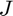
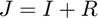
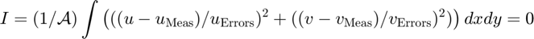
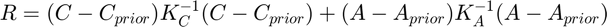
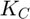
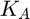
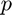
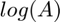
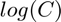

<!DOCTYPE html
  PUBLIC "-//W3C//DTD HTML 4.01 Transitional//EN">
<html><head>
      <meta http-equiv="Content-Type" content="text/html; charset=utf-8">
   <!--
This HTML was auto-generated from MATLAB code.
To make changes, update the MATLAB code and republish this document.
      --><title>Ua2D_DefaultParameters</title><meta name="generator" content="MATLAB 9.14"><link rel="schema.DC" href="http://purl.org/dc/elements/1.1/"><meta name="DC.date" content="2023-07-09"><meta name="DC.source" content="Ua2D_DefaultParameters.m"><style type="text/css">
html,body,div,span,applet,object,iframe,h1,h2,h3,h4,h5,h6,p,blockquote,pre,a,abbr,acronym,address,big,cite,code,del,dfn,em,font,img,ins,kbd,q,s,samp,small,strike,strong,tt,var,b,u,i,center,dl,dt,dd,ol,ul,li,fieldset,form,label,legend,table,caption,tbody,tfoot,thead,tr,th,td{margin:0;padding:0;border:0;outline:0;font-size:100%;vertical-align:baseline;background:transparent}body{line-height:1}ol,ul{list-style:none}blockquote,q{quotes:none}blockquote:before,blockquote:after,q:before,q:after{content:'';content:none}:focus{outine:0}ins{text-decoration:none}del{text-decoration:line-through}table{border-collapse:collapse;border-spacing:0}

html { min-height:100%; margin-bottom:1px; }
html body { height:100%; margin:0px; font-family:Arial, Helvetica, sans-serif; font-size:10px; color:#000; line-height:140%; background:#fff none; overflow-y:scroll; }
html body td { vertical-align:top; text-align:left; }

h1 { padding:0px; margin:0px 0px 25px; font-family:Arial, Helvetica, sans-serif; font-size:1.5em; color:#d55000; line-height:100%; font-weight:normal; }
h2 { padding:0px; margin:0px 0px 8px; font-family:Arial, Helvetica, sans-serif; font-size:1.2em; color:#000; font-weight:bold; line-height:140%; border-bottom:1px solid #d6d4d4; display:block; }
h3 { padding:0px; margin:0px 0px 5px; font-family:Arial, Helvetica, sans-serif; font-size:1.1em; color:#000; font-weight:bold; line-height:140%; }

a { color:#005fce; text-decoration:none; }
a:hover { color:#005fce; text-decoration:underline; }
a:visited { color:#004aa0; text-decoration:none; }

p { padding:0px; margin:0px 0px 20px; }
img { padding:0px; margin:0px 0px 20px; border:none; }
p img, pre img, tt img, li img, h1 img, h2 img { margin-bottom:0px; }

ul { padding:0px; margin:0px 0px 20px 23px; list-style:square; }
ul li { padding:0px; margin:0px 0px 7px 0px; }
ul li ul { padding:5px 0px 0px; margin:0px 0px 7px 23px; }
ul li ol li { list-style:decimal; }
ol { padding:0px; margin:0px 0px 20px 0px; list-style:decimal; }
ol li { padding:0px; margin:0px 0px 7px 23px; list-style-type:decimal; }
ol li ol { padding:5px 0px 0px; margin:0px 0px 7px 0px; }
ol li ol li { list-style-type:lower-alpha; }
ol li ul { padding-top:7px; }
ol li ul li { list-style:square; }

.content { font-size:1.2em; line-height:140%; padding: 20px; }

pre, code { font-size:12px; }
tt { font-size: 1.2em; }
pre { margin:0px 0px 20px; }
pre.codeinput { padding:10px; border:1px solid #d3d3d3; background:#f7f7f7; }
pre.codeoutput { padding:10px 11px; margin:0px 0px 20px; color:#4c4c4c; }
pre.error { color:red; }

@media print { pre.codeinput, pre.codeoutput { word-wrap:break-word; width:100%; } }

span.keyword { color:#0000FF }
span.comment { color:#228B22 }
span.string { color:#A020F0 }
span.untermstring { color:#B20000 }
span.syscmd { color:#B28C00 }
span.typesection { color:#A0522D }

.footer { width:auto; padding:10px 0px; margin:25px 0px 0px; border-top:1px dotted #878787; font-size:0.8em; line-height:140%; font-style:italic; color:#878787; text-align:left; float:none; }
.footer p { margin:0px; }
.footer a { color:#878787; }
.footer a:hover { color:#878787; text-decoration:underline; }
.footer a:visited { color:#878787; }

table th { padding:7px 5px; text-align:left; vertical-align:middle; border: 1px solid #d6d4d4; font-weight:bold; }
table td { padding:7px 5px; text-align:left; vertical-align:top; border:1px solid #d6d4d4; }


  </style></head><body><div class="content"><h2>Contents</h2><div><ul><li><a href="#6">Types of run</a></li><li><a href="#7">Ice flow approximation</a></li><li><a href="#8">Slope of coordinate system with respect to gravity</a></li><li><a href="#9">Sliding law</a></li><li><a href="#10">Boundary conditions</a></li><li><a href="#11">Ensuring flotation</a></li><li><a href="#12">Manually updating geometry in the course of a run.</a></li><li><a href="#14">Element type</a></li><li><a href="#15">Control on transient runs</a></li><li><a href="#16">Restart option</a></li><li><a href="#18">Plotting</a></li><li><a href="#19">Plotting mesh</a></li><li><a href="#20">Numerical variables related to transient runs</a></li><li><a href="#21">Explicit estimation</a></li><li><a href="#22">Numerical Regularization Parameters  (note: these are not related to inverse modeling regularization)</a></li><li><a href="#23">Constraints on viscosity and slipperiness</a></li><li><a href="#24">Non-linear iteration-loop parameters</a></li><li><a href="#25">uvh Convergence criteria</a></li><li><a href="#26">Newton-Raphson, modified Newton-Raphson, Picard Iteration</a></li><li><a href="#27">Backtracking parameters  -line search</a></li><li><a href="#28">Lin equation solver parameters</a></li><li><a href="#29">Internal variables related to matrix assembly</a></li><li><a href="#30">Number of integration points and/or quadrature rule degree</a></li><li><a href="#31">Level of information given during a run</a></li><li><a href="#32">Inversion</a></li><li><a href="#33">Inversion algorithim:</a></li><li><a href="#43">Comparing adjoint gradients with finite-difference gradients</a></li><li><a href="#44">Inverse testing parameters (do not change)</a></li><li><a href="#45">Numbering of nodes and elements</a></li><li><a href="#46">Outputs</a></li><li><a href="#47">Obtaining information about the run, during the run.</a></li><li><a href="#48">General Meshing Options</a></li><li><a href="#49">Selecting the external mesh generator</a></li><li><a href="#50">Options related to the use of the gmsh external mesh generator</a></li><li><a href="#51">Options related to the use of the mesh2d external mesh generator</a></li><li><a href="#52">Controlling element sizes</a></li><li><a href="#53">Options related to the Ua mesh structure variable MUA</a></li><li><a href="#54">Pos. thickness constraints,          (-active set-)</a></li><li><a href="#55">Advance/Retreat mesh and automated activation/deactivation of elements</a></li><li><a href="#56">Uniform global mesh refinement</a></li><li><a href="#57">Adaptive mesh refinement</a></li><li><a href="#58">Calving :  including Level Set Method</a></li><li><a href="#59">Controlling when and how often mesh is adapted</a></li><li><a href="#60">Mesh refinement criteria</a></li><li><a href="#61">Mesh smoothing</a></li><li><a href="#62">Local mesh refinement around grounding line</a></li><li><a href="#63">Local mesh refinement around calving front</a></li><li><a href="#64">Parameters affecting the floating mask</a></li><li><a href="#65">Parameters affecting calculation of grounding line</a></li><li><a href="#67">A and C as element or nodal variables</a></li><li><a href="#68">Adaptive Time Stepping Algorithm (ATSA)   (adapt time step) (automated time stepping)</a></li><li><a href="#69">Mass-balance geometry feedback</a></li><li><a href="#70">Sea ice/melange</a></li><li><a href="#72">Mapping from Mesh1 to Mesh2</a></li><li><a href="#73">Parallel options:</a></li><li><a href="#75">Tracers</a></li><li><a href="#77">Mapping variables from one FE mesh to another</a></li><li><a href="#79">Internal variables and  temporary testing parameters</a></li></ul></div><pre class="codeinput"><span class="keyword">function</span> CtrlVar=Ua2D_DefaultParameters
</pre><p>CtrlVar=Ua2D_DefaultParameters</p><pre>sets the fields of the CtrlVar to their default values</pre><pre>Most likely when running a, only a fairly limited number of the parameters listed below need to be set/changed.
Changing the parameter values from their default values should be done by the user in `DefineInitialUserInput.m'.
That user m-file should be located in a separate run-directory, together with all the other user m-files</pre><pre class="codeinput">CtrlVar.WhoAmI=<span class="string">"Ua2D CtrlVar"</span> ;
</pre><pre class="codeinput">CtrlVar.Experiment=<span class="string">'UaDefaultRun'</span>;
CtrlVar.time=0;               <span class="comment">% In a transient run this variable is the (model) time. Set to some</span>
                              <span class="comment">% reasonable initial value, for example CtrlVar.time=0;</span>
</pre><h2 id="6">Types of run</h2><pre class="codeinput">CtrlVar.UaRunType=<span class="string">""</span> ; <span class="comment">% "-uvh-" , "-uv-h-" , "-uv-" , "-h-" ;</span>


CtrlVar.TimeDependentRun=0 ;  <span class="comment">% either [0|1].</span>
                              <span class="comment">% If true (i.e. set to 1) then the run is a forward transient one, if not</span>
                              <span class="comment">% then velocities based on the current geometry are calculated.</span>
CtrlVar.InverseRun=0;         <span class="comment">% if true then a surface-to-bed inversion is to be performed.</span>
                              <span class="comment">% (in an inverse run the value of CtrlVar.TimeDependentRun is irrelevant)</span>

CtrlVar.Restart=0;            <span class="comment">% If true then the run is a restart run. Note that this variable applies to both forward and inverse runs.</span>
                              <span class="comment">% For example setting:</span>
                              <span class="comment">%       CtrlVar.InverseRun=1;</span>
                              <span class="comment">%       CtrlVar.Restart=1;</span>
                              <span class="comment">% results in a restart of an inverse run. (make sure a corresponding restart file does exist, see below.)</span>
                              <span class="comment">%</span>
CtrlVar.Implicituvh=1;           <span class="comment">% 0: prognostic run is semi-implicit (implicit with respect to h only)</span>
                                 <span class="comment">% 1: prognostic run is fully-implicit (implicit with respect to uvh)</span>

CtrlVar.TotalNumberOfForwardRunSteps=1;   <span class="comment">% maximum number of forward run steps.  In a transient run this will be the maximum number of time steps.</span>
                                          <span class="comment">% In a non-transient (stationary) run, this will be the maximum number of diagnostic calculations.</span>
                                          <span class="comment">% (Typically, the number of forward run steps in a non-transient run will be 1, and the user must make sure to set</span>
                                          <span class="comment">% the value accordingly, i.e.  CtrlVar.TotalNumberOfForwardRunSteps=1;)</span>
                                          <span class="comment">% In a restart run, TotalNumberOfForwardRunSteps is the total number of run steps done within that restart run, i.e.</span>
                                          <span class="comment">% not the total accumulated number of forward run steps.</span>

CtrlVar.UseUserDefinedRunStopCriterion=false ;
</pre><h2 id="7">Ice flow approximation</h2><pre class="codeinput">CtrlVar.FlowApproximation=<span class="string">"SSTREAM"</span> ;  <span class="comment">% any of ['SSTREAM'|'SSHEET'|'Hybrid']</span>
                                       <span class="comment">% Note, both SSTREAM and SSHEET are implemented.</span>
                                       <span class="comment">% But Hybrid is still in development and should not be used for the time being.</span>
CtrlVar.MustBe.FlowApproximation=[<span class="string">"SSTREAM"</span>,<span class="string">"SSHEET"</span>,<span class="string">"Hybrid"</span>,<span class="string">"SSTREAM-rho"</span>,<span class="string">"uvhPrescribed"</span>] ;
</pre><h2 id="8">Slope of coordinate system with respect to gravity</h2><pre class="codeinput">CtrlVar.alpha=0 ;
</pre><h2 id="9">Sliding law</h2><p>Several sliding laws can be defined. These include <b>Weertman</b> (power-law relationship between basal drag and velocity, i.e. u=C tau^m ) and <b>Coulomb</b> friction (basal drag equal a constant times effective pressure, i.e. tau = mu N).  When using Columb friction define mu in DefineSlipperiness.m instead of C.</p><p>The other sliding laws are all just different ways of combining Weertman and Coulomb.</p><p>If the drag calculated using Weertman law is TauW and that calculated using Coulomb law is TauC, while Tau is the drag used, then</p><p><b>Tsai:</b>   Tau=min(TauC,TauW)</p><p><b>Conford:</b>  1/Tau^m = 1/TauC^m + 1/TauW^m</p><p>The <b>Budd</b> sliding law is a simple extension of the Weertman sliding law where:</p><p>u = C tau^m/N^q</p><p>The effective pressure is currently only calculated using a 'zeroth-order' hydrology model, where N=rho g (h-h_f) where h_f is the flotation thickness.</p><pre class="codeinput">CtrlVar.SlidingLaw=<span class="string">"Weertman"</span> ;
CtrlVar.MustBe.SlidingLaw=[<span class="string">"Weertman"</span>,<span class="string">"Budd"</span>,<span class="string">"Tsai"</span>,<span class="string">"Coulomb"</span>,<span class="string">"Cornford"</span>,<span class="string">"Umbi"</span>,<span class="string">"W"</span>,<span class="string">"W-N0"</span>,<span class="string">"minCW-N0"</span>,<span class="string">"C"</span>,<span class="string">"rpCW-N0"</span>,<span class="string">"rCW-N0"</span>]  ;
</pre><h2 id="10">Boundary conditions</h2><pre class="codeinput">CtrlVar.UpdateBoundaryConditionsAtEachTimeStep=0;  <span class="comment">% if true, `DefineBoundaryConditions.m' is called at the beginning of each time step to update the boundary conditions.</span>
                                                   <span class="comment">% otherwise boundary conditions are only updated at the beginning of the run (also at the beginning or a restart run).</span>
                                                   <span class="comment">% Note that whenever the finite-element mesh is modified (for example during mesh refinement),</span>
                                                   <span class="comment">% the boundary conditions are updated through a call to DefineBoundaryConditions.m</span>
CtrlVar.BCsWeights=1;     <span class="comment">% test parameter, do not change</span>
CtrlVar.LinFEbasis=false;  <span class="comment">% test parameter, do not change</span>
<span class="comment">%</span>
</pre><h2 id="11">Ensuring flotation</h2><p>Where the ice is afloat the upper and lower surfaces (s and b), the ocean surface (S) and bedrock (B) and ice density (rho) and ocean density (rhow) become interlinked.</p><p>Generally, s and b are always calculated from h, B and S given rho and rhow. This is done internally at various different stages. Note that s and b, as returned by the user in DefineGeometry.m, will be changed to ensure flotation.</p><p>It is possible to change the default behaviour and calculate h and b from s, B and S.</p><pre class="codeinput">CtrlVar.Calculate.Geometry=<span class="string">"bs-FROM-hBS"</span> ; <span class="comment">% {"bs-FROM-hBS" ; "bh-FROM-sBS" }</span>
</pre><h2 id="12">Manually updating geometry in the course of a run.</h2><p>By default DefineGeometry is only called at the beginning of a run, and after any mesh modifications such as re-meshing.</p><p>However, it is possible to force additional `manual' updates to geometry in a forward run. A `manual' update is simply a call to DefineGeometry.m where the geometry is then defined by the user.</p><p>The geometrical variables are: s, b, B and S.</p><p>To specify which geometrical variables should be updated/modifed set the following stings acordingly:</p><pre class="codeinput">CtrlVar.GeometricalVarsDefinedEachDiagnosticRunStepByDefineGeometry=<span class="string">""</span>;
CtrlVar.GeometricalVarsDefinedEachTransienRunStepByDefineGeometry=<span class="string">""</span>;
<span class="comment">%</span>
<span class="comment">% Possible values for these stings are any combinations of  "-s-b-S-B-rho-rhow-g-".</span>
<span class="comment">%</span>
<span class="comment">% Examples:</span>
<span class="comment">%</span>
<span class="comment">%   CtrlVar.GeometricalVarsDefinedEachTransienRunStepByDefineGeometry="-S-";</span>
<span class="comment">%</span>
<span class="comment">%  forces an update of the ocean surface, S, within each time step. This could, for example, be used to specify a time varying ocean surface</span>
<span class="comment">%  elevation due to tides. Hence, DefineGeometry will be called at each transient with FieldsToBeDefined='S'</span>
<span class="comment">%</span>
<span class="comment">%   CtrlVar.GeometricalVarsDefinedEachDiagnosticRunStepByDefineGeometry="-s-b-S-B-rho-rhow-g-";</span>
<span class="comment">%</span>
<span class="comment">% forces all geometrical variables, i.e. upper ice surface (s), lower ice surface (b), ocean surface (S), and bedrock (B) to be defined in each</span>
<span class="comment">% diagnostic run step through a call to DefineGeometry with FieldsToBeDefined='-s-b-S-B-rho-rhow-g-'</span>
<span class="comment">%</span>
<span class="comment">% The default option is not to modify any geometrical variables manually within a run step.</span>
<span class="comment">%</span>
</pre><pre class="codeinput">CtrlVar.TestForRealValues=1;

CtrlVar.IgnoreComplexPart=1;  <span class="comment">% it is possible that when solving an asymmetrical system,</span>
                              <span class="comment">% numerical errors cause the solution to no longer be real.</span>
                              <span class="comment">% In that case, set to true to simply ignor complex part.</span>
</pre><h2 id="14">Element type</h2><p>The options are: linear, quadratic, or cubic Lagrangian triangle elements</p><pre class="codeinput">CtrlVar.TriNodes=3 ;  <span class="comment">% Possible values are 3, 6, 10 node (linear/quadradic/cubic)</span>
CtrlVar.MustBe.TriNodes=[3,6,10] ;  <span class="comment">% Possible values are 3, 6, 10 node (linear/quadradic/cubic)</span>
</pre><h2 id="15">Control on transient runs</h2><p>Once either the number of time steps or total time modeled reaches prescribed values the run stops.</p><pre class="codeinput">CtrlVar.TotalTime=1e10;          <span class="comment">% maximum model time</span>
CtrlVar.dt=1;                    <span class="comment">% time step (usually overwritten by user by defining dt in the DefineInitialUserInputFile</span>
CtrlVar.dtmin=1e-12;             <span class="comment">% for numerical reasons the time step should always be larger than some very small value</span>

CtrlVar.InitialDiagnosticStep=0; <span class="comment">% Start a transient run with an initial diagnostic step, even if the step is a restart step.</span>
                                 <span class="comment">% Irrespective of the value of this variable, an initial diagnostic step is always performed at the beginning of a transient run if it is not a restart run.</span>
                                 <span class="comment">% An initial diagnostic step is therefore done at the beginning of a transient run if:</span>
                                 <span class="comment">% 1) so demanded by the user, i.e. if the user sets CtrlVar.InitialDiagnosticStep=1, and</span>
                                 <span class="comment">% 2) at always at the start of an implicit uvh transient run which is not a</span>
                                 <span class="comment">%    restart run.</span>
                                 <span class="comment">% Howere, unless demanded by the user, no initial diagnostic step is done at the beginning of a transient restart run.</span>

CtrlVar.InitialDiagnosticStepAfterRemeshing=0 ; <span class="comment">% Forces a diagnostic calculation after re-meshing.</span>
                                                <span class="comment">% Note: a diagnostic calculation is always done after global re-meshing</span>
                                                <span class="comment">% irrespective of the value of this parameter. However, after local re-meshing,</span>
                                                <span class="comment">% and provided CtrlVar. LocalAdaptMeshSmoothingIterations=0, a diagnostic calculation is</span>
                                                <span class="comment">% not performed unless this parameter is set to true.</span>
</pre><h2 id="16">Restart option</h2><pre class="codeinput">CtrlVar.Restart=0;                       <span class="comment">% either 0/false or 1/true.  Set to 1 for a restart run. (This also work for inverse runs. See below.)</span>
CtrlVar.WriteRestartFile=1;              <span class="comment">% if true, a restart file is written</span>
CtrlVar.WriteRestartFileInterval=100;    <span class="comment">% restart file written at this time-step interval  (note, these are run steps, not model time)</span>
CtrlVar.ResetTime=0 ;                    <span class="comment">% set to 1 to reset (model) time at start of restart run</span>
CtrlVar.RestartTime=NaN;                 <span class="comment">% if ResetTime is true, then this is the model time at the start of the restart run</span>
CtrlVar.ResetTimeStep=0;                 <span class="comment">% true if time step should be reset to dt given in the DefineInitialUserInputFile</span>
CtrlVar.ResetRunStepNumber=0;            <span class="comment">% if true, RunStepNumber is set to zero at the beginning of a restart run.</span>
CtrlVar.NameOfRestartFiletoRead=<span class="string">'Ua2D_Restartfile.mat'</span>;
CtrlVar.NameOfRestartFiletoWrite=<span class="string">'Ua2D_Restartfile.mat'</span>;
</pre><pre class="codeinput">CtrlVar.SaveAdaptMeshFileName=[];          <span class="comment">% file name for saving adapt mesh. If left empty, no file is written</span>
</pre><h2 id="18">Plotting</h2><p>Most plotting is typically done by the user using his own version of the m-file</p><pre class="language-matlab">DefineOutputs.m
</pre><p>or in a separate post-processing step.</p><p>However, some basic plots can be generated directly from within Ua.</p><pre class="codeinput">CtrlVar.doplots=1;          <span class="comment">% if true then plotting during runs by Ua are allowed, set to 0 to suppress all plots</span>
CtrlVar.PlotXYscale=1000;     <span class="comment">% used to scale x and y axis of some of the figures, only used for plotting purposes</span>
CtrlVar.PlotWaitBar=1;      <span class="comment">% a waitbar is plotted</span>
CtrlVar.doAdaptMeshPlots=1; <span class="comment">% if true and if CtrlVar.doplots true also, then do some extra plotting related to adapt meshing</span>
CtrlVar.PlotOceanLakeNodes=0;        <span class="comment">% Shows which nodes are considered a part of the `ocean' and which are within `lakes' that have no connection the ocean</span>
CtrlVar.PlotMeltNodes=0;

                           <span class="comment">% (if spatial units are in meters, setting this to 1000 produces xy axis with the units km)</span>
CtrlVar.PlotsXaxisLabel=<span class="string">'x'</span> ; CtrlVar.PlotsYaxisLabel=<span class="string">'y'</span> ; <span class="comment">%</span>
CtrlVar.MinSpeedWhenPlottingVelArrows=0;    <span class="comment">% when plotting vel arrows with smaller speed are scaled so that their speed its</span>
                                            <span class="comment">% equal to this value  (setting this to a large value makes all arrows</span>
                                            <span class="comment">% equally long)</span>

CtrlVar.BoundaryConditionsFixedNodeArrowScale=1;  <span class="comment">% Determines the size of arrows indicating boundary conditions when plotting boundary conditions.</span>
                                                  <span class="comment">% The arrows are automatically scales with respect to mesh size, but if they are</span>
                                                  <span class="comment">% too small or too large this parameter can be used to affect their size.</span>


CtrlVar.PlotSUPGparameter=0;
CtrlVar.PlotPosition=[100 100 1000 1000];
CtrlVar.Plot.Units.xDistance=<span class="string">"m"</span> ;
CtrlVar.Plot.Units.yDistance=<span class="string">"m"</span> ;
CtrlVar.Plot.Units.zDistance=<span class="string">"m"</span> ;
CtrlVar.Plot.Units.Time=<span class="string">"yr"</span> ;
CtrlVar.Plot.Units.Stress=<span class="string">"kPa"</span> ;
</pre><h2 id="19">Plotting mesh</h2><p>The mesh can be plotted within Ua by setting CtrlVar.PlotMesh=1, or by calling either PlotFEmesh or PlotMuaMesh (see help PlotFEmesh)</p><pre class="codeinput">CtrlVar.PlotMesh=0;        <span class="comment">% If true then FE mesh is shown every time a new mesh is generated</span>
CtrlVar.WhenPlottingMesh_PlotMeshBoundaryCoordinatesToo=0;
CtrlVar.PlotBCs=0;         <span class="comment">% If true then boundary conditions are shown at the beginning of the run</span>
CtrlVar.PlotNodes=0;       <span class="comment">% If true then nodes are plotted when FE mesh is shown</span>
CtrlVar.PlotLabels=0 ;     <span class="comment">% If true elements and nodes are labeled with their respective numbers</span>
CtrlVar.LabelNodes=0;      <span class="comment">% Nodal labels are plotted</span>
CtrlVar.LabelElements=0;   <span class="comment">% Element labels are plotted</span>
CtrlVar.PlotNodesSymbol=<span class="string">'o'</span>;
CtrlVar.PlotNodesSymbolSize=3;
CtrlVar.MeshColor=<span class="string">'k'</span>; CtrlVar.NodeColor=<span class="string">'k'</span>;
</pre><h2 id="20">Numerical variables related to transient runs</h2><p>In general there should be no need to ever change these values except for test purposes</p><p>Transient runs can be done either (fully) implicitly, or semi-implicitly In a (fully) implicit approach, the time-integration is done implicitly with respect to both velocities and thickness. In a semi-implicit approach, the time-integration is done implicitly with respect to thickness, and explicitly with respect to velocities.</p><p>There are currently two fully-implicit time-stepping methods implemented: The 'theta' and the 'supg' methods.</p><p>The 'theta' method uses a weighted sum of the values at the beginning and the end of a time step. The weighting is controlled by CtrlVar.theta and depending on the value of theta different types of approximations are obtained: 0,1/2,1 gives forward Euler, Lax-Wendroff and backwards Euler, respectively. The 'supg' method is a Streamline-Upwind Petrov-Galerkin method. The supg-method uses the same weighting as the 'theta' method, but the test function for the mass-conservation equation is different.</p><p>The default time-stepping method is: Fully implicit Streamline-Upwind Petrov-Galerkin with theta=0.5 (Lax Wendroff).</p><pre class="codeinput">CtrlVar.Implicituvh=1;           <span class="comment">% 0: prognostic run is semi-implicit (implicit with respect to h only)</span>
                                 <span class="comment">% 1: prognostic run is fully-implicit (implicit with respect to uvh)</span>

CtrlVar.uvhImplicitTimeSteppingMethod=<span class="string">"SUPG"</span>; <span class="comment">%</span>
CtrlVar.uvhSemiImplicitTimeSteppingMethod=<span class="string">"SUPG"</span>; <span class="comment">% 'Galerkin'|'supg'</span>

CtrlVar.MustBe.uvhImplicitTimeSteppingMethod=<span class="string">"SUPG"</span>; <span class="comment">% 'theta'|'supg' actually at the moment I've disabled the theta method...</span>
CtrlVar.MustBe.uvhSemiImplicitTimeSteppingMethod=[<span class="string">"TG3"</span>,<span class="string">"Galerkin"</span>,<span class="string">"SUPG"</span>] ;


CtrlVar.SUPG.beta0=1 ; CtrlVar.SUPG.beta1=0 ; <span class="comment">% parameters related to the SUPG method.</span>
CtrlVar.theta=0.5;    <span class="comment">% theta=0 is forward Euler, theta=1 is backward Euler, theta=1/2 is Lax-Wendroff and is most accurate</span>
CtrlVar.hTheta=0.5;
<span class="comment">% Note: An additional time-stepping method is the Third-Order Taylor-Galerkin (TG3) method.</span>
<span class="comment">% It has not been fully tested but seems to work very well for fully implicit transient calculation.</span>
<span class="comment">% This option that can be obtained by setting:</span>
<span class="comment">% CtrlVar.TG3=1 ;  CtrlVar.Test1=1;  CtrlVar.Test0=0;   CtrlVar.theta=0.5;</span>
<span class="comment">% and using the fully-implicit time-stepping option (CtrlVar.Implicituvh=1));</span>


CtrlVar.TG3=0 ; <span class="comment">% if true, the prognostic steps uses a third-order Taylor-Galerkin method</span>
                <span class="comment">% currently only implemented for periodic boundary conditions</span>
                <span class="comment">% Note, only theta=0.5 is strictly consistent with TG3=1, so</span>
                <span class="comment">% for backward Euler set theta=1 and TG3=0</span>
CtrlVar.IncludeTG3uvhBoundaryTerm=0;                     <span class="comment">% keep zero (only used for testing)</span>
CtrlVar.IncludeDirichletBoundaryIntegralDiagnostic=0;    <span class="comment">% keep zero (only used for testing)</span>
</pre><h2 id="21">Explicit estimation</h2><p>In a transient run u, v and h can estimated explicity ahead of an implicit uvh calculation.  If the explicit estimate is a good starting point, then the number of non-linear uvh iterations is reduced. One can either use second-order Adams-Bashforth method for a variable time step, or calculate dh/dt explicitly from flux convergence and then set h1=h0+dt dh/dt.   Generally both method work fine and the Adams-Bashforth method used to be the default approach. However, experience has shown that occasionally the Adams-Bashforth extrapolation appears to give rise to a bad starting points for the uvh NR iteration with a loss of convergence. The "-dhdt-" option is arguably better in the sense that one calculates dh/dt directly from the velocity field, rather than using an estimate of dh/dt from the two previous solutions.</p><pre class="codeinput">CtrlVar.ExplicitEstimationMethod=<span class="string">"-Adams-Bashforth-"</span> ; <span class="comment">% {"-Adams-Bashforth-","-dhdt-"}</span>
CtrlVar.MustBe.ExplicitEstimationMethod=[<span class="string">"-Adams-Bashforth-"</span>,<span class="string">"-dhdt-"</span>,<span class="string">"-no extrapolation-"</span>] ;
CtrlVar.LimitRangeInUpdateFtimeDerivatives=false ;
</pre><h2 id="22">Numerical Regularization Parameters  (note: these are not related to inverse modeling regularization)</h2><p>Note: Some of those paramters have physical dimentions and these values may have to be       adjusted to the specific situation.</p><pre class="codeinput">CtrlVar.SpeedZero=1e-4;     <span class="comment">% needs to be larger than 0 but should also be much smaller than any velocities of interest.</span>
CtrlVar.EpsZero=1e-10;      <span class="comment">% needs to be larger than 0 but should also be much smaller than any effective strain rates of interest.</span>

CtrlVar.etaZero=10; <span class="comment">%  Minimum value for the effective viscosity</span>
<span class="comment">%                      For Glens flow law the effective viscosity is 0.5 A^(-1/n) e^((1-n)/n)</span>
<span class="comment">%                      where e is the effective strain rate.  The effective</span>
<span class="comment">%                      strain rate on glaciers is usually around 10^(-4) to</span>
<span class="comment">%                      10^(-2) 1/yr.  A save lower estimate for the effective viscosity would then be</span>
<span class="comment">%                      taking A for temperate ice and strain rates of 1 (1/yr).</span>
<span class="comment">%                      giving:</span>
<span class="comment">%                      n=3 ; eps=1 ; 0.5*AGlenVersusTemp(0)^(-1/n) *181 eps^((1-n)/n) =181</span>
<span class="comment">%                      So settting etaZero=10 kPa/yr would not affect the effective viscosity</span>
<span class="comment">%                      in all realistic cases.  However, this might</span>
<span class="comment">%                      sometimes need to me adjusted. Before May-2023 the</span>
<span class="comment">%                      default value was etaZero=0, ie no lower limit on</span>
<span class="comment">%                      the effective viscosity, but this did occasionally</span>
<span class="comment">%                      cause numerical convergence issues.</span>
<span class="comment">%</span>
<span class="comment">%                      Whatever value for etaZero is selected, the value should be small compared to</span>
<span class="comment">%                      the smallest eta values based on direct use of Glen's flow law.</span>
<span class="comment">%                      This can be tested by calculating the effective</span>
<span class="comment">%                      viscosity values and plotting a histogram and making</span>
<span class="comment">%                      and inspecting the distribution and how it is</span>
<span class="comment">%                      affected by the value of etaZero, e.g.</span>
<span class="comment">%</span>
<span class="comment">%   etaInt=calcStrainRatesEtaInt(CtrlVar,MUA,F.ub,F.vb,F.AGlen,F.n); figure ; histogram((log10(etaInt(:))),Normalization="probability") ; hold on ; xline(log10(CtrlVar.etaZero),'r',LineWidth=2)</span>
<span class="comment">%</span>
<span class="comment">%</span>

CtrlVar.Czero=0 ;           <span class="comment">% must be much smaller than C.</span>
CtrlVar.HeZero=0;           <span class="comment">% shifts the floating/grounding mask when calculating basal drag, must be &lt;&lt; 1. (In effect this shift introduces a</span>
                            <span class="comment">% non-zero basal drag term everywhere.)</span>
                            <span class="comment">%</span>
CtrlVar.Nzero=1e-20    ;    <span class="comment">% lower value for effective pressure</span>

CtrlVar.CAdjointZero=CtrlVar.Czero; <span class="comment">% used as a regularization parameter when calculating dIdCq.</span>
CtrlVar.dbdxZero=1;   <span class="comment">% when calculating basal shear stresses in the hybrid approximation, a very large bed slope causes errors.</span>
CtrlVar.dbdyZero=1;   <span class="comment">% a crude solution is to limit bed slopes to 45 degrees.</span>
CtrlVar.AGlenAdjointZero=100*eps;
CtrlVar.AdjointEpsZero=CtrlVar.EpsZero;
</pre><h2 id="23">Constraints on viscosity and slipperiness</h2><p>These constraints are always enforced, but only really of any importance when inverting for A and/or C. (Using SIA or the hybrid approximation Cmin MUST be set to 0, or at least to a value much less than Czero!)</p><pre class="codeinput"><span class="keyword">switch</span> lower(CtrlVar.FlowApproximation)
    <span class="keyword">case</span> <span class="string">'sstream'</span>
        CtrlVar.Cmin=1e-20;
    <span class="keyword">otherwise</span>
        CtrlVar.Cmin=0;
<span class="keyword">end</span>
CtrlVar.Cmax=1e50;
CtrlVar.AGlenmin=1e-20;
CtrlVar.AGlenmax=1e20;
</pre><h2 id="24">Non-linear iteration-loop parameters</h2><p>The non-linear system is considered solved once the residuals are smaller than</p><pre class="language-matlab">CtlrVar.NLtol
</pre><p>and the normalized chances in u,h and \lambda smaller than du, dh and dl.</p><p>The most (arguably even the only) important number is NLtol. NLtol is a tolerance on the norm of the solution residuals, i.e. the resulting residuals once the solution is plugged back into the equation. So NLtol should ALWAYS be set to a small value (for example &lt;1e-10)</p><p>The CtrlVar.du/dh/dl are tolerances for the chance in u,h, and \lambda, respectively, between subsequent non-linear iteration steps. Although one would expect these to go to zero with increasing iteration number, these are not very reliable estimates of the actual error.  Generally set du and dh to not too large value, but do not focus too much on those numbers (The error in solving the boundary conditions is always checked internally.)</p><p>Note: there is no need to put any constrains on the Lagrange variables used to enforce the BCs because 1) the BCs are currently always linear, and 2) it is always checked internally that the BCs have been solved correctly. In fact, it can be a bad idea to enforce a limit on this change because sometimes the change in lambda between non-linear iteration steps is just a direct response to how the primary variables (u,v,h) change.  The norm of these changes can then be large despite the BCs being exactly fulfilled.)</p><h2 id="25">uvh Convergence criteria</h2><p>The non-linear uvh/uv loops are considered to have converged if:</p><pre>1) Work and Force tolerances are both less than:</pre><pre class="codeinput">CtrlVar.uvhDesiredWorkAndForceTolerances=[inf 1e-15];
<span class="comment">% and, furthermore, at least one of Work and Force tolerances are less than:</span>
CtrlVar.uvhDesiredWorkOrForceTolerances=[inf 1e-15];
<span class="comment">%Note: The default uvh tolerances set limits on the Force tolerance only.</span>

<span class="comment">% 2) If the step length in the backtracking becomes smaller than</span>
CtrlVar.uvhExitBackTrackingStepLength=1e-3;
<span class="comment">% while at the same time these Work and Force tolerances also fullfilled:</span>
CtrlVar.uvhAcceptableWorkAndForceTolerances=[inf 1e-6];
CtrlVar.uvhAcceptableWorkOrForceTolerances=[1 1e-8];


CtrlVar.uvDesiredWorkAndForceTolerances=[inf 1e-15];
CtrlVar.uvDesiredWorkOrForceTolerances=[inf 1e-15];
CtrlVar.uvExitBackTrackingStepLength=1e-10;
CtrlVar.uvAcceptableWorkAndForceTolerances=[inf 1e-15];
CtrlVar.uvAcceptableWorkOrForceTolerances=[inf 1e-15];

CtrlVar.hDesiredWorkAndForceTolerances=[1000 1e-10];
CtrlVar.hDesiredWorkOrForceTolerances=[1 1e-15];
CtrlVar.hExitBackTrackingStepLength=1e-4;
CtrlVar.hAcceptableWorkAndForceTolerances=[inf 1e-6];
CtrlVar.hAcceptableWorkOrForceTolerances=[1 1e-8];
CtrlVar.hSolverMaxIterations=50;


CtrlVar.LevelSetSolverMaxIterations=100;
CtrlVar.LSFDesiredWorkAndForceTolerances=[1e-15 1e-15];
CtrlVar.LSFDesiredWorkOrForceTolerances=[inf 1e-15];
CtrlVar.LSFExitBackTrackingStepLength=1e-3;
CtrlVar.LSFAcceptableWorkAndForceTolerances=[1e-10 1e-12];
CtrlVar.LSFAcceptableWorkOrForceTolerances=[Inf 1e-12];


CtrlVar.uvhMinimisationQuantity=<span class="string">"Force Residuals"</span>;   <span class="comment">% used in SSTREAM/SSA when solving implictly for u, v, and h</span>
CtrlVar.uvMinimisationQuantity=<span class="string">"Force Residuals"</span>;    <span class="comment">% used in SSTREAM/SSA when solving implictly for velocities.</span>
CtrlVar.hMinimisationQuantity=<span class="string">"Force Residuals"</span>;     <span class="comment">% used in SSHEET/SIA when solving implictly for h</span>
CtrlVar.LSFMinimisationQuantity=<span class="string">"Force Residuals"</span>;

CtrlVar.MustBe.uvhMinimisationQuantity=[<span class="string">"Force Residuals"</span>,<span class="string">"Work Residuals"</span>];
CtrlVar.MustBe.uvMinimisationQuantity=[<span class="string">"Force Residuals"</span>,<span class="string">"Work Residuals"</span>];
CtrlVar.MustBe.hMinimisationQuantity=[<span class="string">"Force Residuals"</span>,<span class="string">"Work Residuals"</span>];
CtrlVar.MustBe.LSFMinimisationQuantity=[<span class="string">"Force Residuals"</span>,<span class="string">"Work Residuals"</span>];


CtrlVar.uvh.SUPG.tau=<span class="string">"taus"</span> ; <span class="comment">% {'tau1','tau2','taus','taut'}</span>
CtrlVar.h.SUPG.tau=<span class="string">"taus"</span>;  CtrlVar.h.SUPG.Use=1;

CtrlVar.uvh.SUPG.tauMultiplier=1 ;
CtrlVar.h.SUPG.tauMultiplier=1 ;
</pre><h2 id="26">Newton-Raphson, modified Newton-Raphson, Picard Iteration</h2><p>When solving the non-linear system (forward model) the recommended option is is to use the full Newton-Raphson method</p><p>One can also use the modified Newton-Raphson or the Picard iteration.</p><p>Modified Newton-Raphson only evaluates the left-hand side (the stiffness matrix) if certain criteria are fulfilled. This will reduced time spend with matrix assembly but also reduced the rate of convergence. Depending on the problem using the modified NR method may, or may not, lead to an overall reduction in computational time.</p><p>When using the modified Newton-Raphson method, there are two criteria that determine if the left-hand side is updated or not: 1) interval and 2) (residual) reduction criteria. The interval criteria determines the number of iterations between updates. (The matrix is always updated at the beginning of the non-linear iteration.) The reduction criteria forces re-assembly if the reduction in last iteration was not greater than a given fraction.</p><p>Note:Most of the following parameters related to the NR iteration do, in general, not to be modified and the default values should in most situation be OK.</p><pre class="codeinput">CtrlVar.NR=1;                             <span class="comment">% 1 gives Newton-Raphson (use Newton-Raphson whenever possible)</span>
CtrlVar.ModifiedNRuvIntervalCriterion=1;  <span class="comment">% interval between matrix updates, always a positive integer number.</span>
CtrlVar.ModifiedNRuvReductionCriterion=0.5; <span class="comment">% fractional reduction forcing an update</span>
CtrlVar.ModifiedNRuvhIntervalCriterion=1;
CtrlVar.ModifiedNRuvhReductionCriterion=0.5;
<span class="comment">% Settingn for example:</span>
<span class="comment">% CtrlVar.ModifiedNRuvIntervalCriterion=10;</span>
<span class="comment">% CtrlVar.ModifiedNRuvReductionCriterion=0.95;</span>
<span class="comment">% will cause the matrix only to be updated every 10-th non-linear iteration, unless</span>
<span class="comment">% the fractional reduction r/r0 over previous iteration was less than 0.95.</span>
<span class="comment">%</span>

CtrlVar.Picard=0;        <span class="comment">% 1 gives Picard iteration, otherwise NR iteration (always use NR whenever possible).</span>
CtrlVar.NRviscosity=1;    <span class="comment">% if 1 derivatives with respect to viscosity are included in the NR method</span>
CtrlVar.NRbeta2=1;        <span class="comment">% if 1 derivatives with respect to slipperiness are included in the NR method</span>
                          <span class="comment">% Note: if Picard=0 then the NRviscosity and NRbeta2 values are overwritten and set to 0.</span>
CtrlVar.NRitmax=50;       <span class="comment">% maximum number of NR iteration</span>
CtrlVar.Picarditmax=30;  <span class="comment">% maximum number of Picard iterations</span>
CtrlVar.iarmmax=10;       <span class="comment">% maximum number of backtracking steps in NR and Picard iteration</span>
CtrlVar.NRitmin=1;        <span class="comment">% minimum number of NR iteration</span>
CtrlVar.NewtonAcceptRatio=0.5;  <span class="comment">% accepted reduction in NR without going into back-stepping</span>
CtrlVar.NewtonBacktrackingBeta=1e-4;  <span class="comment">%  affects the Amarijo exit criteria in the back-stepping</span>
CtrlVar.LineSearchAllowedToUseExtrapolation=0; <span class="comment">% If true, backtracking algorithm may start with an extrapolation step.</span>
CtrlVar.BacktrackingGammaMin=1e-10;  <span class="comment">% smallest step-size in Newton/Picard backtracking as a fraction of the full Newton/Picard step.</span>
CtrlVar.BacktrackingGammaMinAdjoint=1e-20; <span class="comment">% smallest step-size allowed while backtracking in adjoint step. (This is an absolut step size, i.e. not a fraction of initial step size.)</span>

CtrlVar.GuardAgainstWildExtrapolationInExplicit_uvh_Step=0;


CtrlVar.uvGroupAssembly=false;
CtrlVar.uvhGroupAssembly=false;
</pre><h2 id="27">Backtracking parameters  -line search</h2><p>Parameters affecting the backtracking algorithm</p><pre class="codeinput">CtrlVar.BackTrackBeta=0.1 ;               <span class="comment">% beta in the ArmijoGoldstein exit condition</span>
CtrlVar.BackTrackMaxIterations=50 ;       <span class="comment">% this is plenty</span>
CtrlVar.BackTrackMaxExtrapolations=50  ;  <span class="comment">% if set to zero no extrapolation is done (i.e. pure backtracking)</span>
CtrlVar.BackTrackExtrapolationRatio=2.5 ; <span class="comment">% ratio between new and old step size in each extrapolation step</span>
CtrlVar.BackTrackMinXfrac=1e-10 ;         <span class="comment">% exit backtracking if pos. of minimum is changing by less than this fraction of initial step</span>
CtrlVar.BackTrackMaxFuncSame=3 ;          <span class="comment">% exit backtracking if this many evaluations of cost function resulted in no further decrease of cost function</span>

<span class="comment">% Limit stepsize based on quadradic/cubic interpolation to these lower/upper</span>
<span class="comment">% limits withing the current lower/upper range.</span>
CtrlVar.BackTrackGuardLower=0.25;
CtrlVar.BackTrackGuardUpper=0.95;

<span class="comment">% Backtracking continues even if target has been reached if last reduction in</span>
<span class="comment">% ratio is smaller than:</span>
CtrlVar.BackTrackContinueIfLastReductionRatioLessThan=0.5;
<span class="comment">% The ratio is CurrentValue/LastValue, so smaller ratio means greater reduction.</span>
<span class="comment">% Note: The inital target is CtrlVar.NewtonAcceptRatio, and</span>
<span class="comment">% after that target=f(0)+CtrlVar.BackTrackBeta slope step</span>
<span class="comment">% CurrentValue/InitalValue &lt; CtrlVar.NewtonAcceptRatio</span>
<span class="comment">% unless some other exit critera are reached.</span>
</pre><h2 id="28">Lin equation solver parameters</h2><p>Linear symmetrical solver is either Matlab \ operator, or Augmented Lagrangian Solver (ALS)</p><p>The matlab \ operator sometimes fails for indefinite block matrices. For that reason the default linear solver is Augmented Lagrangian Solver (ALS)</p><p>ALS uses an outer iteration and the inner problem is solved direction. Usually only a few outer iterations are required.</p><p>For asymmetrical indefinite block-structured systems the ALS method is almost always better than the default Matlab backslash operator. ALS is an iterative method with an inner and outer iteration. Convergence depends on ALSpower. If ALS does not converge then tying a smaller ALSpower usually does the trick.</p><pre class="codeinput">CtrlVar.SymmSolver=<span class="string">'Auto'</span>;   <span class="comment">%   {'Backslash','Uzawa','AugmentedLagrangian'}</span>
CtrlVar.AsymmSolver=<span class="string">'Auto'</span>;  <span class="comment">%   {'Backslash','Uzawa','AugmentedLagrangian'}</span>
CtrlVar.ALSIterationMin=3;     CtrlVar.ALSIterationMax=25;   CtrlVar.ALSpower=5;  <span class="comment">% ALS parameters</span>
CtrlVar.UzawaIterationMin=3;   CtrlVar.UzawaIterationMax=25; CtrlVar.UzawaPower=5;  <span class="comment">% Uzawa parameters</span>
CtrlVar.LinSolveTol=1e-8;   <span class="comment">% Residual when solving linear system.</span>
                            <span class="comment">% If the standard Matlab backslash algorithm is used, default Matlab values apply and this number is not used</span>
                            <span class="comment">% For indefinite block-structured systems of the type [A B' ; B 0] [x;y]=[f;g]</span>
                            <span class="comment">% the relative residual is defined in standard way as:</span>
                            <span class="comment">% Residual=norm([A B' ; B sparse(m,m)]*[x;y]-[f ; g])/norm([f;g]);</span>
                            <span class="comment">% A value of 1e-8 is arguably alread a relativily small number, in many cases 1e-6 would be considered acceptable</span>
CtrlVar.Solve.LUvector=false; <span class="comment">% LU factorisation done using vector format, consider seeting to true if memory an issue</span>
</pre><h2 id="29">Internal variables related to matrix assembly</h2><p>These variables are only for testing purposes. Do not change from default values.</p><h2 id="30">Number of integration points and/or quadrature rule degree</h2><p>if left empty, the number of integration points is set automatically</p><pre class="codeinput">CtrlVar.niph=[] ;  <span class="comment">% number of integration points for uvh in implicit runs, and for the h-solver in semi-implicit runs</span>
CtrlVar.nip=[] ;   <span class="comment">% number of integration points for the uv solver</span>
                   <span class="comment">% Possible Nr of integration points: 1, 3, 4, 6, 7, 9, 12, 13, 16, 19, 28, 37.</span>
                   <span class="comment">% The default values are:</span>
                   <span class="comment">% nip=6 and niph=6 for linear elements (three node elements)</span>
                   <span class="comment">% nip=12 and niph=12 for quadratic elements (six node elements)</span>
                   <span class="comment">% nip=16 and niph=16 for cubic elements (ten node elements)</span>
                   <span class="comment">% The default values are usually fine, but sometimes increasing the number of</span>
                   <span class="comment">% integration points improves convergence of the Newton-Raphson iteration.</span>

CtrlVar.QuadratureRuleDegree=[] ; <span class="comment">%  leaving empty means automated selection</span>
CtrlVar.QuadRules2021=true ; <span class="comment">% Use the new quad rules implemented in 2021</span>
                             <span class="comment">% This option allows for greater flexibility in selecting quad points.</span>
</pre><h2 id="31">Level of information given during a run</h2><p>A number of variables affect the information given during a run. Generally the higher the number, the more information is given.</p><p>Depending on info levels, figures might be plotted as well. However, this is only done if corresponding plotting logicals such as CtrlVar.doplots, CtrlVar.doAdaptMeshPlot, etc, are also true.</p><pre class="codeinput">CtrlVar.InfoLevel=1;        <span class="comment">% Overall level of information (forward runs)</span>

CtrlVar.InfoLevelInverse=1; <span class="comment">% Overall level of information (inverse runs).</span>
                            <span class="comment">% Note: generally good to combine with CtrlVar.InfoLevelNonLinIt=0;</span>
                            <span class="comment">% CtrlVar.InfoLevel=0; to suppress information related to the forward step.</span>


CtrlVar.InfoLevelNonLinIt=1;
<span class="comment">%</span>
<span class="comment">%</span>
<span class="comment">% The level of information giving about the non-linear iteration is determine</span>
<span class="comment">% by the variable</span>
<span class="comment">%</span>
<span class="comment">%   CtrlVar.InfoLevelNonLinIt</span>
<span class="comment">%</span>
<span class="comment">% Higher values give more information</span>
<span class="comment">%</span>
<span class="comment">%   0  : no information on non-linear step printed.</span>
<span class="comment">%   1  : basic convergence information at end of non-linear step.</span>
<span class="comment">%  &gt;1  : detailed info on residuals given at the end of non-linear step.</span>
<span class="comment">% &gt;=2  : info on backtracking step as well.</span>
<span class="comment">% &gt;=10 : calculates/plots additional info on residuals as a function of step size within line search, and rate of convergence</span>
<span class="comment">% &gt;=100 : plots residual vectors</span>
<span class="comment">%</span>
<span class="comment">%</span>
<span class="comment">% The level of information giving about adaptive meshing is determined by the</span>
<span class="comment">% variable</span>
<span class="comment">%</span>
<span class="comment">%   CtrlVar.InfoLevelAdaptiveMeshing</span>
<span class="comment">%</span>
<span class="comment">% Some plots are generated if the value is &gt;=5, but only if the logical variables</span>
<span class="comment">%</span>
<span class="comment">%   CtrlVar.doplots</span>
<span class="comment">%   CtrlVar.doAdaptMeshPlots</span>
<span class="comment">%</span>
<span class="comment">% are both true.</span>
<span class="comment">%</span>
<span class="comment">%   0   : no information on adaptive meshing printed.</span>
<span class="comment">% &gt;=10  : plots showing mesh before and at the end of each mesh adaptaion.</span>
<span class="comment">% &gt;=100 : Further plots on changes in mesh during an adapt mesh iteration produced.</span>
<span class="comment">%</span>
<span class="comment">%</span>
<span class="comment">%</span>
CtrlVar.InfoLevelAdaptiveMeshing=1;

CtrlVar.InfoLevelLinSolve=0;  <span class="comment">% If the linear solver does not converge (it sometimes uses a inner and outer loop to deal with indefinite systems)</span>
                              <span class="comment">% then increasing this number will give further information. G</span>

CtrlVar.ThicknessConstraintsInfoLevel=1 ;
CtrlVar.hInfoLevel=1;         <span class="comment">% Infolevel for the h solve when using semi-implicit uv/h approach</span>
CtrlVar.InfoLevelThickMin=0 ; <span class="comment">% if &gt;=1 prints out info related to resetting thickness to min thick</span>
                              <span class="comment">% if &gt;=10, plots locations of min thickness within mesh</span>
CtrlVar.SymmSolverInfoLevel=0 ;
CtrlVar.InfoLevelBackTrack=1;
CtrlVar.InfoLevelCPU=0;  <span class="comment">% if 1 then some info on CPU time usage is given</span>
CtrlVar.StandartOutToLogfile=false ; <span class="comment">% if true standard output is directed to a logfile</span>
<span class="comment">% name of logfile is  $Experiment.log</span>
</pre><h2 id="32">Inversion</h2><p>Inversion can currently be done for A and C.</p><p>One can invert for either A or C individually, or both.</p><p>The default option is to invert for log(A) and log(C) simultaneously.</p><p>The objective function  (i.e. the function to be minimized) has the form</p><p></p><p>where I is a misfit term, and R a regularization term.</p><p>The misfit term is:</p><p></p><p>where</p><p></p><p>and the regularization term can be either on the form (Bayesian)</p><p></p><p>where    and     are covariance matrices, or (Tikhonov)</p><p></p><p>where  is  or  ,  or </p><p>There are number of different minimization methods implemented. Although the methodology behind the inversion is rigorous, in practice when working with real data the inversions sometimes get stuck in some local minimum. The different optimization methods implemented use slightly different search directions, and switching methods may help getting out of a local minimum as seen by one particular method. (When using synthetic data this is hardly ever an issue).</p><p>Hint: Often starting inverting for C using the fix-point method (see "FixPointEstimationOfSlipperiness" below) drives the misfit initially quite significantly down. Once that method stagnates (which it almost always will because the gradient used in that method is just a rough estimate and generally not exact), switch to another minimization approach, for example the UaOptimisation using the adjoint gradients.</p><p>FixPoint inversion is an ad-hoc method of estimating the gradient of the cost function with respect to C.% It can produce quite good estimates for C using just one or two inversion iterations, but then typically stagnates. The FixPoint method can often be used right at the start of an inversion to get a reasonably good C estimate, after which in a restart step one can switch to gradient calculation using adjoint</p><p>Ua has some inbuilt optimization methods and these are used by default. However, if the matlab optimization toolbox is installed, the matlab routines can be used instead.</p><p>Note #1: Some parameter combinations can be inconsistent. For example inverting for A only and applying regularization on A and C, i.e.</p><pre class="language-matlab">CtrlVar.Inverse.InvertFor=<span class="string">'-logA-'</span> ;
CtrlVar.Inverse.Regularize.Field=<span class="string">'-logA-logC-'</span>
</pre><p>is considered inconsistent (although in principle possible.) Also using the `FixPoint' gradient calculation, which only works for C inversion, and inverting for both A and C, i.e.</p><pre class="language-matlab">CtrlVar.Inverse.DataMisfit.GradientCalculation=<span class="string">'Adjoint'</span> ; <span class="comment">% {'Adjoint','FixPoint'}</span>
CtrlVar.Inverse.InvertFor=<span class="string">'-logA-logC-'</span> ; <span class="comment">% {'-C-','-logC-','-AGlen-','-logA-','-logA-logC-'}</span>
</pre><p>is inconsistent. Ua tries to spot these input parameter mistakes and correct for them, but it is better to try to keep all inputs consistent.</p><p>Note #2: It is possible to invert for any combination of log(A) or A  and log(C) or C. So for example one can invert for log(A) and C by setting</p><pre class="language-matlab">CtrlVar.Inverse.InvertFor=<span class="string">'-logA-C-'</span> ;
</pre><p>Also one can invert for log(C) and log(A) and regularize A and C by setting</p><pre class="language-matlab">CtrlVar.Inverse.InvertFor=<span class="string">'-logA-logC-'</span> ;
CtrlVar.Inverse.Regularize.Field=<span class="string">'-A-C-'</span>
</pre><h2 id="33">Inversion algorithim:</h2><p>The inversion can be done using either only the gradient, or gradient and an estimate of the Hessian</p><p>The gradient calculation is exact, well as exact as a numerical method can be expected to be exact.</p><p>The Hessian of the regularisation term is exact, but the Hessian of the misfit term is approximated (see details in the Ua Compendium)</p><p>The optimisation step in the inversion can then be done using either the Matlab optimisationo toolbox, or an some Ua optimisation routines.</p><p>Default is to use Hessian based optimisation, which uses both the gradient and the Hessian approximation, or gradient-based minimisation, which only uses the gradient and builds up an approximation of the Hessian from the gradient.</p><p>The default option is Hessian-based optimisation using the matlab optimisation toolbox.</p><pre class="codeinput">CtrlVar.Inverse.MinimisationMethod=<span class="string">"MatlabOptimization-HessianBased"</span>;      <span class="comment">% Hessian-based, Matlab toolbox</span>
<span class="comment">%                                  ="MatlabOptimization-GradientBased";     % gradient-based, Matlab toolbox</span>
<span class="comment">%                                  ="UaOptimization-GradientBased";         % gradient-based, Ua optimisation toolbox</span>
<span class="comment">%                                  ="UaOptimization-HessianBased";          % Hessian-based, Ua optimisation toolbox</span>

<span class="comment">% If a Hessian-based optimisation is used, the the expressions for the Hessians can be selected as follows:</span>
CtrlVar.Inverse.Hessian=<span class="string">"RHA=E RHC=E IHC=FP IHA=FP"</span>;
<span class="comment">% Here R stands for Regularisation and I stands for Misfit.</span>
<span class="comment">% E stands for 'exact' and 'FP' for 'fixed-point'</span>
<span class="comment">%</span>
<span class="comment">% So RHA=E implies that the Hessian (H) for the AGlen (A) regularisation term (R) is based on the exact (E) expression for H.</span>
<span class="comment">% So IHC=FP implies that the Hessian (H) for the AGlen (C) misfit term (I) is based on the exact 'fixed-point' (FP) expression for H.</span>


<span class="comment">% If the gradient-based approach is used, the gradient of the objective function can be pre-multiplied with the inverse of the mass</span>
<span class="comment">% matrix. This creates a `mesh independent' gradient. This has both advantages and disadvantages. The best initial approach is</span>
<span class="comment">% presumably to use 'I', and then to try out 'M' for comparison.</span>

CtrlVar.Inverse.AdjointGradientPreMultiplier=<span class="string">"M"</span>; <span class="comment">% {'I','M'}</span>
<span class="comment">% If a Hessian-based approach is used, the pre-multiplier is not of relevance, and not used.</span>
<span class="comment">% If a gradient-based approach is used, the gradient is defined with respect to the L2 inner produce when using the M pre-muliplier,</span>
<span class="comment">% and with respect to the l2 inner product when using the I pre-multiplier.</span>
<span class="comment">%</span>

CtrlVar.Inverse.Iterations=1; <span class="comment">% Number of inverse iterations</span>

CtrlVar.Inverse.WriteRestartFile=1;  <span class="comment">% always a good idea to write a restart file.</span>
CtrlVar.Inverse.NameOfRestartOutputFile=<span class="string">'InverseRestart.mat'</span>;
CtrlVar.Inverse.NameOfRestartInputFile=CtrlVar.Inverse.NameOfRestartOutputFile;

CtrlVar.Inverse.SaveSlipperinessEstimateInSeperateFile=true ;
CtrlVar.Inverse.SaveAGlenEstimateInSeperateFile=true ;
CtrlVar.NameOfFileForSavingSlipperinessEstimate=<span class="string">'C-Estimate.mat'</span>;
CtrlVar.NameOfFileForSavingAGlenEstimate=<span class="string">'AGlen-Estimate.mat'</span>;
</pre><p>Inversion can be done using mesurements of:</p><div><ul><li>horizontal velocites (uv)</li><li>rate of thickness change (dh/dt).</li></ul></div><p>To select which types of surface measurements to use in the inversion set:</p><pre class="codeinput">CtrlVar.Inverse.Measurements=<span class="string">'-uv-'</span> ;  <span class="comment">% {'-uv-,'-uv-dhdt-','-dhdt-'}</span>
</pre><p>It is usually better to invert for log(A) and log(C) rather than A and C. The default is to invert for log(A) and log(C) simultaneously.</p><p>To select which types of fields to invert for set:</p><pre class="codeinput">CtrlVar.Inverse.InvertFor=<span class="string">'-logA-logC-'</span> ; <span class="comment">% {'-C-','-logC-','-A-','-logA-'}</span>
</pre><p>The gradient of the objective function is calculated using the adjoint method. When inverting for C only, one can also use a gradient based on a `FixPoint' iteration, which is often a very good initial approach.</p><pre class="codeinput">CtrlVar.Inverse.DataMisfit.GradientCalculation=<span class="string">'Adjoint'</span> ; <span class="comment">% {'Adjoint','FixPoint'}</span>
</pre><p>Regularization can be applied on A and C or log(A) and log(C). Also possible to use a covariance matrix for A and C.</p><p>Select Bayesian motivated regularization by setting</p><pre class="language-matlab">CtrlVar.Inverse.Regularize.Field=<span class="string">'cov'</span>
</pre><p>and Tikhonov regularization by setting</p><pre class="language-matlab">CtrlVar.Inverse.Regularize.Field
</pre><p>to either '-C-','-logC-','-AGlen-','-logAGlen-',or '-logAGlen-logC-'</p><p>Default is Tikhonov regularization on log(A) and log(C)</p><pre class="codeinput">CtrlVar.Inverse.Methodology=<span class="string">"-Tikhonov-"</span> ; <span class="comment">% either "-Tikhonov-" or  "-Bayesian-"</span>
<span class="comment">%</span>
<span class="comment">% If using Bayesian inverse methodology the covariance matrix of the priors MUST</span>
<span class="comment">% be defined, and it can be dense (although computationally doing so might slow</span>
<span class="comment">% the run considerably.)</span>
<span class="comment">%</span>
<span class="comment">% If using Tikhonov inverse methodology the covariance matrix of the priors CAN</span>
<span class="comment">% be defined, but must be diagonal.</span>
<span class="comment">%</span>


CtrlVar.Inverse.Regularize.Field=<span class="string">'-logAGlen-logC-'</span> ; <span class="comment">% {'-cov-','-C-','-logC-','-AGlen-','-logAGlen-','-logAGlen-logC-'}</span>
</pre><p>[ -- Parameters specific to Tikhonov regularization. See the above definition of the regularization term R in the case of Tikhonov regularization. The values of these parameters can be expected to be highly problem dependent. By default regularization is switched on, but can the switched off by setting the gs and the ga parameters to zero.</p><pre class="codeinput">CtrlVar.Inverse.Regularize.AGlen.gs=[];
CtrlVar.Inverse.Regularize.AGlen.ga=[];
CtrlVar.Inverse.Regularize.logAGlen.ga=[];
CtrlVar.Inverse.Regularize.logAGlen.gs=[] ;

CtrlVar.Inverse.Regularize.C.gs=[];
CtrlVar.Inverse.Regularize.C.ga=[];
CtrlVar.Inverse.Regularize.logC.ga=[];
CtrlVar.Inverse.Regularize.logC.gs=[] ;


CtrlVar.Inverse.Regularize.B.gs=[];  <span class="comment">% This is only relevant for a B inversion. Currently B inversion is being tested, do not use.</span>
CtrlVar.Inverse.Regularize.B.ga=[];
 <span class="comment">%  -]</span>
CtrlVar.Inverse.StoreSolutionAtEachIteration=0; <span class="comment">% if true then inverse solution at each iteration is saved in the RunInfo variable.</span>
</pre><p>I and R are multiplied by these following DataMisit and Regularisation multipliers. This is a convening shortcut of getting rid of either the misfit (I) or the regularization term (R) in the objective function (J) altogether.</p><pre class="codeinput">CtrlVar.Inverse.DataMisfit.Multiplier=1;
CtrlVar.Inverse.Regularize.Multiplier=1;


<span class="comment">%</span>
CtrlVar.Inverse.dFuvdClambda=false;  <span class="comment">% internal control variable, do not change</span>
</pre><p>[----------  The following parameters are only relevant if using the UaOptimization i.e. only if CtrlVar.Inverse.MinimisationMethod='UaOptimization';</p><p>The Ua optimization is a simple non-linear conjugate-gradient method with automated resets, combined with a (one-sided) line search. The reset is done if the angle between subsequent steepest decent directions is to far from 90 degrees, or if the update parameter becomes negative (only relevant for Polak-Ribiere and Hestens-Stiefel).</p><pre class="codeinput">CtrlVar.Inverse.GradientUpgradeMethod=<span class="string">'ConjGrad'</span> ; <span class="comment">%{'SteepestDecent','ConjGrad'}</span>
CtrlVar.Inverse.InitialLineSearchStepSize=[];
CtrlVar.Inverse.MinimumAbsoluteLineSearchStepSize=1e-20; <span class="comment">% minimum step size in backtracking</span>
CtrlVar.Inverse.MinimumRelativelLineSearchStepSize=1e-5; <span class="comment">% minimum fractional step size relative to initial step size</span>
CtrlVar.Inverse.MaximumNumberOfLineSearchSteps=50;
CtrlVar.ConjugatedGradientsRestartThreshold=40 ; <span class="comment">% degrees!</span>
CtrlVar.ConjugatedGradientsUpdate=<span class="string">'PR'</span>; <span class="comment">% (FR|PR|HS|DY)</span>
                                        <span class="comment">% FR ;Fletcher-Reeves</span>
                                        <span class="comment">% PR :Polak-Ribi\`ere</span>
                                        <span class="comment">% HR: Hestenes-Stiefel</span>
                                        <span class="comment">% DY :Dai-Yan</span>
<span class="comment">% end, UaOptimization parameters</span>
<span class="comment">% ------------]</span>
</pre><p>[------  The following parameters are only relevant if using the MatlabOptimisation option i.e. only if CtrlVar.Inverse.MinimisationMethod='MatlabOptimization'</p><p>Refer to the matlab documentation for further information.</p><p>The optimization routines used are either the matlab routine fminunc or fmincon.</p><p>You will need to have the matlab optimisation toolbox to be able to do this.</p><p>The Matlab optimization toolbox has various algorithms to choose from, each of which has large number of parameters.</p><p>Define the algorithm and set the options defining:</p><pre class="language-matlab">CtrlVar.Inverse.MatlabOptimisationParameters
</pre><p>Below are three examples that you might want to start with. The last one (which is the default one) uses fmincon with lbfgs update.</p><pre class="codeinput"><span class="keyword">if</span> license(<span class="string">'test'</span>,<span class="string">'Optimization_Toolbox'</span>)

    <span class="comment">% A few examples of how to set parameters if using the Matlab Optimization</span>
    <span class="comment">% toolbox when performing an inversion, i.e if</span>
    <span class="comment">% CtrlVar.Inverse.MinimisationMethod='MatlabOptimization'</span>
    <span class="comment">%</span>
    <span class="comment">%  You can copy some of these examples into your own DefineInitialUserInput.m</span>
    <span class="comment">%  file and modify as needed. See Matlab documentation for further information.</span>
    <span class="comment">%</span>


    <span class="comment">% These are the default parameters using gradient based inversion with the MATLAB optimisation toolbox</span>
    CtrlVar.Inverse.MatlabOptimisationGradientParameters = optimoptions(<span class="string">'fmincon'</span>,<span class="keyword">...</span>
        <span class="string">'Algorithm'</span>,<span class="string">'interior-point'</span>,<span class="keyword">...</span>
        <span class="string">'CheckGradients'</span>,false,<span class="keyword">...</span>
        <span class="string">'ConstraintTolerance'</span>,1e-10,<span class="keyword">...</span>
        <span class="string">'HonorBounds'</span>,true,<span class="keyword">...</span>
        <span class="string">'Diagnostics'</span>,<span class="string">'on'</span>,<span class="keyword">...</span>
        <span class="string">'DiffMaxChange'</span>,Inf,<span class="keyword">...</span>
        <span class="string">'DiffMinChange'</span>,0,<span class="keyword">...</span>
        <span class="string">'Display'</span>,<span class="string">'iter-detailed'</span>,<span class="keyword">...</span>
        <span class="string">'FunValCheck'</span>,<span class="string">'off'</span>,<span class="keyword">...</span>
        <span class="string">'MaxFunctionEvaluations'</span>,1e6,<span class="keyword">...</span>
        <span class="string">'MaxIterations'</span>,CtrlVar.Inverse.Iterations,<span class="keyword">...</span><span class="comment">,...</span>
        <span class="string">'OptimalityTolerance'</span>,1e-20,<span class="keyword">...</span>
        <span class="string">'OutputFcn'</span>,@fminuncOutfun,<span class="keyword">...</span>
        <span class="string">'PlotFcn'</span>,{@optimplotlogfval,@optimplotstepsize},<span class="keyword">...</span>
        <span class="string">'StepTolerance'</span>,1e-30,<span class="keyword">...</span>
        <span class="string">'FunctionTolerance'</span>,1,<span class="keyword">...</span>
        <span class="string">'UseParallel'</span>,true,<span class="keyword">...</span>
        <span class="string">'HessianApproximation'</span>,{<span class="string">'lbfgs'</span>,250},<span class="keyword">...</span>
        <span class="string">'HessianFcn'</span>,[],<span class="keyword">...</span>
        <span class="string">'HessianMultiplyFcn'</span>,[],<span class="keyword">...</span>
        <span class="string">'InitBarrierParam'</span>,1e-7,<span class="keyword">...</span><span class="comment">           % On a restart this might have to be reduced if objective function starts to increase</span>
        <span class="string">'ScaleProblem'</span>,<span class="string">'none'</span>,<span class="keyword">...</span>
        <span class="string">'InitTrustRegionRadius'</span>,1,<span class="keyword">...</span><span class="comment">         % set to smaller value if the forward problem is not converging</span>
        <span class="string">'SpecifyConstraintGradient'</span>,false,<span class="keyword">...</span>
        <span class="string">'SpecifyObjectiveGradient'</span>,true,<span class="keyword">...</span>
        <span class="string">'SubproblemAlgorithm'</span>,<span class="string">'cg'</span>);  <span class="comment">% here the options are 'gc' and 'factorization', unclear which one is the better one, 'factorization' is the matlab default</span>

    <span class="comment">% 2022-05-21: tried to fix the error with M2022a when using the gradient-based option</span>
    <span class="comment">% by redefining and simplifying the options, but this did not work either.</span>
     options=optimoptions(<span class="string">"fmincon"</span>);
     options.Algorithm=<span class="string">"trust-region-reflective"</span>;
     options.HessianApproximation=<span class="string">"lbfgs"</span>;
     options.SpecifyConstraintGradient=true;
     CtrlVar.Inverse.MatlabOptimisationGradientParameters = options ;

     <span class="comment">% These are the default parameters using gradient based inversion with the MATLAB optimisation toolbox</span>
    CtrlVar.Inverse.MatlabOptimisationGradientParameters = optimoptions(<span class="string">'fmincon'</span>,<span class="keyword">...</span>
        <span class="string">'Algorithm'</span>,<span class="string">'interior-point'</span>,<span class="keyword">...</span>
        <span class="string">'CheckGradients'</span>,false,<span class="keyword">...</span>
        <span class="string">'ConstraintTolerance'</span>,1e-10,<span class="keyword">...</span>
        <span class="string">'HonorBounds'</span>,true,<span class="keyword">...</span>
        <span class="string">'Diagnostics'</span>,<span class="string">'on'</span>,<span class="keyword">...</span>
        <span class="string">'DiffMaxChange'</span>,Inf,<span class="keyword">...</span>
        <span class="string">'DiffMinChange'</span>,0,<span class="keyword">...</span>
        <span class="string">'Display'</span>,<span class="string">'iter-detailed'</span>,<span class="keyword">...</span>
        <span class="string">'FunValCheck'</span>,<span class="string">'off'</span>,<span class="keyword">...</span>
        <span class="string">'MaxFunctionEvaluations'</span>,1e6,<span class="keyword">...</span>
        <span class="string">'MaxIterations'</span>,CtrlVar.Inverse.Iterations,<span class="keyword">...</span><span class="comment">,...</span>
        <span class="string">'OptimalityTolerance'</span>,1e-20,<span class="keyword">...</span>
        <span class="string">'OutputFcn'</span>,@fminuncOutfun,<span class="keyword">...</span>
        <span class="string">'PlotFcn'</span>,{@optimplotlogfval,@optimplotstepsize},<span class="keyword">...</span>
        <span class="string">'StepTolerance'</span>,1e-30,<span class="keyword">...</span>
        <span class="string">'FunctionTolerance'</span>,1,<span class="keyword">...</span>
        <span class="string">'UseParallel'</span>,true,<span class="keyword">...</span>
        <span class="string">'HessianApproximation'</span>,{<span class="string">'lbfgs'</span>,250},<span class="keyword">...</span>
        <span class="string">'HessianFcn'</span>,[],<span class="keyword">...</span>
        <span class="string">'HessianMultiplyFcn'</span>,[],<span class="keyword">...</span>
        <span class="string">'ScaleProblem'</span>,false,<span class="keyword">...</span>
        <span class="string">'SpecifyConstraintGradient'</span>,false,<span class="keyword">...</span>
        <span class="string">'SpecifyObjectiveGradient'</span>,true,<span class="keyword">...</span>
        <span class="string">'SubproblemAlgorithm'</span>,<span class="string">'cg'</span>);  <span class="comment">% here the options are '</span>

    <span class="comment">% These are the default parameters using Hessian based inversion with the MATLAB optimisation toolbox</span>
    Hfunc=@(p,lambda) p+lambda ;  <span class="comment">% just needs to defined here, this is then later replaced with a function that returns the Hessian estmation.</span>
    CtrlVar.Inverse.MatlabOptimisationHessianParameters = optimoptions(<span class="string">'fmincon'</span>,<span class="keyword">...</span>
        <span class="string">'Algorithm'</span>,<span class="string">'interior-point'</span>,<span class="keyword">...</span>
        <span class="string">'CheckGradients'</span>,false,<span class="keyword">...</span>
        <span class="string">'ConstraintTolerance'</span>,1e-10,<span class="keyword">...</span>
        <span class="string">'HonorBounds'</span>,true,<span class="keyword">...</span>
        <span class="string">'Diagnostics'</span>,<span class="string">'on'</span>,<span class="keyword">...</span>
        <span class="string">'DiffMaxChange'</span>,Inf,<span class="keyword">...</span>
        <span class="string">'DiffMinChange'</span>,0,<span class="keyword">...</span>
        <span class="string">'Display'</span>,<span class="string">'iter-detailed'</span>,<span class="keyword">...</span>
        <span class="string">'FunValCheck'</span>,<span class="string">'off'</span>,<span class="keyword">...</span>
        <span class="string">'MaxFunctionEvaluations'</span>,1e6,<span class="keyword">...</span>
        <span class="string">'MaxIterations'</span>,CtrlVar.Inverse.Iterations,<span class="keyword">...</span><span class="comment">,...</span>
        <span class="string">'OptimalityTolerance'</span>,1e-20,<span class="keyword">...</span>
        <span class="string">'OutputFcn'</span>,@fminuncOutfun,<span class="keyword">...</span>
        <span class="string">'PlotFcn'</span>,{@optimplotlogfval,@optimplotstepsize},<span class="keyword">...</span>
        <span class="string">'StepTolerance'</span>,1e-30,<span class="keyword">...</span>
        <span class="string">'FunctionTolerance'</span>,1,<span class="keyword">...</span>
        <span class="string">'UseParallel'</span>,true,<span class="keyword">...</span>
        <span class="string">'HessianFcn'</span>,Hfunc,<span class="keyword">...</span>
        <span class="string">'HessianMultiplyFcn'</span>,[],<span class="keyword">...</span>
        <span class="string">'InitBarrierParam'</span>,1e-7,<span class="keyword">...</span><span class="comment">           % On a restart this might have to be reduced if objective function starts to increase</span>
        <span class="string">'ScaleProblem'</span>,<span class="string">'none'</span>,<span class="keyword">...</span>
        <span class="string">'InitTrustRegionRadius'</span>,1,<span class="keyword">...</span><span class="comment">         % set to smaller value if the forward problem is not converging</span>
        <span class="string">'SpecifyConstraintGradient'</span>,false,<span class="keyword">...</span>
        <span class="string">'SpecifyObjectiveGradient'</span>,true,<span class="keyword">...</span>
        <span class="string">'SubproblemAlgorithm'</span>,<span class="string">'cg'</span>);  <span class="comment">% here the options are 'gc' and 'factorization', unclear whic</span>

<span class="keyword">else</span>
    CtrlVar.Inverse.MatlabOptimisationParameters=[];
<span class="keyword">end</span>

<span class="comment">% end, MatlabOptimisation parameters.</span>
<span class="comment">% ------------]</span>
</pre><p>Some less-often used parameters related to inversion:</p><pre class="codeinput">CtrlVar.Inverse.InfoLevel=1;  <span class="comment">% Set to 1 to get some basic information on J, R and I for each iteration,</span>
CtrlVar.Inverse.InfoLevelBackTrack=1;  <span class="comment">% info on backtracking within inverse step, only relevant when using UaOptimisation</span>

<span class="comment">% &gt;=100 for further info and plots</span>
<span class="comment">% In an inversion it it generally better to set other infolevels to a low value. So</span>
<span class="comment">% consider setting:</span>
<span class="comment">% CtrlVar.InfoLevelNonLinIt=0; CtrlVar.InfoLevel=0;</span>
</pre><h2 id="43">Comparing adjoint gradients with finite-difference gradients</h2><p>The derivatives obtained with the adjoint method can be compared with those obtained from brute force finite difference calculations. Only do this for small problems!</p><pre class="codeinput">CtrlVar.Inverse.TestAdjoint.isTrue=0; <span class="comment">% If true then perform a brute force calculation</span>
<span class="comment">% of the directional derivative of the objective function.</span>
<span class="comment">%</span>
<span class="comment">% The brute-force gradient can be calculated using first-order forward</span>
<span class="comment">% differences, second-order central differences, or fourth-order central</span>
<span class="comment">% differences.</span>
CtrlVar.Inverse.TestAdjoint.FiniteDifferenceStepSize=1e-8 ;
CtrlVar.TestAdjointFiniteDifferenceType=<span class="string">"central-second-order"</span> ;
CtrlVar.MustBe.TestAdjointFiniteDifferenceType=<span class="keyword">...</span>
    [<span class="string">"forward-first-order"</span>,<span class="string">"central-second-order"</span>,<span class="string">"forward-second-order"</span><span class="keyword">...</span>
    <span class="string">"central-fourth-order"</span>,<span class="string">"complex step differentiation"</span>] ;
<span class="comment">% {'-forward-first-order','central-second-order','forward-second-order''fourth-order'}</span>

CtrlVar.Inverse.TestAdjoint.iRange=[] ;  <span class="comment">% range of nodes/elements over which brute force gradient is to be calculated.</span>
<span class="comment">%</span>
<span class="comment">% if left empty, values are calculated for every node/element within the mesh.</span>
<span class="comment">% If set to for example [1,10,45] values are calculated for these three</span>
<span class="comment">% nodes/elements.</span>
<span class="comment">% end, testing adjoint parameters.</span>
</pre><h2 id="44">Inverse testing parameters (do not change)</h2><pre class="codeinput">CtrlVar.Inverse.CalcGradI=true;   <span class="comment">% do not change, just for testing</span>
CtrlVar.Inverse.DataMisfit.FunctionEvaluation=<span class="string">'integral'</span>;   <span class="comment">% do not change, just for testing</span>
CtrlVar.Inverse.DataGradient.FunctionEvaluation=<span class="string">'integral'</span>; <span class="comment">% do not change, just for testing</span>
</pre><h2 id="45">Numbering of nodes and elements</h2><pre class="codeinput">CtrlVar.sweep=1;              <span class="comment">% renumber nodes using a `sweep' plane</span>
CtrlVar.SweepAngle=0.01;      <span class="comment">% angle of sweep plane with respect to x axis</span>
CtrlVar.CuthillMcKee=0;       <span class="comment">% renumber nodes using sparse reverse Cuthill-McKee ordering</span>
</pre><h2 id="46">Outputs</h2><p>For outputs Ua calls a routine called</p><pre class="language-matlab">DefineOutputs.m
</pre><p>Write your own version of this routine to fit your own output/plotting needs and keep the routine into you local run directory, i.e. the directory from which you run Ua Start by copying the example DefineOutputs.m routine from the Ua source installation folder to you local run directory.</p><pre class="codeinput">CtrlVar.DefineOutputsDt=0; <span class="comment">% model time interval between calling DefineOutputs.m</span>
<span class="comment">% if set to zero DefineOutputs is called at every time/run step</span>
<span class="comment">% if set to a negative number, or NaN, DefineOutputs is never called</span>
CtrlVar.DefineOutputsMaxNrOfCalls=NaN;  <span class="comment">% maximum nr of calls to DefineOutputs</span>
<span class="comment">% Once this limit is reached, the run stops. (Setting this to 1 or some low number</span>
<span class="comment">% can sometimes be useful for testing/control purposes)</span>
<span class="comment">% NaN implies no limit to the number of calls</span>

CtrlVar.CreateOutputsBeginningOfRun=true;   <span class="comment">% If true, then call DefineOutputs at the beginning of a run, that is ahead of the runstep/transient loop.</span>
CtrlVar.CreateOutputsEndOfRun=true;         <span class="comment">% If true, then call DefineOutputs at the end of a run, that is after the runstep/transient loop</span>
</pre><h2 id="47">Obtaining information about the run, during the run.</h2><p>A simply way of getting information about the run from within the user m-files is by inspecting the fields of the CtrlVar.  The CtrlVar is given an in input to all such m-files.</p><p>For example, the counter CtrlVar.CurrentRunStepNumber gives the current run-step number.</p><pre class="codeinput">CtrlVar.CurrentRunStepNumber=0 ;  <span class="comment">% This is a counter that is increased by one at each run step.</span>
CtrlVar.WriteRunInfoFile=0;       <span class="comment">% True to get a .txt file with some basic information about the run, such as number of iterations and residuals</span>
</pre><h2 id="48">General Meshing Options</h2><p>There are various ways of meshing the computational domain.</p><p>In almost all cases the simplest option tends to be to define the outlines of the computational domain in</p><pre class="language-matlab">DefineInitialUserInput
</pre><p>by setting the variable</p><pre class="language-matlab">MeshBoundaryCoordinates
</pre><p>Currently two external mesh generators can be called direclty from a:</p><pre class="language-matlab">gmsh
mesh2d
</pre><p>The external mesh generator "gmsh" is a well known and a well supported open source mesh generator (<a href="http://geuz.org/gmsh/">http://geuz.org/gmsh/</a>)</p><p>mesh2d is a matlab based mesh generator (see: <a href="https://uk.mathworks.com/matlabcentral/fileexchange/25555-mesh2d-delaunay-based-unstructured-mesh-generation">https://uk.mathworks.com/matlabcentral/fileexchange/25555-mesh2d-delaunay-based-unstructured-mesh-generation</a>)</p><p>IMPORTANT:  if you write a paper based on the use of either gmsh or mesh2d, do give the proper credits. Consult the documentation of gmsh and mesh2d on how to do this.</p><p><b>By default a uses mesh2d</b></p><p>When generating the mesh from within a the procedures involved are identical, irrespectivly of whether it is gmsh or mesh2d wich is being used. In either case the outlines of the mesh are defined by the variable</p><pre class="language-matlab">MeshBoundaryCoordinates
</pre><p>set in</p><pre class="language-matlab">DefineInitialUserInput.m.
</pre><p>This approach is quite flexible and allows for complicated computational domains containing holes and/or separated domains.</p><p><b>For examples of how to generate different type of meshes look at</b> <b>ExamplesOfMeshGeneration.m</b></p><p>Both when done from within a or externally, generating a FE mesh with the mesh generator `gmsh' typically involves:</p><div><ul><li>a) create an input file for gmsh (.geo)</li><li>b) call gmsh for that input file (.geo). gmsh in turn generates an output file (.msh)</li><li>c) read into a the resulting gmsh output file (.msh) with the mesh All, or some of these three steps can be done withing a.</li></ul></div><p>More specifically the options are:</p><div><ul><li>i)  Directly read existing gmsh output file (.msh)</li><li>ii)  First run gmsh with an existing gmsh input file (.geo) and then read the resulting gmsh output file (.msh)</li><li>iii) First generate gmsh input file (geo), then run gmsh for that input file, and finally read the resulting gmsh output file (.msh)</li></ul></div><p>Option iii is the default option, in which case a generates the gmsh input file (.geo), calls gmsh, and then reads the resulting gmsh output file with the mesh.</p><p>To select between i, ii and iii set CtrlVar.GmshMeshingMode={'load .msh','mesh domain and load .msh file','create new gmsh .geo input file and mesh domain and load .msh file'}</p><p>CtrlVar.GmshMeshingMode='load .msh'                                                               % option i CtrlVar.GmshMeshingMode='mesh domain and load .msh file'                                          % option ii</p><pre class="codeinput">CtrlVar.GmshMeshingMode=<span class="string">'create new gmsh .geo input file and mesh domain and load .msh file'</span>;       <span class="comment">% option iii, which is the default option when using gmsh</span>
<span class="comment">%</span>
<span class="comment">% After having generated a FE mesh, that FE mesh can then be read in as an initial mesh at the start of other runs.</span>
<span class="comment">%</span>
CtrlVar.ReadInitialMesh=0;    <span class="comment">% if true then read FE mesh (i.e the MUA variable) directly from a .mat file</span>
                              <span class="comment">% unless the adaptive meshing option is used, no further meshing is done.</span>
CtrlVar.ReadInitialMeshFileName=<span class="string">'ExistingMeshFile.mat'</span>;  <span class="comment">% read mesh file having this name</span>
CtrlVar.SaveInitialMeshFileName=<span class="string">'NewMeshFile.mat'</span>;
<span class="comment">% By default, the mesh is always saved into a file, and that file can later be re-read.</span>
<span class="comment">%</span>
<span class="comment">% To suppress the generation of a mesh file set to empty, ie</span>
<span class="comment">%</span>
<span class="comment">%   CtrlVar.SaveInitialMeshFileName=[];</span>
<span class="comment">%</span>
<span class="comment">% To generate a new mesh file from, for example a result file or a restart file,  load the restart/result file and save MUA to a file</span>
<span class="comment">% So for example:  load Restartfile ; save MyNewMeshFile MUA</span>
<span class="comment">% Now `MyNewMeshFile.mat' is a file that can be used as an initial mesh file by setting CtrlVar.ReadInitialMesh=0; CtrlVar.ReadInitialMeshFileName='MyNewMeshFile.mat';</span>


CtrlVar.OnlyMeshDomainAndThenStop=0; <span class="comment">% If true then only an initial global meshing is done and no further calculations.</span>
                                     <span class="comment">% Useful for checking if initial mesh is reasonable.</span>
                                     <span class="comment">% Note: This causes an exit ahead of any adapt meshing.</span>


CtrlVar.AdaptMeshAndThenStop=0;      <span class="comment">% Tf true, then mesh will be adapted but no further calculations performed</span>
                                     <span class="comment">% This will do an initial uniform global meshing (where the mesh size is based on</span>
                                     <span class="comment">% CtrlVar.MeshSize, CtrlVar.MeshSizeMax and CtrlVar.MeshSizeMin) and then do adaptive meshing as well.</span>
                                     <span class="comment">%</span>
</pre><h2 id="49">Selecting the external mesh generator</h2><p>As external mesh generators one can use either `gmsh' or `mesh2d'</p><p>Note that mesh2d does not support periodic boundary conditions.</p><pre class="codeinput"><span class="comment">%CtrlVar.MeshGenerator="gmsh";  % possible values: {mesh2d|gmsh}</span>
CtrlVar.MeshGenerator=<span class="string">"mesh2d"</span>;  <span class="comment">% this is the deault option</span>
CtrlVar.MustBe.MeshGenerator=[<span class="string">"mesh2d"</span>,<span class="string">"gmsh"</span>];
</pre><h2 id="50">Options related to the use of the gmsh external mesh generator</h2><pre class="codeinput">CtrlVar.GmshInputFormat=1; <span class="comment">% When using a to call Gmsh, the input to Gmsh as defined in Ua2D_InitialUserInput</span>
                           <span class="comment">% can be given in two different ways, i.e. GmshInputFormat=1 or 2.</span>
                           <span class="comment">% Format 1 is simpler</span>
                           <span class="comment">% Format 2 is closer to the actual input format of Gmsh (.geo) and is more</span>
                           <span class="comment">% flexible. See ExamplesOfMeshGeneration.m for further description and examples.</span>

CtrlVar.GmshFile=<span class="string">'GmshFile'</span>;  <span class="comment">% name of gmsh input/output files (no file extensions)</span>

CtrlVar.GmshMeshingAlgorithm=1;     <span class="comment">% see gmsh manual</span>
                                    <span class="comment">% 1=MeshAdapt</span>
                                    <span class="comment">% 2=Automatic</span>
                                    <span class="comment">% 5=Delaunay</span>
                                    <span class="comment">% 6=Frontal</span>
                                    <span class="comment">% 7=bamg</span>
                                    <span class="comment">% 8=DelQuad (experimental)</span>

CtrlVar.GmshVerbosityLevel=1;    <span class="comment">% see gmsh manual, higher values give more information</span>
CtrlVar.GmshPause=0;      <span class="comment">% very occasionally gmsh returns an error when run from within matlab</span>
                          <span class="comment">% but runs OK if run outside of matlab for exactly the same problem (!).</span>
                          <span class="comment">% The reasons for this are not clear, possibly related to delayed writing of</span>
                          <span class="comment">% files and some synchronization issues. Possibly remedy is to introduced a short</span>
                          <span class="comment">% pause before calling gmsh. GmshPause&gt;0 creates such a pause.</span>
                          <span class="comment">% The duration of the pause is measured in seconds.</span>


CtrlVar.GmshBoundaryType=<span class="string">'lines'</span>;   <span class="comment">% (spline|lines)</span>
CtrlVar.GmshCharacteristicLengthExtendFromBoundary=0;
CtrlVar.GmshCharacteristicLengthFromCurvature = 0 ;
CtrlVar.GmshGeoFileAdditionalInputLines{1}=<span class="string">'   '</span>;  <span class="comment">% these lines are added to the gmsh .geo input file each time such a file is created</span>
</pre><h2 id="51">Options related to the use of the mesh2d external mesh generator</h2><pre class="codeinput">CtrlVar.Mesh2d.opts.kind = <span class="string">'DELFRONT'</span>  ; <span class="comment">%  {'DELFRONT','DELAUNAY'}</span>
CtrlVar.Mesh2d.opts.rho2 = 1.025 ;
CtrlVar.Mesh2d.opts.ref1 = <span class="string">'refine'</span> ;
CtrlVar.Mesh2d.opts.siz1 = 1.333;
CtrlVar.Mesh2d.opts.siz2 = 1.3;
CtrlVar.Mesh2d.opts.disp = 10;

CtrlVar.Mesh2dInputFormat= 1;  <span class="comment">% {1,2}</span>
                               <span class="comment">% 1 is simple and identical to the CtrlVar.GmshInputFormat=1</span>
                               <span class="comment">% 2 uses the input format of mesh2d itself and if using this option one must</span>
                               <span class="comment">% also define the 'edge' and 'part' input fields. In this case the</span>
                               <span class="comment">% MeshBoundaryCoordinates become the 'points' input field in mesh2d.</span>
CtrlVar.Mesh2d.edge=[];
CtrlVar.Mesh2d.part=[];
</pre><h2 id="52">Controlling element sizes</h2><p>if no adaptive meshing is used then the element size is given by</p><pre class="codeinput">CtrlVar.MeshSize=10e3;                       <span class="comment">% over-all desired element size (however if gmsh is used without adaptive meshing</span>
                                             <span class="comment">% only CtrlVar.MeshSizeMin and CtrlVar.MeshSizeMax are used)</span>
                                             <span class="comment">%</span>
CtrlVar.MeshSizeMin=0.1*CtrlVar.MeshSize;    <span class="comment">% min element size</span>
CtrlVar.MeshSizeMax=CtrlVar.MeshSize;        <span class="comment">% max element size</span>

CtrlVar.MaxNumberOfElements=100e3;           <span class="comment">% max number of elements. If #elements larger then CtrlMeshSize/min/max are changed</span>
CtrlVar.MaxNumberOfElementsUpperLimitFactor=1.3;  <span class="comment">% if actual number of elements is larger than CtrlVar.MaxNumberOfElements by this factor</span>
                                                  <span class="comment">% the domain is re-meshed by modifying MeshSizeMin</span>
CtrlVar.MaxNumberOfElementsLowerLimitFactor=0.0;
<span class="comment">% Note that the `MeshSize' part of the names of these variables is possibly somewhat</span>
<span class="comment">% misleading. These variables relate to the size of the elements not the overall</span>
<span class="comment">% size of the computational mesh (which is determined by</span>
<span class="comment">% MeshBoundaryCoordinatates).</span>
</pre><h2 id="53">Options related to the Ua mesh structure variable MUA</h2><pre class="codeinput">CtrlVar.MUA.MassMatrix=true ;       <span class="comment">% true if the mass matrix is to be computed and stored as a part of MUA</span>
CtrlVar.MUA.StiffnessMatrix=false ;  <span class="comment">% true if the stiffness matrices is to be computed and stored as a part of MUA</span>
CtrlVar.MUA.DecomposeMassMatrix=true ;
CtrlVar.CalcMUA_Derivatives=1;
CtrlVar.FindMUA_Boundary=1;
</pre><h2 id="54">Pos. thickness constraints,          (-active set-)</h2><p>A minimum ice thickness can be enforced in different ways using the following methods:  1) `reset method' : simply resetting the thickness to min thickness at node where thickness is less than a prescribed value.  2) `active-set' method.  3) `thickness-barrier' method</p><p>The active-set method is the preferred option and is arguably the only correct way of enforcing min ice thickness. The active-set method should therefore be used whenever possible. However, in some cases the active set method does not converge, in which case options 1) or 3), or combinations thereof, must be used.  If the differences between approach 1) and 2) are small, then using 1) allows for shortest computation times</p><p>The thickness-barrier method introduces a fictitious surface mass balance term. The thickness-barrier method can be used on its own, but should primarily be used in combination with the active-set method to improve convergence.</p><pre class="codeinput">CtrlVar.ThickMin=1;                      <span class="comment">% minimum allowed thickness without (potentially) doing something about it</span>

<span class="comment">% reset method, option 1</span>
CtrlVar.ResetThicknessToMinThickness=0;  <span class="comment">% set to 1 to reset thickness values less than ThickMin to ThickMin at each time step (Option 1, not recommended)</span>
CtrlVar.ResetThicknessInNonLinLoop=0;    <span class="comment">% if true, thickness in the non-linear iteration of the uvh implicit approach</span>
                                         <span class="comment">% is set to zero, provided CtrlVar.ResetThicknessToMinThickness is also true (usually not a good idea)</span>


<span class="comment">% active-set method, option 2</span>
CtrlVar.ThicknessConstraints=1;             <span class="comment">% set to 1 to use the active-set method (Option 2 above, and the recommended option).</span>
CtrlVar.ThicknessConstraintsItMax=10  ;     <span class="comment">% maximum number of active-set iterations.</span>
                                            <span class="comment">% if the maximum number of active-set</span>
                                            <span class="comment">% iterations is reached, a warning is given,</span>
                                            <span class="comment">% but the calculation is not stopped. (In many</span>
                                            <span class="comment">% cases there is no need to wait for full</span>
                                            <span class="comment">% convergence of the active-set method for</span>
                                            <span class="comment">% each time step.)</span>
                                            <span class="comment">%</span>
                                            <span class="comment">% If set to 0, then the active set is updated</span>
                                            <span class="comment">% once at the beginning of the uvh step, but</span>
                                            <span class="comment">% no iteration is done.</span>
                                            <span class="comment">%</span>
                                            <span class="comment">% In many cases, such as long transient runs,</span>
                                            <span class="comment">% performing only one iteration per time step</span>
                                            <span class="comment">% is presumably going to be OK.</span>


CtrlVar.ThicknessConstraintsLambdaPosThreshold=0;  <span class="comment">% if Thickconstraints are larger than this value they are inactivated, should be zero</span>
CtrlVar.NumberOfActiveThicknessConstraints=0;      <span class="comment">% The number of active thickness constraints (just for information, always set initially to zero)</span>

CtrlVar.MaxNumberOfNewlyIntroducedActiveThicknessConstraints=1000 ; <span class="comment">% In any active-set iteration, this is the maximum number of additional new constraints</span>

CtrlVar.MinNumberOfNewlyIntroducedActiveThicknessConstraints=5;     <span class="comment">% In any active-set iteration, this is the min number of additional new constraints.</span>
                                                                    <span class="comment">% This can be used to surpress new active-set iteration if only a few new constraints are identified.</span>
                                                                    <span class="comment">% The exact number here can be expected to be problem dependent, but it seems safe to assume that if only</span>
                                                                    <span class="comment">% a few new constraints need to be activated or de-activated, no-new active set iteration is needed. Here the number 5 has</span>
                                                                    <span class="comment">% been defined as being "a few".</span>


<span class="comment">% thickness barrier, option 3</span>
CtrlVar.ThicknessBarrier=1;                                         <span class="comment">% set to 1 for using the barrier method  (Option 3)</span>
                                                                    <span class="comment">% additonal mass-balance term, ab,  on the form:</span>
                                                                    <span class="comment">%         ab =  a1*(h-hmin)+a3*(hint-hmin).^3)</span>
                                                                    <span class="comment">% is added, and applied at integration points where  h&lt;hmin.</span>
CtrlVar.ThicknessBarrierMassBalanceFeedbackCoeffLin=-1000;          <span class="comment">% a1 in the equaiton for the additional mass balance term (should always be negative)</span>
CtrlVar.ThicknessBarrierMassBalanceFeedbackCoeffCubic=-0;           <span class="comment">% a3 in the equaiton for the additional mass balance term (should always be negative)</span>
</pre><h2 id="55">Advance/Retreat mesh and automated activation/deactivation of elements</h2><p>This option allows for deactivation/activation of elements based on ice thickness. A `background' FE mesh is required. In most cases this background FE mesh will simply be the initial FE mesh used at the start of the calculation. For advancing glaciers this option must be combined with the active-set method (set CtrlVar.ThicknessConstraints=1)</p><p>Note: When combined with the active-set method then CtrlVar.ThickMinDeactivateElements must be &gt;= CtrlVar.ThickMin. It is usually good for this value to be slightly larger than CtrlVar.ThickMin Nodes are only included in the active set if thickness at a node &lt; CtrlVar.ThickMin. If CtrlVar.ThickMinDeactivateElements&gt;CtrlVar.ThickMin elements will be eliminated before all nodes of that element have (potentially) been included in the active set. This reduces somewhat the number of nodes in the active set from what it would otherwise be if CtrlVar.ThickMinDeactivateElements=CtrlVar.ThickMin.</p><p>Note: Elements are only inactivated if ALL nodes have thickness &lt;CtrlVar.ThickMinDeactivateElements Elements are activated once at least one of the nodes leaves the active set. It is therefore possible to have a new element where some of the nodes have thickness larger than CtrlVar.ThickMin. but less than CtrlVar.ThickMinDeactivateElements.</p><pre class="codeinput">CtrlVar.FEmeshAdvanceRetreat=0;     <span class="comment">% activates the Advance/Retreating mesh option</span>
CtrlVar.FEmeshAdvanceRetreatDT=0.5; <span class="comment">% activation/deactivation done at this time interval</span>
                                    <span class="comment">% for CtrlVar.FEmeshAdvanceRetreatDT=0 the activation/deactivation is done</span>
                                    <span class="comment">% at every time step (in many cases the best approach)</span>
CtrlVar.FEmeshAdvanceRetreatBackgroundMeshFileName=<span class="string">'BackgroundMeshfile.mat'</span>; <span class="comment">% This file is needed for the advance/retreat option</span>
                                                                             <span class="comment">% It must contain the variable `MUA_Background'</span>

CtrlVar.ThickMinDeactivateElements=1.01*CtrlVar.ThickMin;<span class="comment">% Elements where thickness at all nodes is less than this value are deactivated</span>
CtrlVar.SelectElementsToDeactivateAlgorithm=1; <span class="comment">% (1|2)  There are two different methods implemented for selecting</span>
                                                <span class="comment">% elements to be deactivated in conjunction with the FEmeshAdvanceRetreat option:</span>
                                                <span class="comment">% 1: Eliminate an element if none of the nodes of that element belong to an element</span>
                                                <span class="comment">%    where any of the nodal thicknesses are greater than CtrlVar.ThickMinDeactivateElements</span>
                                                <span class="comment">% 2: Eliminate elements where all the nodes are less or equal to CtrlVar.ThickMinDeactivateElements</span>
                                                <span class="comment">% Method 1 eliminates less (or equal) number of elements than Method 2.</span>
                                                <span class="comment">% Method 2 is OK for retreating cases and some advancing cases but can fail</span>
                                                <span class="comment">% if the advance is `too quick'.</span>

CtrlVar.MinSurfAccRequiredToReactivateNodes=0;  <span class="comment">% If surface accumulation is larger than this, then a node is considered to have positive ice thickness</span>
                                                <span class="comment">% and is not eliminated.  This is important in cases where, for example, with time the ELA drops down below</span>
                                                <span class="comment">% the top of a mountain peak that is not included in the current FE-mesh.</span>
                                                <span class="comment">% This allows for the formation of new isolated glaciated areas.</span>
                                                <span class="comment">% Although the default value is zero, it is presumably better to set this to a small positive value.</span>

CtrlVar.UpdateMUAafterDeactivating=1;
</pre><h2 id="56">Uniform global mesh refinement</h2><p>Mesh can be refined at a start of a run or the start of a restart run by subdividing all triangles into four can be useful, for example, for an error estimation</p><pre class="codeinput">CtrlVar.RefineMeshOnRestart=0;
CtrlVar.RefineMeshOnStart=0;
</pre><h2 id="57">Adaptive mesh refinement</h2><p>There are two different types of mesh refinement</p><div><ul><li>local</li><li>global</li></ul></div><p>Two different local mesh refinements are implemented</p><div><ul><li>red-green</li><li>newest vertex bisection</li></ul></div><p>The mesh refinement method is selected by setting the value of string variable</p><pre class="language-matlab">CtrlVar.MeshRefinementMethod
</pre><p>accordingly.</p><p>Possible values for</p><pre class="language-matlab">CtrlVar.MeshRefinementMethod
</pre><p>are</p><div><ul><li>'explicit:global'</li><li>'explicit:local:red-green'</li><li>'explicit:local:newest vertex bisection';</li></ul></div><p>Mesh refinement (both global and local) is switch on by the variable</p><pre class="language-matlab">CtrlVar.AdaptMesh
</pre><p>So unless</p><pre class="language-matlab">CtrlVar.AdaptMesh=1
</pre><p>no mesh-refinement is done.</p><p>Note that none of the options listed below related to mesh refinement are used unless CtrlVar.AdaptMesh is set to true.</p><p>Remeshing can be based on one or more of the following relative refinement criteria:</p><div><ul><li>'|dhdt|'</li><li>'dhdt gradient'</li><li>'dhdt curvature'</li><li>'thickness gradient'</li><li>'thickness curvature'</li><li>'upper surface gradient';</li><li>'lower surface gradient';</li><li>'flotation'</li><li>'effective strain rates'</li><li>'effective strain rates gradient';</li></ul></div><p>These (relative) criteria can be combined.</p><p>The refinement criteria are specified by setting the variable</p><pre class="language-matlab">CtrlVar.ExplicitMeshRefinementCriteria
</pre><p>Possible values are listed and explained in more detail below.</p><p>One can also specify directly the desired element sizes (explicit:global option) or the elements to be refined (explicit:local option), using the user m-file</p><pre class="language-matlab">DefineDesiredEleSizes.m
</pre><p>Note: Adapt meshing can only be done in a combination with a forward run. Adapt meshing can not be done in an inverse run. Usually before starting with an inverse run you may find it useful to do a number of forward (time independent) forward runs and use those to optimize the mesh prior to start of any inverse runs.</p><p>In addition to the above listed relative refinement criteria, one can also specify one type of an absolute mesh criterion based on distance from grounding lines.</p><p>The desired sizes of elements within a given distance from any grounding lines can be specified through CtrlVar.MeshAdapt.GLrange</p><p>CtrlVar.MeshAdapt.GLrange is an n x 2 array. Each value pair in every line specifies a distance from the grounding line and the desired element size within that distance. For example setting</p><pre class="language-matlab">CtrlVar.MeshAdapt.GLrange=[5000 1000];
</pre><p>specifies that all elements located within 5000 meters should be 1000 m large (here assuming the distance unit is meters) if all elements.</p><p>And setting</p><pre class="language-matlab">CtrlVar.MeshAdapt.GLrange=[5000 2000 ; 1000 500  ; 250 50];
</pre><p>specifies that elements within 5000 meters from the grounding line should be at the most 2000 meters large, those within 1000 m at most 500 m larger, and those within 250 m, 50 meters in size.</p><p>If no such grounding-line mesh refinement is to be used, set</p><pre class="language-matlab">CtrlVar.MeshAdapt.GLrange=[];
</pre><p>Note: This absolute mesh criterion requires the matlab function rangesearch which is a part of the Machine Learning Toolbox.</p><pre class="codeinput">CtrlVar.AdaptMesh=0;                       <span class="comment">% true if adapt meshing is used, no remeshing is done unless this variable is true</span>

CtrlVar.ManuallyDeactivateElements=0;      <span class="comment">% If true, then the user can directly select elements to be deactivated. This is done in DefineElementsToDeactivate.m</span>


CtrlVar.MeshRefinementMethod=<span class="string">'explicit:global'</span>;    <span class="comment">% can have any of these values:</span>
                                                   <span class="comment">% 'explicit:global'</span>
                                                   <span class="comment">% 'explicit:local:red-green'</span>
                                                   <span class="comment">% 'explicit:local:newest vertex bisection';</span>

CtrlVar.MustBe.MeshRefinementMethod=[<span class="string">"explicit:global"</span>,<span class="string">"explicit:local:newest vertex bisection"</span>,<span class="string">"explicit:local:red-green"</span>,<span class="keyword">...</span>
    <span class="string">"start with explicit:global in the very first run step, afterwards do explicit:local:newest vertex bisection"</span>];

<span class="comment">%</span>
<span class="comment">% `explicit:global' implies a global remeshing of the whole domain. This is a</span>
<span class="comment">% very flexible approach  allowing for both increasing and decreasing mesh</span>
<span class="comment">% resolution.</span>
<span class="comment">%</span>
<span class="comment">% 'explicit:local' implies a local adaptive mesh refinement obtained</span>
<span class="comment">% by splitting individual triangles up into four sub-triangles. This is often a</span>
<span class="comment">% very elegant way of refining the mesh, but does not allow for subsequent mesh</span>
<span class="comment">% coarsening.</span>
<span class="comment">%</span>
<span class="comment">%</span>
</pre><h2 id="58">Calving :  including Level Set Method</h2><p>When using the level-set method, the calving fronts can evolve dynamically. The initial position of the calving fronts, and the calving law are defined by the user in</p><pre class="language-matlab">DefineCalving.m
</pre><p>The level set itself is a field of F,  ie F.LSF</p><p>Remember that F.LSF is a field and is defined over all nodes of the mesh, ie it is not a line or a collection of lines.</p><p>The calving fronts locations are calculated by calculating the zero-levels (zero value contour lines) of F.LSF.</p><p>The user initializes the level-set, ie F.LSF, by setting F.LSF &lt; 0 downstream of calving fronts, and F.LSF &gt; 0 upstream of calving fronts in DefineCalving.m. If a node happens to be exactly at a desired calving front location set F.LSF=0 over those nodes.</p><p>One simple use of the level-set is simply to prescribe the level-set directly at any given time. This option can be selected by setting</p><pre class="language-matlab">CtrlVar.LevelSetMethod=true;
CtrlVar.LevelSetEvolution=<span class="string">"-prescribed-"</span>  ;
</pre><p>When using this option, the user can prescribe the calving front locations by setting F.LSF accordingly. In general, this only needs to be done if F.LSF=[] at entry to the DefineCalving.m or if the user wants to change F.LSF from its previous value.  Note that when mapping LSF to a new mesh when using this option (ie when  the new CtrlVar.LevelSetEvolution="-prescribed-") F.LSF is defined by call to DefineCalving.m and is set to empty ahead of this call (F.LSF=[]).  It is the responsibility of the user to define F.LSF in DefineCalving.m whenever F.LSF=[] at entry.</p><p>To evolve the calving fronts dynamically based on a calving law</p><pre class="language-matlab">CtrlVar.LevelSetMethod=true;
CtrlVar.LevelSetEvolution=<span class="string">"-By solving the level set equation-"</span> ;
</pre><p>The calving rate</p><pre class="language-matlab">F.c
</pre><p>can then be defined in</p><pre class="language-matlab">DefineCalving.m
</pre><p>Again, remember that the calving rate, F.c, is a field just like F.LSF and defined everywhere within the domain.</p><p>To, for example, define a calving rate that is directly propotional to ice thicness, set</p><pre class="language-matlab">F.c=F.h
</pre><p>and if calving is a linear function of cliff height set</p><pre class="language-matlab">F.c= k*CliffHeight
</pre><p>where, for example,</p><pre class="language-matlab">CliffHeight=min((F.s-F.S),F.h).*F.rho./1000;
</pre><p>and k is some number.</p><p>If the calving rate is a function of the gradients of the level-set, the calving rate must be defined at the element integration points using</p><pre class="language-matlab">[c,dcddphidx,dcddphidy]=DefineCalvingAtIntegrationPoints(UserVar,CtrlVar,dphidx,dphidy,F)
</pre><p>which provies dphi/dx and dphi/dy where phi is the level-set function</p><p>This is, for example, required if the calving rate is a function of velocities normal to the calving front.</p><p>The user must then also return derivatives of the calving rate, c, with respect to x and y derivatives of the level set, ie</p><p></p><p></p><p>More details are provided in the UaCompendium</p><pre class="codeinput">CtrlVar.LevelSetMethod=0;
CtrlVar.LevelSetMethodTest=0;  <span class="comment">%</span>

CtrlVar.LevelSetEvolution=<span class="string">"-prescribed-"</span>  ; <span class="comment">% "-prescribed-", "-By solving the level set equation-"</span>
CtrlVar.LevelSetPhase=<span class="string">""</span> ;


<span class="comment">% To ensure ice thickness downstream of the calving front (ie zero line of the level set function) is small, several</span>
<span class="comment">% approaches can be used. These are quite similar to the implementation of the min ice thickness.</span>
<span class="comment">%</span>
<span class="comment">% Three methods are possible: 1) reset thickness, 2) active-set approach , 3) mass-balance feedback</span>
<span class="comment">%</span>
<span class="comment">% The recomended option is to use 3), consider using 2) and 3) together, but never to use 1).</span>
<span class="comment">%</span>
<span class="comment">%</span>
<span class="comment">% The key advantage of using the active-set approach, ie method 2), is that then the calving fronts are sharp and thicknesses</span>
<span class="comment">% downstream of the calving front are guaranteed to be at min thick as they should. But this sharp transition in thickness</span>
<span class="comment">% can come at the cost of shorter time steps.</span>
<span class="comment">%</span>
<span class="comment">% The mass-balance feedback method, ie method 3), will not give sharp calving fronts and the thickness downstream</span>
<span class="comment">% of the calving front will in general go down to the min thickness over some distance. This distance can be shortened by</span>
<span class="comment">% increasing the mass balance feedback, which can be done by making the paramters</span>
<span class="comment">%</span>
<span class="comment">%   CtrlVar.LevelSetMethodMassBalanceFeedbackCoeffLin</span>
<span class="comment">%   CtrlVar.LevelSetMethodMassBalanceFeedbackCoeffCubic</span>
<span class="comment">%</span>
<span class="comment">% more negative. But again if the calving fronts become very sharp, we have the same risk of smal time steps as with</span>
<span class="comment">% the active-set method.</span>
<span class="comment">%</span>

CtrlVar.LevelSetMethodAutomaticallyResetIceThickness=0; <span class="comment">% 1) This simply resets the thickness to min thickness. NOT recomended!</span>

CtrlVar.LevelSetMethodThicknessConstraints=0;           <span class="comment">% 2) This uses the active-set method, done as a part of the active set approach.</span>
                                                        <span class="comment">% Note: For this be used one must also set  CtrlVar.ThicknessConstraints=1</span>


CtrlVar.LevelSetMethodAutomaticallyApplyMassBalanceFeedback=1; <span class="comment">% 3) Here an additonal mass-balance term, ab,  on the form:</span>
                                                               <span class="comment">%         ab =  a1*(h-hmin)+a3*(hint-hmin).^3)</span>
                                                               <span class="comment">% is added. This is quite similar to the "barrier method",</span>
                                                               <span class="comment">% but the thickness  barrier method does not have to be activated as</span>
                                                               <span class="comment">% well (ie no need to set  CtrlVar.ThicknessBarrier=1;  as well).</span>
CtrlVar.LevelSetMethodMassBalanceFeedbackCoeffLin=-1;          <span class="comment">% a1 in the above equation for ab.</span>
CtrlVar.LevelSetMethodMassBalanceFeedbackCoeffCubic=-0;
<span class="comment">% a3 in the above equaiton for ab.</span>

CtrlVar.LevelSetMinIceThickness=CtrlVar.ThickMin;             <span class="comment">% hmin in the above equation.</span>

<span class="comment">% Optionally, AGlen can be set to some prescribed, usually small, value downstream of all calving fronts.</span>
CtrlVar.LevelSetDownstreamAGlen=nan;                      <span class="comment">% Since the value is here set to nan, there AGlen will NOT be modified</span>
<span class="comment">% CtrlVar.LevelSetDownstreamAGlen=10*AGlenVersusTemp(0);  % Here AGlen will be set to this numerical value downstream of all</span>
                                                          <span class="comment">% calving fronts. This will be done automatically and replaces</span>
                                                          <span class="comment">% any values defined by the user in DefineAGlen.,</span>

CtrlVar.LevelSetDownstream_nGlen=nan;                      <span class="comment">% Since the value is here set to nan, there AGlen stress exponent will NOT be modified</span>

<span class="comment">% It is possibly to automatically deactive elements from the uv and the uvh solution based on the value of the level set function.</span>
<span class="comment">% This is generally a good idea as this means that possibly large parts of the computational domain can be eliminated, resulting</span>
<span class="comment">% in faster solution.</span>
<span class="comment">%</span>
CtrlVar.LevelSetMethodAutomaticallyDeactivateElements=0;                    <span class="comment">%</span>
CtrlVar.LevelSetMethodAutomaticallyDeactivateElementsRunStepInterval=10;    <span class="comment">%</span>

CtrlVar.LevelSetMethodSolveOnAStrip=0;
CtrlVar.LevelSetMethodStripWidth=NaN;   <span class="comment">% This value is used to define:</span>
                                        <span class="comment">% 1) the width of the strip over which the LSF is solved arount the zero level,</span>
                                        <span class="comment">% 2) the distance downstream of the calving front where elements are deactivated</span>
                                        <span class="comment">% Case 1 is only relevant if CtrlVar.LevelSetMethodSolveOnAStrip=true</span>
                                        <span class="comment">% Case 2 is only relevant if CtrlVar.LevelSetMethodAutomaticallyDeactivateElements=true</span>


<span class="comment">% Here are some numerical parameters and values, generally no need to change.</span>
CtrlVar.LevelSetSolutionMethod=<span class="string">"Newton Raphson"</span>;
CtrlVar.MustBe.LevelSetSolutionMethod=[<span class="string">"Newton Raphson"</span>,<span class="string">"Picard"</span>] ;
CtrlVar.LSFslope=1;  <span class="comment">% This is the desired value of the norm of the gradient of the level-set function. Do not change unless you know exactly what you are doing.</span>
CtrlVar.LevelSetFABCostFunction=<span class="string">"p2q2"</span> ; <span class="comment">% can be ["p2q1","p2q2","p4q2","p4q4","Li2010"]</span>

CtrlVar.LevelSetFABmu.Value=0.1 ; <span class="comment">% This "best" value is a bit uncertain. It is expected to be on the order of unity.</span>
                                  <span class="comment">% The value of 0.1 was found by conducting diffusion test for a circular geomety with a circular velocity field.</span>
                                  <span class="comment">% It was decided that 1 is a bit too large. Possibly a value of 0.2 could be selected as well.</span>

CtrlVar.LevelSetFABmu.Scale=<span class="string">"-u-cl-"</span> ; <span class="comment">% can be ["-u-cl-","-ucl-","-constant-"];</span>

CtrlVar.LevelSetTestString=<span class="string">""</span> ;
CtrlVar.LevelSetSUPGtau=<span class="string">"taus"</span> ; <span class="comment">% {'tau1','tau2','taus','taut'}</span>

CtrlVar.LevelSetInitialisationMethod=<span class="string">"-geo-"</span> ;
CtrlVar.LevelSetInitialisationInterval=inf ;


CtrlVar.LevelSetFixPointSolverApproach=<span class="string">"PTS"</span>  ; <span class="comment">%  Solve the diffusion-only equation using pseudo-time stepping</span>

CtrlVar.CalvingLaw.Evaluation=<span class="string">"-node-"</span>  ; <span class="comment">% nodal or integration-point evaluation  ["-int-","-node-"]</span>


CtrlVar.LevelSetInitBCsZeroLevel=true ; <span class="comment">% use BCs to fix LSF around the zero level during (re)initialisation</span>
CtrlVar.LSF.C=0;   <span class="comment">% consistent/in-consistent assemply (consistent messes up the 2-nd order NR convergence)</span>
CtrlVar.LevelSetMethodEquationForm=<span class="string">"scalar"</span>;
CtrlVar.LevelSetInfoLevel=1;


CtrlVar.LevelSetPseudoFixPointSolverTolerance=10;
CtrlVar.LevelSetPseudoFixPointSolverMaxIterations=10;

CtrlVar.LevelSetGeometricInitialisationDistanceFactor=10;  <span class="comment">% When using a geometrical initialisation</span>
                                                           <span class="comment">% the (signed) distance to the calving front to each node is calculated.</span>
                                                           <span class="comment">% For this purpose the calving front, as described either initially by the user</span>
                                                           <span class="comment">% or as calculated as the zero contour of a previous level set, will need to be resampled</span>
                                                           <span class="comment">% sufficiently fine. This is done by using a distance (d) that is given fraction of the smallest</span>
                                                           <span class="comment">% element size, as d=sqrt(2*min(MUA.EleAreas))/factor,</span>
                                                           <span class="comment">% where factor=CtrlVar.LevelSetGeometricInitialisationDistanceFactor</span>
</pre><h2 id="59">Controlling when and how often mesh is adapted</h2><p>There are a few variables that control when and how often the mesh is adapted</p><p>One can control the run-step interval between mesh adapt iterations through the variable</p><pre class="language-matlab">CtrlVar.AdaptMeshRunStepInterval
</pre><p>One can control how many adapt iterations are performed within a run-step through the variables</p><pre class="language-matlab">CtrlVar.AdaptMeshIterations
CtrlVar.AdaptMeshUntilChangeInNumberOfElementsLessThan
</pre><pre class="codeinput">CtrlVar.AdaptMeshInitial=1  ;        <span class="comment">% remesh in first run-step irrespective of the value of AdaptMeshRunStepInterval</span>


<span class="comment">% one can specify how often the mesh is adapted during a run by specifying:</span>
<span class="comment">%   a) the number of run-steps, and</span>
<span class="comment">%   b) the time intervale</span>
<span class="comment">% between mesh adaptations.</span>
<span class="comment">%</span>
CtrlVar.AdaptMeshRunStepInterval=1 ; <span class="comment">% Run-step interval between mesh adaptation (zero value means this condition is always true)</span>
CtrlVar.AdaptMeshTimeInterval=0    ; <span class="comment">% Time interval between between mesh adaptation (zero value means this condition is always true)</span>
<span class="comment">%</span>
<span class="comment">% Mesh adaptation is only done if BOTH are true.</span>
<span class="comment">%</span>
<span class="comment">% Example:</span>
<span class="comment">%</span>
<span class="comment">% Mesh adaptation every 5th runstep irrespectivly of time:</span>
<span class="comment">%</span>
<span class="comment">%      CtrlVar.AdaptMeshRunStepInterval=5 ; CtrlVar.AdaptMeshTimeInterval=0  ;</span>
<span class="comment">%</span>
<span class="comment">%</span>
<span class="comment">% Mesh adaptation every second year irrespectivly of runstep number:</span>
<span class="comment">%</span>
<span class="comment">%      CtrlVar.AdaptMeshRunStepInterval=0 ; CtrlVar.AdaptMeshTimeInterval=2  ;</span>
<span class="comment">%</span>
<span class="comment">%</span>
<span class="comment">% Mesh adaptation every runstep:</span>
<span class="comment">%</span>
<span class="comment">%      CtrlVar.AdaptMeshRunStepInterval=0 ; CtrlVar.AdaptMeshTimeInterval=0  ;</span>
<span class="comment">%</span>
<span class="comment">%</span>
<span class="comment">% Mesh adaptation done only if runstep is a multiple of 5 and time a multiple of 3</span>
<span class="comment">%</span>
<span class="comment">%      CtrlVar.AdaptMeshRunStepInterval=5 ; CtrlVar.AdaptMeshTimeInterval=3  ;</span>
<span class="comment">%</span>
<span class="comment">% Note that this option is unlikely to be what you would ever want. Hence,</span>
<span class="comment">% generally specify one of these options to be always true (by setting the</span>
<span class="comment">% respectiv value to 0) so that the other option controls the adapt meshing</span>
<span class="comment">% interval.</span>

CtrlVar.AdaptMeshMaxIterations=1;    <span class="comment">% Maximum number of adapt mesh iterations within each run-step.</span>
CtrlVar.AdaptMeshUntilChangeInNumberOfElementsLessThan=0;

CtrlVar.LocalAdaptMeshRatio=0.25;             <span class="comment">% The maximum number of elements subdivided during each local mesh refinement step</span>
                                              <span class="comment">% as a fraction of the total number of elements.</span>

CtrlVar.MaxRatioOfChangeInEleSizeDuringAdaptMeshing=5;   <span class="comment">% put a strict limit on how much ele sizes change during single</span>
CtrlVar.MinRatioOfChangeInEleSizeDuringAdaptMeshing=1/5; <span class="comment">% adaptive meshing step to avoid excessive changes.</span>
                                                         <span class="comment">% This does not apply to local mesh refinement where in each adapt step</span>
                                                         <span class="comment">% the elements are always only refined, and then always by a factor of two.</span>
</pre><h2 id="60">Mesh refinement criteria</h2><pre class="codeinput">I=1;
CtrlVar.ExplicitMeshRefinementCriteria(I).Name=<span class="string">'effective strain rates'</span>;
CtrlVar.ExplicitMeshRefinementCriteria(I).Scale=0.01;
CtrlVar.ExplicitMeshRefinementCriteria(I).EleMin=[];
CtrlVar.ExplicitMeshRefinementCriteria(I).EleMax=[];
CtrlVar.ExplicitMeshRefinementCriteria(I).p=[];
CtrlVar.ExplicitMeshRefinementCriteria(I).InfoLevel=1;
CtrlVar.ExplicitMeshRefinementCriteria(I).Use=false;  <span class="comment">% One can turn each refinement criteria on or off by setting this field to true or false, respectivily.</span>


I=I+1;
CtrlVar.ExplicitMeshRefinementCriteria(I).Name=<span class="string">'effective strain rates gradient'</span>;
CtrlVar.ExplicitMeshRefinementCriteria(I).Scale=0.001/1000;
CtrlVar.ExplicitMeshRefinementCriteria(I).EleMin=[];
CtrlVar.ExplicitMeshRefinementCriteria(I).EleMax=[];
CtrlVar.ExplicitMeshRefinementCriteria(I).p=[];
CtrlVar.ExplicitMeshRefinementCriteria(I).InfoLevel=1;
CtrlVar.ExplicitMeshRefinementCriteria(I).Use=false;


I=I+1;
CtrlVar.ExplicitMeshRefinementCriteria(I).Name=<span class="string">'flotation'</span>;
CtrlVar.ExplicitMeshRefinementCriteria(I).Scale=0.001;
CtrlVar.ExplicitMeshRefinementCriteria(I).EleMin=[];
CtrlVar.ExplicitMeshRefinementCriteria(I).EleMax=[];
CtrlVar.ExplicitMeshRefinementCriteria(I).p=[];
CtrlVar.ExplicitMeshRefinementCriteria(I).InfoLevel=1;
CtrlVar.ExplicitMeshRefinementCriteria(I).Use=false;

I=I+1;
CtrlVar.ExplicitMeshRefinementCriteria(I).Name=<span class="string">'thickness gradient'</span>;
CtrlVar.ExplicitMeshRefinementCriteria(I).Scale=0.01;
CtrlVar.ExplicitMeshRefinementCriteria(I).EleMin=[];
CtrlVar.ExplicitMeshRefinementCriteria(I).EleMax=[];
CtrlVar.ExplicitMeshRefinementCriteria(I).p=[];
CtrlVar.ExplicitMeshRefinementCriteria(I).InfoLevel=1;
CtrlVar.ExplicitMeshRefinementCriteria(I).Use=false;

I=I+1;
CtrlVar.ExplicitMeshRefinementCriteria(I).Name=<span class="string">'upper surface gradient'</span>;
CtrlVar.ExplicitMeshRefinementCriteria(I).Scale=0.01;
CtrlVar.ExplicitMeshRefinementCriteria(I).EleMin=[];
CtrlVar.ExplicitMeshRefinementCriteria(I).EleMax=[];
CtrlVar.ExplicitMeshRefinementCriteria(I).p=[];
CtrlVar.ExplicitMeshRefinementCriteria(I).InfoLevel=1;
CtrlVar.ExplicitMeshRefinementCriteria(I).Use=false;


I=I+1;
CtrlVar.ExplicitMeshRefinementCriteria(I).Name=<span class="string">'lower surface gradient'</span>;
CtrlVar.ExplicitMeshRefinementCriteria(I).Scale=0.01;
CtrlVar.ExplicitMeshRefinementCriteria(I).EleMin=[];
CtrlVar.ExplicitMeshRefinementCriteria(I).EleMax=[];
CtrlVar.ExplicitMeshRefinementCriteria(I).p=[];
CtrlVar.ExplicitMeshRefinementCriteria(I).InfoLevel=1;
CtrlVar.ExplicitMeshRefinementCriteria(I).Use=false;


I=I+1;
CtrlVar.ExplicitMeshRefinementCriteria(I).Name=<span class="string">'|dhdt|'</span>;
CtrlVar.ExplicitMeshRefinementCriteria(I).Scale=10;
CtrlVar.ExplicitMeshRefinementCriteria(I).EleMin=[];
CtrlVar.ExplicitMeshRefinementCriteria(I).EleMax=[];
CtrlVar.ExplicitMeshRefinementCriteria(I).p=[];
CtrlVar.ExplicitMeshRefinementCriteria(I).InfoLevel=1;
CtrlVar.ExplicitMeshRefinementCriteria(I).Use=false;

I=I+1;
CtrlVar.ExplicitMeshRefinementCriteria(I).Name=<span class="string">'dhdt gradient'</span>;
CtrlVar.ExplicitMeshRefinementCriteria(I).Scale=1/1000;
CtrlVar.ExplicitMeshRefinementCriteria(I).EleMin=CtrlVar.MeshSizeMin;
CtrlVar.ExplicitMeshRefinementCriteria(I).EleMax=[];
CtrlVar.ExplicitMeshRefinementCriteria(I).p=[];
CtrlVar.ExplicitMeshRefinementCriteria(I).InfoLevel=1;
CtrlVar.ExplicitMeshRefinementCriteria(I).Use=false;
</pre><h2 id="61">Mesh smoothing</h2><p>The finite-element mesh can be `smoothed' to improve the quality of the elements. This options is available for:</p><div><ol><li>Global meshing using mesh2d</li><li>Local adaptive remeshing using the 'red-green' local mesh refinement option.</li></ol></div><p>Mesh smoothing is not possible using gmsh (gmsh does it own automated smoothing.)</p><p>Mesh smoothing is disabled when using the 'newest vertex bisection' local mesh refinement option.</p><p>Note that mesh smoothing is not needed using the 'newest vertex bisection' method, as this method 'preserves' the element quality of the original mesh (hence disabled). On the other hand, using the 'red-green' local mesh refinement option, mesh smoothing is usualy required to avoid bad quality elements (hence on by default).</p><pre class="codeinput">CtrlVar.GlobalAdaptMeshSmoothingIterations=32;  <span class="comment">% Maximum number of smoothing iterations when using 'mesh2d'.</span>
                                                <span class="comment">% Set to zero to disable mesh-smoothing with mesh2d</span>
                                                <span class="comment">%</span>
CtrlVar.LocalAdaptMeshSmoothingIterations=32;   <span class="comment">% Maximum number of smoothing iteration using the 'red-green' local mesh refinement option.</span>
                                                <span class="comment">% Set to zero to disable mesh-smoothing after red-green refinement operation.</span>
<span class="comment">%</span>
<span class="comment">%   parameters affecting the mesh smoothing operation:</span>
CtrlVar.Smooth2.opts.vtol = +1.0E-02  ;         <span class="comment">%  -- relative vertex movement tole-</span>
CtrlVar.Smooth2.opts.iter = CtrlVar.GlobalAdaptMeshSmoothingIterations ; <span class="comment">% max. number of smoothing iterations</span>
CtrlVar.Smooth2.opts.disp = +4        ;         <span class="comment">%  smoothing verbosity. Set to INF for quiet execution.</span>
</pre><h2 id="62">Local mesh refinement around grounding line</h2><pre class="codeinput">CtrlVar.RefineDiracDeltaWidth=100;
CtrlVar.RefineDiracDeltaOffset=0;
CtrlVar.MeshAdapt.GLrange=[];   <span class="comment">% Example (see description above):  CtrlVar.MeshAdapt.GLrange=[5000 2000 ; 1000 500 ; 250 50];</span>
</pre><h2 id="63">Local mesh refinement around calving front</h2><pre class="codeinput">CtrlVar.MeshAdapt.CFrange=[];   <span class="comment">% Example (see description above):  CtrlVar.MeshAdapt.CFrange=[5000 2000 ; 1000 500 ; 250 50];</span>
</pre><h2 id="64">Parameters affecting the floating mask</h2><pre class="codeinput">CtrlVar.kH=1;   <span class="comment">% kH -&gt; infty gives an exact Heaviside and delta functions.</span>
                <span class="comment">% kH=1 implies a grounding line "width" of 1 m up and down from floating condition</span>
                <span class="comment">% kH=10 implies a grounding line "width" of 1/10 m up and down from floating condition</span>
                <span class="comment">% Note: This variable has UNITS!!!  The units are those of an inverse distance.</span>
                <span class="comment">%       So if your distance units is meters, the unit of hH is 1/meters.</span>
                <span class="comment">%       You must make sure that kH is suffiantly large so that 1/kH corresponds to a (vertical) distance</span>
                <span class="comment">%       that is small compared to other distances of interest.</span>
CtrlVar.Hh0=0;  <span class="comment">% offset is Heaviside function when calculating GF field</span>
</pre><h2 id="65">Parameters affecting calculation of grounding line</h2><p>The grounding line position does not enter any calculations done by a. The grounding line is primarily calculated for plotting purposes.</p><pre class="codeinput">CtrlVar.GLthreshold=0.5;  <span class="comment">% used to define position of GL with respect to the values of the Heaviside function (1 fully grounded, 0 fully floating)</span>
CtrlVar.GLsubdivide=0;    <span class="comment">% If 0/false the grounding line is determined based on GL.node values at corners only (using GLthreshold). If 1/true</span>
                          <span class="comment">% then all nodal values of 6-node and 10-node triangles are also used. This is done by splitting those into 4 and 9 triangles, respectively</span>
</pre><p>Grounding/Floating mask The grounding/floating mask (GF) can be accessed as F.GF By default GF has one field, GF.nodes, with values betweon 0 and 1. The value 0 indicates that the corrsponding node is afloat, and the value 1 that it is grounded.</p><p>Sometimes it is usefull to have additional information about which nodes are strickly upstream/downstream of grounding lines. For node to be "stricly afloat" all the nodes of all the elements containing that particular node must all be afloat. For example, generally ocean-induced melt should only be applied to nodes that are "strickly afloat".</p><pre class="codeinput">CtrlVar.GroundingFloatingMaskContains=<span class="string">"GF nodes only"</span> ;
CtrlVar.MustBe.GroundingFloatingMaskContains=[<span class="string">"GF nodes only"</span>,<span class="string">"GF nodes and strickly afloat/grounded nodes and elements"</span>];
</pre><h2 id="67">A and C as element or nodal variables</h2><p>AGlen and C can be either nodal or element variables.</p><p>By default A and C are nodal variables.</p><pre class="codeinput">CtrlVar.AGlenisElementBased=0;
CtrlVar.CisElementBased=0;
CtrlVar.AutomaticallyMapAGlenBetweenNodesAndEleIfEnteredIncorrectly=1;
</pre><h2 id="68">Adaptive Time Stepping Algorithm (ATSA)   (adapt time step) (automated time stepping)</h2><p>The adaptive-time-stepping algorithm is based on the idea of keeping the number of non-linear iterations close to a certain target (CtrlVar.ATSTargetIterations). This is a simple but highly effective method.  However, as the ATSA is not based on any kind of error estimates, it does not guarantee that errors will not accumulate, etc, and ATSA does not work for linear problems.</p><p>The main idea is to aim at a time step that limits the number of non-linear iteration to a relatively small number. If so, then most likely the Newton-Raphson iteration is in the quadratic regime. Experience has shown that a target number of iterations (CtrlVar.ATSTargetIterations) within 3 to 5 is good for this purpose</p><p>Time step is increased if r&lt;1 where</p><pre>   r=N/M</pre><pre class="language-matlab">where
N <span class="string">is</span> <span class="string">the</span> <span class="string">max</span> <span class="string">number</span> <span class="string">of</span> <span class="string">non-linear</span> <span class="string">iteration</span> <span class="string">over</span> <span class="string">last</span> <span class="string">n</span> <span class="string">time</span> <span class="string">steps</span>
M <span class="string">is</span> <span class="string">the</span> <span class="string">target</span> <span class="string">number</span> <span class="string">of</span> <span class="string">iterations</span>
</pre><pre class="language-matlab">here
  M=CtrlVar.ATSTargetIterations
and
  n=CtrlVar.ATSintervalUp
</pre><pre class="language-matlab">(N does not need to be specified.)
</pre><pre>Currently the time step is only decreased if either:
      a) the number of non-linear iterations in last time step was larger than 25
      b) number of iterations over last n times steps were all larger than 10
where n=CtrlVar.ATSintervalDown</pre><p>There are some further modifications possible:  -time step is adjusted so that time interval for making transient plots (CtrlVar.TransientPlotDt) is not skipped over  -time step is not increased further than the target time step CtrlVar.ATStimeStepTarget  -time step is adjusted so that total simulation time does not exceed CtrlVar.TotalTime</p><pre class="codeinput">CtrlVar.AdaptiveTimeStepping=1 ;    <span class="comment">% Adaptive time stepping</span>
CtrlVar.ATSdtMax=1000.0;           <span class="comment">% maximum time step size (ie dt) set by the automated-time-stepping algorithim</span>
CtrlVar.ATSdtMin=1e-6           ;   <span class="comment">% mimimum time step size (ie dt) set by the automated-time-stepping algorithim</span>
CtrlVar.ATStimeStepFactorUp=1.5 ;   <span class="comment">% when time step is increased, it is increased by this factor</span>
CtrlVar.ATStimeStepFactorDown=5  ;  <span class="comment">% when time step is decreased, it is decreased by this factor</span>
CtrlVar.ATStimeStepFactorDownNOuvhConvergence=10 ;  <span class="comment">% when NR uvh iteration does not converge, the time step is decreased by this factor</span>
CtrlVar.ATSintervalUp=5 ;           <span class="comment">% number of iterations between considering increasing dt</span>
CtrlVar.ATSintervalDown=3 ;         <span class="comment">% number of iterations between considering decreasing dt</span>
CtrlVar.ATSTargetIterations=4;      <span class="comment">% if number of non-lin iterations has been less than ATSTargetIterations for</span>
                                    <span class="comment">% each and everyone of the last ATSintervalUp iterations, the time step is</span>
                                    <span class="comment">% increased by the factor ATStimeStepFactorUp</span>
CtrlVar.ATSTdtRounding=true;        <span class="comment">% if true then dt is rounded to within 10% of CtrlVar.DefineOutputsDt (but only if  CtrlVar.DefineOutputsDt&gt;0)</span>
CtrlVar.EnforceCFL=false  ;         <span class="comment">% enforce CourantFriedrichsLewy condition on time step. Note: this is always done in a semi-implicit step</span>
                                    <span class="comment">% even if this variable is set to false.</span>
</pre><h2 id="69">Mass-balance geometry feedback</h2><p>If the mass balance is a function of geometry, an additional non-linearity is introduced to transient runs. This non-linearity can be solved in a fully consistent way using the Newton-Raphson method provided the user supplies the gradient of the mass balance with respect to thickness.</p><pre class="codeinput">CtrlVar.MassBalanceGeometryFeedback=0;  <span class="comment">% If the mass balance depends on geometry then</span>
                                        <span class="comment">% setting this parameter to either 1, 2 or 3 has the effect of</span>
                                        <span class="comment">% the mass-balance being updated within the non-linear transient-loop.</span>
                                        <span class="comment">% In principle this parameter should always be set to 3, but in practice the</span>
                                        <span class="comment">% feedback can often be sufficiently well accounted for by simply updating</span>
                                        <span class="comment">% mass balance at each and every time step (i.e. option 0).</span>
                                        <span class="comment">%</span>
                                        <span class="comment">%  0 : no mass-balance geometry feedback considered within non-lin iteration loop</span>
                                        <span class="comment">%      (however, as always, mass balance is updated at each time step)</span>
                                        <span class="comment">%  1 : mass-balance feedback included at the start of each non-lin iteration,</span>
                                        <span class="comment">%      but not within the backtracking step.</span>
                                        <span class="comment">%  2 : Feedback included in non-lin loop, both at the beginning of each NR iteration,</span>
                                        <span class="comment">%      and within backtracking step.</span>
                                        <span class="comment">%  3 : Consistent mass-balance feedback algorithm. As option 2, but with</span>
                                        <span class="comment">%      the gradient of the mass-balance with respect to thickness added to the</span>
                                        <span class="comment">%      left-hand side of the NR system. Requires the user to supply this gradient through</span>
                                        <span class="comment">%      `DefineMassBalance.m'. Doing so can lead to a drastic reduction</span>
                                        <span class="comment">%      in the number of NR steps required.</span>
                                        <span class="comment">%</span>
                                        <span class="comment">%  If mass balance depends on geometry then always try to use:</span>
                                        <span class="comment">%  CtrlVar.MassBalanceGeometryFeedback=3</span>
                                        <span class="comment">%  and then also give dasdh and dabdh as return arguments in DefineMassBalance.</span>
                                        <span class="comment">%</span>
                                        <span class="comment">%  However, if there is no dependency of the mass balance on geometry, always set</span>
                                        <span class="comment">%  CtrlVar.MassBalanceGeometryFeedback=0</span>
                                        <span class="comment">%  as doing so avoids calls to DefineMassBalance.m within the non-lin loop.</span>
                                        <span class="comment">%</span>
CtrlVar.MassBalanceGeometryFeedbackDamping=0;  <span class="comment">% Dampens the update in surface mass balance.</span>
                                               <span class="comment">% If not equal to zero, then the actual mass-balance value used at the end of the time step,</span>
                                               <span class="comment">% becomes a weighted average of that at the beginning and the (correct) value at the</span>
                                               <span class="comment">% end of the time step.</span>
                                               <span class="comment">% The value must be in the range [0,1]</span>
                                               <span class="comment">% Only use this if encountering convergence problems.</span>
                                               <span class="comment">% Should always be equal to 0 if possible.</span>
                                               <span class="comment">% If not equal to 0, the algorithm converges to a wrong solution (!),</span>
                                               <span class="comment">% although the error might be very small if mass-balance geometry feedback is not that strong.</span>
CtrlVar.MassBalance.Evaluation=<span class="string">"-node-"</span>;
</pre><h2 id="70">Sea ice/melange</h2><p>a has some (simple) ice-melange/sea-ice physics that allow for ocean and atmospheric drag acting over the floating sections.non-line% If used, then the drag parameters are defined in 'DefineSeaIceParameters'</p><pre class="codeinput">CtrlVar.IncludeMelangeModelPhysics=0;
</pre><pre class="codeinput">CtrlVar.MeltNodesDefinition=<span class="string">'Node-Wise'</span>; <span class="comment">%  ('Edge-Wise','Element-wise','Node-Wise')</span>

<span class="comment">%</span>
<span class="comment">%</span>
<span class="comment">%</span>
</pre><h2 id="72">Mapping from Mesh1 to Mesh2</h2><p>when a new FE is created, the values from the old mesh need to be mapped onto the new mesh if the boundary of the mesh has not changed this only involves interpolation but if the boundary of Mesh2 is different from that of Mesh1 then extrapolation might be involved In this case one must check for such points and give them some sensible outside value.</p><pre class="codeinput">CtrlVar.Mesh1To2CheckForPointsOutsideMesh1AndInsideConvexHull=1 ; <span class="comment">% for non evolving mesh boundaries, can be set to 0/false</span>
CtrlVar.InpolyTol=0.1;       <span class="comment">% tolerance when checking inside outpoints using the `inpoly' m-file, should be small compared to size of any element</span>
</pre><h2 id="73">Parallel options:</h2><p>The parallel profile is not modified within a. Set the properties of the local profile through the general Matlab settings. See the matlab manual for further information.  For example, to change the number of local workers to 6, one can do the following:</p><pre class="language-matlab">myCluster = parcluster(<span class="string">'local'</span>) ;
myCluster.NumWorkers = 6;
saveProfile(myCluster)
</pre><p>Consult the matlab documentation for further information.</p><p>Note: It appears using about 6 workers on parfor and smpd options both on is the best approach.       However, results are likely to be somewhat problem dependent.</p><pre class="codeinput">CtrlVar.Parallel.uvhAssembly.parfor.isOn=0;     <span class="comment">% assembly over integration points done in parallel using parfor</span>
CtrlVar.Parallel.uvhAssembly.spmd.isOn=0;       <span class="comment">% assembly in parallel using spmd over sub-domain (domain decomposition)</span>
CtrlVar.Parallel.uvhAssembly.spmd.nWorkers=[];  <span class="comment">% If left empty, all workers available are used</span>
CtrlVar.Parallel.uvAssembly.spmd.isOn=0;       <span class="comment">% assembly in parallel using spmd over sub-domain (domain decomposition)</span>
CtrlVar.Parallel.uvAssembly.spmd.nWorkers=[];  <span class="comment">% If left empty, all workers available are used</span>
CtrlVar.Parallel.uvAssembly.spmdInt.isOn=false ; <span class="comment">%</span>
CtrlVar.Parallel.isTest=false;
CtrlVar.Parallel.hAssembly.parfor.isOn=false ; <span class="comment">% this is for the SSHEET/SIA implicit transient solution  (which always is with respect to h only)</span>

CtrlVar.Parallel.LSFAssembly.parfor.isOn=0;
</pre><pre class="codeinput">CtrlVar.UseMexFiles=false ;
CtrlVar.UseMexFilesCPUcompare=false;
</pre><h2 id="75">Tracers</h2><p>If required that m-File 'TracerConservationEquation.m' can be used to solved the tracer conservation equation for the trace c on the form:</p><pre>dc/dt + d (u c)/dx + d (v c)/dy - div (kappa grad c) = a</pre><p>(Note: dc/dt is here the local time derivative, ie not the material derivative)</p><p>The natural boundary condition is (grad c) \cdot \norm = 0, ie free outflow condition</p><p>It's possible to use the streamline upwind Petrov--Galerkin method (SUPG), also named streamline diffusion finite element method (SDFEM), to ensure a stable finite element solution</p><pre class="codeinput">CtrlVar.Tracer.SUPG.Use=1;
<span class="comment">% several different definitions of the SUPG parameter can be used:</span>
CtrlVar.Tracer.SUPG.tau=<span class="string">'tau2'</span> ; <span class="comment">% {'tau1','tau2','taus','taut'}</span>
<span class="comment">% tau1 : often recomended in textbooks for linear diffusion equations with</span>
<span class="comment">%        spatially constant non-zero advection velocity</span>
<span class="comment">% taut : dt/2,  'temporal' definition, independed of velocity</span>
<span class="comment">% taus : l/(2u) 'spatial definition', independent of time step</span>
<span class="comment">% tau2 : 1./(1./taut+1./taus), an 'inverse' average of taus and taut</span>
<span class="comment">%</span>
<span class="comment">% To plot these different definitions set CtrlVar.PlotSUPGparameter and CtrlVar.doplots both to true (see above).</span>
<span class="comment">%</span>
</pre><pre class="codeinput">CtrlVar.fidlog=1;  <span class="comment">% unit number for standard output, no need to change.</span>
</pre><h2 id="77">Mapping variables from one FE mesh to another</h2><p>Remeshing during a run requires variables to be mapped from the older mesh to the new mesh. Both geometrical variables (s, b, S, B) and other calculated quantaties such as ub, vb, dhdt, etc. need to be mapped.</p><p>In a diagnostic run (time-independent run) geometrical variables are defined by calls to 'DefineGeometry.m'</p><p>In a transient run one can either:</p><div><ol><li>calculate s and b from h, B and S  (h is approximately conserved), or</li><li>calculate h and b from s, B and S  (s is approximately unchanged).</li></ol></div><p>Which option is used is determined by the variable:</p><pre class="codeinput">CtrlVar.MapOldToNew.Transient.Geometry=<span class="string">"bh-FROM-sBS"</span> ; <span class="comment">% {"bs-FROM-hBS" ; "bh-FROM-sBS" }</span>
</pre><p>When mapping variables using interpolation, either the matlab scattered interpolant can be used, or the interpolation is done using the FE form functions</p><pre class="codeinput">CtrlVar.MapOldToNew.method=<span class="string">"scatteredInterpolant"</span> ; <span class="comment">% {"FE form functions","scatteredInterpolant","ShapeAndScattered"}</span>
CtrlVar.MapOldToNew.method=<span class="string">"ShapeAndScattered"</span>    ; <span class="comment">% This is the new default option as of 2 April 2023.</span>
                                                    <span class="comment">% The old method was based on the MATLAB scatteredinterpolant, and it was discovered that this MATLAB function sometimes</span>
                                                    <span class="comment">% produced bizzare results for points at the edges of the triangulation. As far as I can see, this is a MATLAB issue and</span>
                                                    <span class="comment">% there is noting that can be done about this except using alternative approaches not dependent on the MATLAB interpolant for</span>
                                                    <span class="comment">% boundary points of the triangulation. See examples and tests in the UaTest subfolder "MappingVariablesFromMesh1toMesh2"</span>
CtrlVar.MapOldToNew.Test=false;   <span class="comment">%</span>
</pre><h2 id="79">Internal variables and  temporary testing parameters</h2><pre class="codeinput">CtrlVar.DevelopmentVersion=false;  <span class="comment">% Internal variable, always set to 0</span>
                                <span class="comment">% (unless you want to use some untried, untested and unfinished features....)</span>
CtrlVar.DebugMode=false;
CtrlVar.Enforce_bAboveB=false ; <span class="comment">% Test</span>
CtrlVar.nargoutJGH=[];   <span class="comment">% internal variable, do not change</span>
CtrlVar.inUpdateFtimeDerivatives.SetAllTimeDerivativesToZero=0;
CtrlVar.inUpdateFtimeDerivatives.SetTimeDerivativesDowstreamOfCalvingFrontsToZero=0 ;
CtrlVar.inUpdateFtimeDerivatives.SetTimeDerivativesAtMinIceThickToZero=0 ;
</pre><pre class="codeinput"><span class="keyword">end</span>
</pre><p class="footer"><br><a href="https://www.mathworks.com/products/matlab/">Published with MATLAB&reg; R2023a</a><br></p></div><!--
##### SOURCE BEGIN #####
function CtrlVar=Ua2D_DefaultParameters


%%
% CtrlVar=Ua2D_DefaultParameters
%
%  sets the fields of the CtrlVar to their default values
%
%


%%
%  
%  Most likely when running a, only a fairly limited number of the parameters listed below need to be set/changed. 
%  Changing the parameter values from their default values should be done by the user in `DefineInitialUserInput.m'. 
%  That user m-file should be located in a separate run-directory, together with all the other user m-files


%%
CtrlVar.WhoAmI="Ua2D CtrlVar" ; 
%%
CtrlVar.Experiment='UaDefaultRun';
CtrlVar.time=0;               % In a transient run this variable is the (model) time. Set to some 
                              % reasonable initial value, for example CtrlVar.time=0;
%% Types of run
% 

CtrlVar.UaRunType="" ; % "-uvh-" , "-uv-h-" , "-uv-" , "-h-" ; 


CtrlVar.TimeDependentRun=0 ;  % either [0|1].  
                              % If true (i.e. set to 1) then the run is a forward transient one, if not
                              % then velocities based on the current geometry are calculated. 
CtrlVar.InverseRun=0;         % if true then a surface-to-bed inversion is to be performed.
                              % (in an inverse run the value of CtrlVar.TimeDependentRun is irrelevant)
                              
CtrlVar.Restart=0;            % If true then the run is a restart run. Note that this variable applies to both forward and inverse runs.
                              % For example setting: 
                              %       CtrlVar.InverseRun=1; 
                              %       CtrlVar.Restart=1;
                              % results in a restart of an inverse run. (make sure a corresponding restart file does exist, see below.)
                              %
CtrlVar.Implicituvh=1;           % 0: prognostic run is semi-implicit (implicit with respect to h only)
                                 % 1: prognostic run is fully-implicit (implicit with respect to uvh)
                              
CtrlVar.TotalNumberOfForwardRunSteps=1;   % maximum number of forward run steps.  In a transient run this will be the maximum number of time steps.
                                          % In a non-transient (stationary) run, this will be the maximum number of diagnostic calculations.
                                          % (Typically, the number of forward run steps in a non-transient run will be 1, and the user must make sure to set 
                                          % the value accordingly, i.e.  CtrlVar.TotalNumberOfForwardRunSteps=1;)
                                          % In a restart run, TotalNumberOfForwardRunSteps is the total number of run steps done within that restart run, i.e.
                                          % not the total accumulated number of forward run steps.
                                          
CtrlVar.UseUserDefinedRunStopCriterion=false ;  
                              
%% Ice flow approximation
CtrlVar.FlowApproximation="SSTREAM" ;  % any of ['SSTREAM'|'SSHEET'|'Hybrid']  
                                       % Note, both SSTREAM and SSHEET are implemented.
                                       % But Hybrid is still in development and should not be used for the time being.
CtrlVar.MustBe.FlowApproximation=["SSTREAM","SSHEET","Hybrid","SSTREAM-rho","uvhPrescribed"] ;  
%% Slope of coordinate system with respect to gravity

CtrlVar.alpha=0 ; 
%% Sliding law
%
% Several sliding laws can be defined. These include *Weertman* (power-law relationship
% between basal drag and velocity, i.e. u=C tau^m ) and *Coulomb* friction (basal drag equal a constant times
% effective pressure, i.e. tau = mu N).  When using Columb friction define mu in
% DefineSlipperiness.m instead of C.
%
% The other sliding laws are all just different ways of combining Weertman and Coulomb.
%
% If the drag calculated using Weertman law is TauW and that calculated using Coulomb law
% is TauC, while Tau is the drag used, then
%
% *Tsai:*   Tau=min(TauC,TauW)
%
% *Conford:*  1/Tau^m = 1/TauC^m + 1/TauW^m
%
%
% The *Budd* sliding law is a simple extension of the Weertman sliding law where:
%
% u = C tau^m/N^q
%
% The effective pressure is currently only calculated using a 'zeroth-order' hydrology
% model, where N=rho g (h-h_f) where h_f is the flotation thickness. 
%
CtrlVar.SlidingLaw="Weertman" ;
CtrlVar.MustBe.SlidingLaw=["Weertman","Budd","Tsai","Coulomb","Cornford","Umbi","W","W-N0","minCW-N0","C","rpCW-N0","rCW-N0"]  ;
%% Boundary conditions
CtrlVar.UpdateBoundaryConditionsAtEachTimeStep=0;  % if true, `DefineBoundaryConditions.m' is called at the beginning of each time step to update the boundary conditions.
                                                   % otherwise boundary conditions are only updated at the beginning of the run (also at the beginning or a restart run).
                                                   % Note that whenever the finite-element mesh is modified (for example during mesh refinement),
                                                   % the boundary conditions are updated through a call to DefineBoundaryConditions.m
CtrlVar.BCsWeights=1;     % test parameter, do not change
CtrlVar.LinFEbasis=false;  % test parameter, do not change
%

%% Ensuring flotation 
%
% Where the ice is afloat the upper and lower surfaces (s and b), the ocean
% surface (S) and bedrock (B) and ice density (rho) and ocean density (rhow)
% become interlinked.
%
% Generally, s and b are always calculated from h, B and S given rho and rhow.
% This is done internally at various different stages. Note that s and b, as
% returned by the user in DefineGeometry.m, will be changed to ensure flotation.
% 
% It is possible to change the default behaviour and calculate h and b from s, B
% and S. 
CtrlVar.Calculate.Geometry="bs-FROM-hBS" ; % {"bs-FROM-hBS" ; "bh-FROM-sBS" }


%% Manually updating geometry in the course of a run.
% By default DefineGeometry is only called at the beginning of a run, and after
% any mesh modifications such as re-meshing. 
%
% However, it is possible to force additional `manual' updates to geometry
% in a forward run. A `manual' update is simply a call to DefineGeometry.m where the 
% geometry is then defined by the user.
%
% The geometrical variables are: s, b, B and S.
%
% To specify which geometrical variables should be updated/modifed set the following
% stings acordingly: 
%
CtrlVar.GeometricalVarsDefinedEachDiagnosticRunStepByDefineGeometry="";  
CtrlVar.GeometricalVarsDefinedEachTransienRunStepByDefineGeometry="";
%
% Possible values for these stings are any combinations of  "-s-b-S-B-rho-rhow-g-".  
%
% Examples: 
%
%   CtrlVar.GeometricalVarsDefinedEachTransienRunStepByDefineGeometry="-S-";
%
%  forces an update of the ocean surface, S, within each time step. This could, for example, be used to specify a time varying ocean surface
%  elevation due to tides. Hence, DefineGeometry will be called at each transient with FieldsToBeDefined='S'
%
%   CtrlVar.GeometricalVarsDefinedEachDiagnosticRunStepByDefineGeometry="-s-b-S-B-rho-rhow-g-";  
%
% forces all geometrical variables, i.e. upper ice surface (s), lower ice surface (b), ocean surface (S), and bedrock (B) to be defined in each
% diagnostic run step through a call to DefineGeometry with FieldsToBeDefined='-s-b-S-B-rho-rhow-g-'
%
% The default option is not to modify any geometrical variables manually within a run step. 
%
%%
CtrlVar.TestForRealValues=1;

CtrlVar.IgnoreComplexPart=1;  % it is possible that when solving an asymmetrical system,
                              % numerical errors cause the solution to no longer be real.
                              % In that case, set to true to simply ignor complex part.
%% Element type
%
% The options are: linear, quadratic, or cubic Lagrangian triangle elements
CtrlVar.TriNodes=3 ;  % Possible values are 3, 6, 10 node (linear/quadradic/cubic)
CtrlVar.MustBe.TriNodes=[3,6,10] ;  % Possible values are 3, 6, 10 node (linear/quadradic/cubic)
%% Control on transient runs
% Once either the number of time steps or total time modeled reaches prescribed values
% the run stops.

CtrlVar.TotalTime=1e10;          % maximum model time
CtrlVar.dt=1;                    % time step (usually overwritten by user by defining dt in the DefineInitialUserInputFile
CtrlVar.dtmin=1e-12;             % for numerical reasons the time step should always be larger than some very small value

CtrlVar.InitialDiagnosticStep=0; % Start a transient run with an initial diagnostic step, even if the step is a restart step.
                                 % Irrespective of the value of this variable, an initial diagnostic step is always performed at the beginning of a transient run if it is not a restart run.
                                 % An initial diagnostic step is therefore done at the beginning of a transient run if:
                                 % 1) so demanded by the user, i.e. if the user sets CtrlVar.InitialDiagnosticStep=1, and
                                 % 2) at always at the start of an implicit uvh transient run which is not a
                                 %    restart run.
                                 % Howere, unless demanded by the user, no initial diagnostic step is done at the beginning of a transient restart run.

CtrlVar.InitialDiagnosticStepAfterRemeshing=0 ; % Forces a diagnostic calculation after re-meshing.
                                                % Note: a diagnostic calculation is always done after global re-meshing
                                                % irrespective of the value of this parameter. However, after local re-meshing,
                                                % and provided CtrlVar. LocalAdaptMeshSmoothingIterations=0, a diagnostic calculation is
                                                % not performed unless this parameter is set to true.
%% Restart option
CtrlVar.Restart=0;                       % either 0/false or 1/true.  Set to 1 for a restart run. (This also work for inverse runs. See below.)
CtrlVar.WriteRestartFile=1;              % if true, a restart file is written
CtrlVar.WriteRestartFileInterval=100;    % restart file written at this time-step interval  (note, these are run steps, not model time)
CtrlVar.ResetTime=0 ;                    % set to 1 to reset (model) time at start of restart run
CtrlVar.RestartTime=NaN;                 % if ResetTime is true, then this is the model time at the start of the restart run
CtrlVar.ResetTimeStep=0;                 % true if time step should be reset to dt given in the DefineInitialUserInputFile
CtrlVar.ResetRunStepNumber=0;            % if true, RunStepNumber is set to zero at the beginning of a restart run. 
CtrlVar.NameOfRestartFiletoRead='Ua2D_Restartfile.mat';
CtrlVar.NameOfRestartFiletoWrite='Ua2D_Restartfile.mat';

%%
CtrlVar.SaveAdaptMeshFileName=[];          % file name for saving adapt mesh. If left empty, no file is written

%% Plotting
%
% Most plotting is typically done by the user using his own version of the m-file 
%
%   DefineOutputs.m
%
% or in a separate post-processing step.
%
% However, some basic plots can be generated directly from within Ua.
%

CtrlVar.doplots=1;          % if true then plotting during runs by Ua are allowed, set to 0 to suppress all plots
CtrlVar.PlotXYscale=1000;     % used to scale x and y axis of some of the figures, only used for plotting purposes
CtrlVar.PlotWaitBar=1;      % a waitbar is plotted
CtrlVar.doAdaptMeshPlots=1; % if true and if CtrlVar.doplots true also, then do some extra plotting related to adapt meshing
CtrlVar.PlotOceanLakeNodes=0;        % Shows which nodes are considered a part of the `ocean' and which are within `lakes' that have no connection the ocean
CtrlVar.PlotMeltNodes=0;

                           % (if spatial units are in meters, setting this to 1000 produces xy axis with the units km)
CtrlVar.PlotsXaxisLabel='x' ; CtrlVar.PlotsYaxisLabel='y' ; %
CtrlVar.MinSpeedWhenPlottingVelArrows=0;    % when plotting vel arrows with smaller speed are scaled so that their speed its
                                            % equal to this value  (setting this to a large value makes all arrows
                                            % equally long)

CtrlVar.BoundaryConditionsFixedNodeArrowScale=1;  % Determines the size of arrows indicating boundary conditions when plotting boundary conditions. 
                                                  % The arrows are automatically scales with respect to mesh size, but if they are
                                                  % too small or too large this parameter can be used to affect their size. 
                                                 
                                                  
CtrlVar.PlotSUPGparameter=0;                                                   
CtrlVar.PlotPosition=[100 100 1000 1000];
CtrlVar.Plot.Units.xDistance="m" ; 
CtrlVar.Plot.Units.yDistance="m" ; 
CtrlVar.Plot.Units.zDistance="m" ; 
CtrlVar.Plot.Units.Time="yr" ; 
CtrlVar.Plot.Units.Stress="kPa" ; 

%% Plotting mesh
% The mesh can be plotted within Ua by setting CtrlVar.PlotMesh=1, or by calling 
% either PlotFEmesh or PlotMuaMesh (see help PlotFEmesh)
CtrlVar.PlotMesh=0;        % If true then FE mesh is shown every time a new mesh is generated
CtrlVar.WhenPlottingMesh_PlotMeshBoundaryCoordinatesToo=0; 
CtrlVar.PlotBCs=0;         % If true then boundary conditions are shown at the beginning of the run
CtrlVar.PlotNodes=0;       % If true then nodes are plotted when FE mesh is shown
CtrlVar.PlotLabels=0 ;     % If true elements and nodes are labeled with their respective numbers
CtrlVar.LabelNodes=0;      % Nodal labels are plotted
CtrlVar.LabelElements=0;   % Element labels are plotted
CtrlVar.PlotNodesSymbol='o';
CtrlVar.PlotNodesSymbolSize=3;
CtrlVar.MeshColor='k'; CtrlVar.NodeColor='k';


%% Numerical variables related to transient runs
% In general there should be no need to ever change these values except for test purposes
%
% Transient runs can be done either (fully) implicitly, or semi-implicitly
% In a (fully) implicit approach, the time-integration is done implicitly with respect to both velocities and thickness.
% In a semi-implicit approach, the time-integration is done implicitly with respect to thickness, and explicitly with respect to velocities.
%
% There are currently two fully-implicit time-stepping methods implemented: The 'theta' and the 'supg' methods.
%
% The 'theta' method uses a weighted sum of the values at the beginning and the end of a time step.
% The weighting is controlled by CtrlVar.theta and depending on the value of theta different types of
% approximations are obtained: 0,1/2,1 gives forward Euler, Lax-Wendroff and backwards Euler, respectively.
% The 'supg' method is a Streamline-Upwind Petrov-Galerkin method. The supg-method uses the same
% weighting as the 'theta' method, but the test function for the mass-conservation equation is different.
%
% The default time-stepping method is: Fully implicit Streamline-Upwind Petrov-Galerkin with theta=0.5 (Lax Wendroff).
%
%
CtrlVar.Implicituvh=1;           % 0: prognostic run is semi-implicit (implicit with respect to h only)
                                 % 1: prognostic run is fully-implicit (implicit with respect to uvh)

CtrlVar.uvhImplicitTimeSteppingMethod="SUPG"; % 
CtrlVar.uvhSemiImplicitTimeSteppingMethod="SUPG"; % 'Galerkin'|'supg'

CtrlVar.MustBe.uvhImplicitTimeSteppingMethod="SUPG"; % 'theta'|'supg' actually at the moment I've disabled the theta method...
CtrlVar.MustBe.uvhSemiImplicitTimeSteppingMethod=["TG3","Galerkin","SUPG"] ;   


CtrlVar.SUPG.beta0=1 ; CtrlVar.SUPG.beta1=0 ; % parameters related to the SUPG method.
CtrlVar.theta=0.5;    % theta=0 is forward Euler, theta=1 is backward Euler, theta=1/2 is Lax-Wendroff and is most accurate
CtrlVar.hTheta=0.5;
% Note: An additional time-stepping method is the Third-Order Taylor-Galerkin (TG3) method.
% It has not been fully tested but seems to work very well for fully implicit transient calculation.
% This option that can be obtained by setting:
% CtrlVar.TG3=1 ;  CtrlVar.Test1=1;  CtrlVar.Test0=0;   CtrlVar.theta=0.5;  
% and using the fully-implicit time-stepping option (CtrlVar.Implicituvh=1)); 


CtrlVar.TG3=0 ; % if true, the prognostic steps uses a third-order Taylor-Galerkin method
                % currently only implemented for periodic boundary conditions                         
                % Note, only theta=0.5 is strictly consistent with TG3=1, so
                % for backward Euler set theta=1 and TG3=0                 
CtrlVar.IncludeTG3uvhBoundaryTerm=0;                     % keep zero (only used for testing)
CtrlVar.IncludeDirichletBoundaryIntegralDiagnostic=0;    % keep zero (only used for testing)
  
%% Explicit estimation 
%
% In a transient run u, v and h can estimated explicity ahead of an implicit uvh
% calculation.  If the explicit estimate is a good starting point, then the number of
% non-linear uvh iterations is reduced. One can either use second-order Adams-Bashforth
% method for a variable time step, or calculate dh/dt explicitly from flux convergence and
% then set h1=h0+dt dh/dt.   Generally both method work fine and the Adams-Bashforth
% method used to be the default approach. However, experience has shown that occasionally
% the Adams-Bashforth extrapolation appears to give rise to a bad starting points for the
% uvh NR iteration with a loss of convergence. The "-dhdt-" option is arguably better in
% the sense that one calculates dh/dt directly from the velocity field, rather than using
% an estimate of dh/dt from the two previous solutions.
CtrlVar.ExplicitEstimationMethod="-Adams-Bashforth-" ; % {"-Adams-Bashforth-","-dhdt-"}
CtrlVar.MustBe.ExplicitEstimationMethod=["-Adams-Bashforth-","-dhdt-","-no extrapolation-"] ;
CtrlVar.LimitRangeInUpdateFtimeDerivatives=false ; 
%% Numerical Regularization Parameters  (note: these are not related to inverse modeling regularization)
% Note: Some of those paramters have physical dimentions and these values may have to be
%       adjusted to the specific situation. 
CtrlVar.SpeedZero=1e-4;     % needs to be larger than 0 but should also be much smaller than any velocities of interest.
CtrlVar.EpsZero=1e-10;      % needs to be larger than 0 but should also be much smaller than any effective strain rates of interest.

CtrlVar.etaZero=10; %  Minimum value for the effective viscosity  
%                      For Glens flow law the effective viscosity is 0.5 A^(-1/n) e^((1-n)/n)
%                      where e is the effective strain rate.  The effective
%                      strain rate on glaciers is usually around 10^(-4) to
%                      10^(-2) 1/yr.  A save lower estimate for the effective viscosity would then be
%                      taking A for temperate ice and strain rates of 1 (1/yr).
%                      giving:
%                      n=3 ; eps=1 ; 0.5*AGlenVersusTemp(0)^(-1/n) *181 eps^((1-n)/n) =181
%                      So settting etaZero=10 kPa/yr would not affect the effective viscosity
%                      in all realistic cases.  However, this might
%                      sometimes need to me adjusted. Before May-2023 the
%                      default value was etaZero=0, ie no lower limit on
%                      the effective viscosity, but this did occasionally
%                      cause numerical convergence issues.
%
%                      Whatever value for etaZero is selected, the value should be small compared to 
%                      the smallest eta values based on direct use of Glen's flow law. 
%                      This can be tested by calculating the effective
%                      viscosity values and plotting a histogram and making
%                      and inspecting the distribution and how it is
%                      affected by the value of etaZero, e.g.
%
%   etaInt=calcStrainRatesEtaInt(CtrlVar,MUA,F.ub,F.vb,F.AGlen,F.n); figure ; histogram((log10(etaInt(:))),Normalization="probability") ; hold on ; xline(log10(CtrlVar.etaZero),'r',LineWidth=2)
%   
%

CtrlVar.Czero=0 ;           % must be much smaller than C. 
CtrlVar.HeZero=0;           % shifts the floating/grounding mask when calculating basal drag, must be << 1. (In effect this shift introduces a 
                            % non-zero basal drag term everywhere.)  
                            %
CtrlVar.Nzero=1e-20    ;    % lower value for effective pressure 

CtrlVar.CAdjointZero=CtrlVar.Czero; % used as a regularization parameter when calculating dIdCq.
CtrlVar.dbdxZero=1;   % when calculating basal shear stresses in the hybrid approximation, a very large bed slope causes errors.
CtrlVar.dbdyZero=1;   % a crude solution is to limit bed slopes to 45 degrees. 
CtrlVar.AGlenAdjointZero=100*eps; 
CtrlVar.AdjointEpsZero=CtrlVar.EpsZero;
%% Constraints on viscosity and slipperiness
% These constraints are always enforced, but only really of any importance when inverting for A and/or C.
% (Using SIA or the hybrid approximation Cmin MUST be set to 0, or at least to a value much less than Czero!)
%
switch lower(CtrlVar.FlowApproximation)
    case 'sstream'
        CtrlVar.Cmin=1e-20;       
    otherwise
        CtrlVar.Cmin=0; 
end
CtrlVar.Cmax=1e50;
CtrlVar.AGlenmin=1e-20;
CtrlVar.AGlenmax=1e20;

%% Non-linear iteration-loop parameters
% The non-linear system is considered solved once the residuals are smaller than 
%
%   CtlrVar.NLtol
%
% and the normalized chances in u,h and \lambda smaller than du, dh and dl.
%
% The most (arguably even the only) important number is NLtol.
% NLtol is a tolerance on the norm of the solution residuals, i.e. the resulting residuals once the solution is
% plugged back into the equation. So NLtol should ALWAYS be set to a small value (for example <1e-10)
%
% The CtrlVar.du/dh/dl are tolerances for the chance in u,h, and \lambda, respectively, between subsequent non-linear iteration steps.
% Although one would expect these to go to zero with increasing iteration number, these are not very reliable
% estimates of the actual error.  Generally set du and dh to not too large value, but do not focus too much on those numbers
% (The error in solving the boundary conditions is always checked internally.)
%
% Note: there is no need to put any constrains on the Lagrange variables used to
% enforce the BCs because 1) the BCs are currently always linear, and 2) it is
% always checked internally that the BCs have been solved correctly. In fact, it
% can be a bad idea to enforce a limit on this change because sometimes the
% change in lambda between non-linear iteration steps is just a direct response
% to how the primary variables (u,v,h) change.  The norm of these changes can
% then be large despite the BCs being exactly fulfilled.)
%


%% uvh Convergence criteria
% The non-linear uvh/uv loops are considered to have converged if:
%
%  1) Work and Force tolerances are both less than: 
CtrlVar.uvhDesiredWorkAndForceTolerances=[inf 1e-15];
% and, furthermore, at least one of Work and Force tolerances are less than:
CtrlVar.uvhDesiredWorkOrForceTolerances=[inf 1e-15];
%Note: The default uvh tolerances set limits on the Force tolerance only. 

% 2) If the step length in the backtracking becomes smaller than
CtrlVar.uvhExitBackTrackingStepLength=1e-3;
% while at the same time these Work and Force tolerances also fullfilled:
CtrlVar.uvhAcceptableWorkAndForceTolerances=[inf 1e-6];
CtrlVar.uvhAcceptableWorkOrForceTolerances=[1 1e-8];


CtrlVar.uvDesiredWorkAndForceTolerances=[inf 1e-15];
CtrlVar.uvDesiredWorkOrForceTolerances=[inf 1e-15];
CtrlVar.uvExitBackTrackingStepLength=1e-10;
CtrlVar.uvAcceptableWorkAndForceTolerances=[inf 1e-15];
CtrlVar.uvAcceptableWorkOrForceTolerances=[inf 1e-15];

CtrlVar.hDesiredWorkAndForceTolerances=[1000 1e-10];
CtrlVar.hDesiredWorkOrForceTolerances=[1 1e-15];
CtrlVar.hExitBackTrackingStepLength=1e-4;
CtrlVar.hAcceptableWorkAndForceTolerances=[inf 1e-6];
CtrlVar.hAcceptableWorkOrForceTolerances=[1 1e-8];
CtrlVar.hSolverMaxIterations=50;


CtrlVar.LevelSetSolverMaxIterations=100;
CtrlVar.LSFDesiredWorkAndForceTolerances=[1e-15 1e-15]; 
CtrlVar.LSFDesiredWorkOrForceTolerances=[inf 1e-15];
CtrlVar.LSFExitBackTrackingStepLength=1e-3;
CtrlVar.LSFAcceptableWorkAndForceTolerances=[1e-10 1e-12];
CtrlVar.LSFAcceptableWorkOrForceTolerances=[Inf 1e-12];


CtrlVar.uvhMinimisationQuantity="Force Residuals";   % used in SSTREAM/SSA when solving implictly for u, v, and h
CtrlVar.uvMinimisationQuantity="Force Residuals";    % used in SSTREAM/SSA when solving implictly for velocities.
CtrlVar.hMinimisationQuantity="Force Residuals";     % used in SSHEET/SIA when solving implictly for h
CtrlVar.LSFMinimisationQuantity="Force Residuals";     

CtrlVar.MustBe.uvhMinimisationQuantity=["Force Residuals","Work Residuals"]; 
CtrlVar.MustBe.uvMinimisationQuantity=["Force Residuals","Work Residuals"]; 
CtrlVar.MustBe.hMinimisationQuantity=["Force Residuals","Work Residuals"]; 
CtrlVar.MustBe.LSFMinimisationQuantity=["Force Residuals","Work Residuals"]; 


CtrlVar.uvh.SUPG.tau="taus" ; % {'tau1','tau2','taus','taut'}  
CtrlVar.h.SUPG.tau="taus";  CtrlVar.h.SUPG.Use=1;

CtrlVar.uvh.SUPG.tauMultiplier=1 ; 
CtrlVar.h.SUPG.tauMultiplier=1 ; 

%%  Newton-Raphson, modified Newton-Raphson, Picard Iteration
%
% When solving the non-linear system (forward model) the recommended option is is
% to use the full Newton-Raphson method
%
% One can also use the modified Newton-Raphson or the Picard iteration.
%
% Modified Newton-Raphson only evaluates the left-hand side (the stiffness
% matrix) if certain criteria are fulfilled. This will reduced time spend with
% matrix assembly but also reduced the rate of convergence. Depending on the
% problem using the modified NR method may, or may not, lead to an overall
% reduction in computational time.
%
% When using the modified Newton-Raphson method, there are two criteria that
% determine if the left-hand side is updated or not: 1) interval and 2)
% (residual) reduction criteria. The interval criteria determines the number of
% iterations between updates. (The matrix is always updated at the beginning of
% the non-linear iteration.) The reduction criteria forces re-assembly if the
% reduction in last iteration was not greater than a given fraction.
%
% Note:Most of the following parameters related to the NR iteration do, in general,
% not to be modified and the default values should in most situation be OK.
CtrlVar.NR=1;                             % 1 gives Newton-Raphson (use Newton-Raphson whenever possible)
CtrlVar.ModifiedNRuvIntervalCriterion=1;  % interval between matrix updates, always a positive integer number.
CtrlVar.ModifiedNRuvReductionCriterion=0.5; % fractional reduction forcing an update
CtrlVar.ModifiedNRuvhIntervalCriterion=1;  
CtrlVar.ModifiedNRuvhReductionCriterion=0.5;
% Settingn for example:
% CtrlVar.ModifiedNRuvIntervalCriterion=10;     
% CtrlVar.ModifiedNRuvReductionCriterion=0.95;
% will cause the matrix only to be updated every 10-th non-linear iteration, unless
% the fractional reduction r/r0 over previous iteration was less than 0.95.
%

CtrlVar.Picard=0;        % 1 gives Picard iteration, otherwise NR iteration (always use NR whenever possible).
CtrlVar.NRviscosity=1;    % if 1 derivatives with respect to viscosity are included in the NR method
CtrlVar.NRbeta2=1;        % if 1 derivatives with respect to slipperiness are included in the NR method
                          % Note: if Picard=0 then the NRviscosity and NRbeta2 values are overwritten and set to 0. 
CtrlVar.NRitmax=50;       % maximum number of NR iteration
CtrlVar.Picarditmax=30;  % maximum number of Picard iterations
CtrlVar.iarmmax=10;       % maximum number of backtracking steps in NR and Picard iteration
CtrlVar.NRitmin=1;        % minimum number of NR iteration
CtrlVar.NewtonAcceptRatio=0.5;  % accepted reduction in NR without going into back-stepping
CtrlVar.NewtonBacktrackingBeta=1e-4;  %  affects the Amarijo exit criteria in the back-stepping
CtrlVar.LineSearchAllowedToUseExtrapolation=0; % If true, backtracking algorithm may start with an extrapolation step.
CtrlVar.BacktrackingGammaMin=1e-10;  % smallest step-size in Newton/Picard backtracking as a fraction of the full Newton/Picard step.
CtrlVar.BacktrackingGammaMinAdjoint=1e-20; % smallest step-size allowed while backtracking in adjoint step. (This is an absolut step size, i.e. not a fraction of initial step size.)

CtrlVar.GuardAgainstWildExtrapolationInExplicit_uvh_Step=0;


CtrlVar.uvGroupAssembly=false;
CtrlVar.uvhGroupAssembly=false;

%% Backtracking parameters  -line search 
% Parameters affecting the backtracking algorithm
CtrlVar.BackTrackBeta=0.1 ;               % beta in the ArmijoGoldstein exit condition
CtrlVar.BackTrackMaxIterations=50 ;       % this is plenty
CtrlVar.BackTrackMaxExtrapolations=50  ;  % if set to zero no extrapolation is done (i.e. pure backtracking)
CtrlVar.BackTrackExtrapolationRatio=2.5 ; % ratio between new and old step size in each extrapolation step
CtrlVar.BackTrackMinXfrac=1e-10 ;         % exit backtracking if pos. of minimum is changing by less than this fraction of initial step 
CtrlVar.BackTrackMaxFuncSame=3 ;          % exit backtracking if this many evaluations of cost function resulted in no further decrease of cost function
    
% Limit stepsize based on quadradic/cubic interpolation to these lower/upper
% limits withing the current lower/upper range.
CtrlVar.BackTrackGuardLower=0.25;
CtrlVar.BackTrackGuardUpper=0.95;

% Backtracking continues even if target has been reached if last reduction in
% ratio is smaller than:
CtrlVar.BackTrackContinueIfLastReductionRatioLessThan=0.5;  
% The ratio is CurrentValue/LastValue, so smaller ratio means greater reduction.                  
% Note: The inital target is CtrlVar.NewtonAcceptRatio, and
% after that target=f(0)+CtrlVar.BackTrackBeta slope step 
% CurrentValue/InitalValue < CtrlVar.NewtonAcceptRatio
% unless some other exit critera are reached. 

%% Lin equation solver parameters
%
% Linear symmetrical solver is either Matlab \ operator, or Augmented Lagrangian
% Solver (ALS)
% 
%
% The matlab \ operator sometimes fails for indefinite block matrices. For
% that reason the default linear solver is Augmented Lagrangian Solver (ALS)
%
% ALS uses an outer iteration and the inner problem is solved direction. Usually
% only a few outer iterations are required.
%
% For asymmetrical indefinite block-structured systems the ALS method is almost
% always better than the default Matlab backslash operator. ALS is an iterative
% method with an inner and outer iteration. Convergence depends on
% ALSpower. If ALS does not converge then tying a smaller ALSpower
% usually does the trick.
%
CtrlVar.SymmSolver='Auto';   %   {'Backslash','Uzawa','AugmentedLagrangian'}
CtrlVar.AsymmSolver='Auto';  %   {'Backslash','Uzawa','AugmentedLagrangian'}
CtrlVar.ALSIterationMin=3;     CtrlVar.ALSIterationMax=25;   CtrlVar.ALSpower=5;  % ALS parameters
CtrlVar.UzawaIterationMin=3;   CtrlVar.UzawaIterationMax=25; CtrlVar.UzawaPower=5;  % Uzawa parameters
CtrlVar.LinSolveTol=1e-8;   % Residual when solving linear system.
                            % If the standard Matlab backslash algorithm is used, default Matlab values apply and this number is not used
                            % For indefinite block-structured systems of the type [A B' ; B 0] [x;y]=[f;g]
                            % the relative residual is defined in standard way as: 
                            % Residual=norm([A B' ; B sparse(m,m)]*[x;y]-[f ; g])/norm([f;g]);   
                            % A value of 1e-8 is arguably alread a relativily small number, in many cases 1e-6 would be considered acceptable
CtrlVar.Solve.LUvector=false; % LU factorisation done using vector format, consider seeting to true if memory an issue                            

%% Internal variables related to matrix assembly
% These variables are only for testing purposes. Do not change from default
% values.

%% Number of integration points and/or quadrature rule degree
% if left empty, the number of integration points is set automatically

CtrlVar.niph=[] ;  % number of integration points for uvh in implicit runs, and for the h-solver in semi-implicit runs
CtrlVar.nip=[] ;   % number of integration points for the uv solver
                   % Possible Nr of integration points: 1, 3, 4, 6, 7, 9, 12, 13, 16, 19, 28, 37. 
                   % The default values are: 
                   % nip=6 and niph=6 for linear elements (three node elements)
                   % nip=12 and niph=12 for quadratic elements (six node elements)
                   % nip=16 and niph=16 for cubic elements (ten node elements)
                   % The default values are usually fine, but sometimes increasing the number of
                   % integration points improves convergence of the Newton-Raphson iteration.

CtrlVar.QuadratureRuleDegree=[] ; %  leaving empty means automated selection
CtrlVar.QuadRules2021=true ; % Use the new quad rules implemented in 2021
                             % This option allows for greater flexibility in selecting quad points.
                             
%% Level of information given during a run
% A number of variables affect the information given during a run.
% Generally the higher the number, the more information is given.
% 
% Depending on info levels, figures might be plotted as well. However, this is only done
% if corresponding plotting logicals such as CtrlVar.doplots, CtrlVar.doAdaptMeshPlot, etc, are also true.
%
CtrlVar.InfoLevel=1;        % Overall level of information (forward runs)  
 
CtrlVar.InfoLevelInverse=1; % Overall level of information (inverse runs). 
                            % Note: generally good to combine with CtrlVar.InfoLevelNonLinIt=0;
                            % CtrlVar.InfoLevel=0; to suppress information related to the forward step. 
                            

CtrlVar.InfoLevelNonLinIt=1; 
%
%
% The level of information giving about the non-linear iteration is determine
% by the variable 
%
%   CtrlVar.InfoLevelNonLinIt 
%
% Higher values give more information
%
%   0  : no information on non-linear step printed.
%   1  : basic convergence information at end of non-linear step.
%  >1  : detailed info on residuals given at the end of non-linear step.
% >=2  : info on backtracking step as well.
% >=10 : calculates/plots additional info on residuals as a function of step size within line search, and rate of convergence
% >=100 : plots residual vectors
%
%
% The level of information giving about adaptive meshing is determined by the
% variable 
%
%   CtrlVar.InfoLevelAdaptiveMeshing
%
% Some plots are generated if the value is >=5, but only if the logical variables
%
%   CtrlVar.doplots
%   CtrlVar.doAdaptMeshPlots
%
% are both true.
%
%   0   : no information on adaptive meshing printed.
% >=10  : plots showing mesh before and at the end of each mesh adaptaion.
% >=100 : Further plots on changes in mesh during an adapt mesh iteration produced. 
%
%
%
CtrlVar.InfoLevelAdaptiveMeshing=1;  

CtrlVar.InfoLevelLinSolve=0;  % If the linear solver does not converge (it sometimes uses a inner and outer loop to deal with indefinite systems)
                              % then increasing this number will give further information. G

CtrlVar.ThicknessConstraintsInfoLevel=1 ;
CtrlVar.hInfoLevel=1;         % Infolevel for the h solve when using semi-implicit uv/h approach
CtrlVar.InfoLevelThickMin=0 ; % if >=1 prints out info related to resetting thickness to min thick
                              % if >=10, plots locations of min thickness within mesh
CtrlVar.SymmSolverInfoLevel=0 ;
CtrlVar.InfoLevelBackTrack=1;
CtrlVar.InfoLevelCPU=0;  % if 1 then some info on CPU time usage is given
CtrlVar.StandartOutToLogfile=false ; % if true standard output is directed to a logfile
% name of logfile is  $Experiment.log


%% Inversion
% 
% Inversion can currently be done for A and C. 
% 
% One can invert for either A or C individually, or both.
%
% The default option is to invert for log(A) and log(C) simultaneously.
%
% The objective function $J$ (i.e. the function to be minimized) has the form
%
% $$ J=  I + R  $$ 
%
% where I is a misfit term, and R a regularization term.
%
%
% The misfit term is:
%
% 
% $$I= (1/{\cal{A}})   \int  \left (((u-u_{\mathrm{Meas}})/u_{\mathrm{Errors}})^2 + ((v-v_{\mathrm{Meas}})/v_{\mathrm{Errors}})^2) \right ) dx dy = 0$$
% 
% where 
%
% $${\cal A} = \int dx dy$$  
% 
% 
%
% and the regularization term can be either on the form (Bayesian)
%
% $$ R= (C-C_{prior}) K_C^{-1} (C-C_{prior})  +  (A-A_{prior}) K_A^{-1} (A-A_{prior})  $$
%
% where  $K_C$  and   $K_A$  are covariance matrices, or (Tikhonov)
%
% $$ R= (1/Area)  \int (  g_s^2 (\nabla (p-p_{\mathrm{prior}}))^2  + g_a^2 (p-p_{\mathrm{prior}})^2) \; dx dy $$
%
% where $p$ is $A$ or $log(A)$ , $C$ or $log(C)$
%
% There are number of different minimization methods implemented. Although the
% methodology behind the inversion is rigorous, in practice when working with
% real data the inversions sometimes get stuck in some local minimum. The
% different optimization methods implemented use slightly different search
% directions, and switching methods may help getting out of a local minimum as
% seen by one particular method. (When using synthetic data this is hardly ever
% an issue).
%
%
% Hint: Often starting inverting for C using the fix-point method (see "FixPointEstimationOfSlipperiness" below) drives the misfit
% initially quite significantly down. Once that method stagnates (which it almost always will because the gradient used in that method
% is just a rough estimate and generally not exact), switch to another minimization approach, for example the UaOptimisation using the
% adjoint gradients.
%
% FixPoint inversion is an ad-hoc method of estimating the gradient of the cost function with respect to C.% It can produce quite good
% estimates for C using just one or two inversion iterations, but then typically stagnates. The FixPoint method can often be used right
% at the start of an inversion to get a reasonably good C estimate, after which in a restart step one can switch to gradient
% calculation using adjoint
%
% Ua has some inbuilt optimization methods and these are used by default. However, if the matlab optimization toolbox is installed, the
% matlab routines can be used instead.
%
% Note #1: Some parameter combinations can be inconsistent. For example inverting
% for A only and applying regularization on A and C, i.e.
%
%   CtrlVar.Inverse.InvertFor='-logA-' ;
%   CtrlVar.Inverse.Regularize.Field='-logA-logC-'
%
% is considered inconsistent (although in principle possible.) Also using the
% `FixPoint' gradient calculation, which only works for C inversion, and
% inverting for both A and C, i.e. 
%
%   CtrlVar.Inverse.DataMisfit.GradientCalculation='Adjoint' ; % {'Adjoint','FixPoint'}
%   CtrlVar.Inverse.InvertFor='-logA-logC-' ; % {'-C-','-logC-','-AGlen-','-logA-','-logA-logC-'}
%
% is inconsistent. Ua tries to spot these input parameter mistakes and correct
% for them, but it is better to try to keep all inputs consistent.
%
% Note #2: It is possible to invert for any combination of log(A) or A  and log(C)
% or C. So for example one can invert for log(A) and C by setting 
%
%   CtrlVar.Inverse.InvertFor='-logA-C-' ;
%
% Also one can invert for log(C) and log(A) and regularize A and C by setting
%
%
%   CtrlVar.Inverse.InvertFor='-logA-logC-' ;
%   CtrlVar.Inverse.Regularize.Field='-A-C-'
%
%
%% Inversion algorithim: 
%
% The inversion can be done using either only the gradient, or gradient and an estimate of the Hessian
% 
% The gradient calculation is exact, well as exact as a numerical method can be expected to be exact.
%
% The Hessian of the regularisation term is exact, but the Hessian of the misfit term is approximated (see details in the Ua
% Compendium)
%
% The optimisation step in the inversion can then be done using either the Matlab optimisationo toolbox, or an some Ua optimisation
% routines.
% 
% Default is to use Hessian based optimisation, which uses both the gradient and the Hessian approximation, or gradient-based
% minimisation, which only uses the gradient and builds up an approximation of the Hessian from the gradient.
%
% The default option is Hessian-based optimisation using the matlab optimisation toolbox.
%
CtrlVar.Inverse.MinimisationMethod="MatlabOptimization-HessianBased";      % Hessian-based, Matlab toolbox
%                                  ="MatlabOptimization-GradientBased";     % gradient-based, Matlab toolbox
%                                  ="UaOptimization-GradientBased";         % gradient-based, Ua optimisation toolbox
%                                  ="UaOptimization-HessianBased";          % Hessian-based, Ua optimisation toolbox

% If a Hessian-based optimisation is used, the the expressions for the Hessians can be selected as follows:
CtrlVar.Inverse.Hessian="RHA=E RHC=E IHC=FP IHA=FP";
% Here R stands for Regularisation and I stands for Misfit.
% E stands for 'exact' and 'FP' for 'fixed-point'
%
% So RHA=E implies that the Hessian (H) for the AGlen (A) regularisation term (R) is based on the exact (E) expression for H. 
% So IHC=FP implies that the Hessian (H) for the AGlen (C) misfit term (I) is based on the exact 'fixed-point' (FP) expression for H. 


% If the gradient-based approach is used, the gradient of the objective function can be pre-multiplied with the inverse of the mass
% matrix. This creates a `mesh independent' gradient. This has both advantages and disadvantages. The best initial approach is
% presumably to use 'I', and then to try out 'M' for comparison.

CtrlVar.Inverse.AdjointGradientPreMultiplier="M"; % {'I','M'}
% If a Hessian-based approach is used, the pre-multiplier is not of relevance, and not used.
% If a gradient-based approach is used, the gradient is defined with respect to the L2 inner produce when using the M pre-muliplier,
% and with respect to the l2 inner product when using the I pre-multiplier.
%

CtrlVar.Inverse.Iterations=1; % Number of inverse iterations

CtrlVar.Inverse.WriteRestartFile=1;  % always a good idea to write a restart file. 
CtrlVar.Inverse.NameOfRestartOutputFile='InverseRestart.mat';
CtrlVar.Inverse.NameOfRestartInputFile=CtrlVar.Inverse.NameOfRestartOutputFile;

CtrlVar.Inverse.SaveSlipperinessEstimateInSeperateFile=true ;
CtrlVar.Inverse.SaveAGlenEstimateInSeperateFile=true ;
CtrlVar.NameOfFileForSavingSlipperinessEstimate='C-Estimate.mat';
CtrlVar.NameOfFileForSavingAGlenEstimate='AGlen-Estimate.mat';

%%
%
% Inversion can be done using mesurements of:
% 
% * horizontal velocites (uv)
% * rate of thickness change (dh/dt).
% 
% To select which types of surface measurements to use in the inversion set: 
CtrlVar.Inverse.Measurements='-uv-' ;  % {'-uv-,'-uv-dhdt-','-dhdt-'}


%%
% It is usually better to invert for log(A) and log(C) rather than A and C.
% The default is to invert for log(A) and log(C) simultaneously.
%
% To select which types of fields to invert for set: 
CtrlVar.Inverse.InvertFor='-logA-logC-' ; % {'-C-','-logC-','-A-','-logA-'}

%%
% The gradient of the objective function is calculated using the adjoint method.
% When inverting for C only, one can also use a gradient based on a `FixPoint'
% iteration, which is often a very good initial approach. 
CtrlVar.Inverse.DataMisfit.GradientCalculation='Adjoint' ; % {'Adjoint','FixPoint'}

%%
% Regularization can be applied on A and C or log(A) and log(C). Also possible
% to use a covariance matrix for A and C. 
%
% Select Bayesian motivated regularization by setting 
%
%   CtrlVar.Inverse.Regularize.Field='cov' 
% 
% and Tikhonov regularization
% by setting 
%
%   CtrlVar.Inverse.Regularize.Field 
%
% to either '-C-','-logC-','-AGlen-','-logAGlen-',or '-logAGlen-logC-'
%
% Default is Tikhonov regularization on log(A) and log(C)
%

CtrlVar.Inverse.Methodology="-Tikhonov-" ; % either "-Tikhonov-" or  "-Bayesian-" 
%
% If using Bayesian inverse methodology the covariance matrix of the priors MUST
% be defined, and it can be dense (although computationally doing so might slow
% the run considerably.)
%
% If using Tikhonov inverse methodology the covariance matrix of the priors CAN
% be defined, but must be diagonal.
%


CtrlVar.Inverse.Regularize.Field='-logAGlen-logC-' ; % {'-cov-','-C-','-logC-','-AGlen-','-logAGlen-','-logAGlen-logC-'}

%%
% [ REPLACE_WITH_DASH_DASH Parameters specific to Tikhonov regularization. See the above definition
% of the regularization term R in the case of Tikhonov regularization. The
% values of these parameters can be expected to be highly problem dependent. By
% default regularization is switched on, but can the switched off by setting the
% gs and the ga parameters to zero.

CtrlVar.Inverse.Regularize.AGlen.gs=[];
CtrlVar.Inverse.Regularize.AGlen.ga=[];
CtrlVar.Inverse.Regularize.logAGlen.ga=[];
CtrlVar.Inverse.Regularize.logAGlen.gs=[] ;

CtrlVar.Inverse.Regularize.C.gs=[]; 
CtrlVar.Inverse.Regularize.C.ga=[];
CtrlVar.Inverse.Regularize.logC.ga=[];
CtrlVar.Inverse.Regularize.logC.gs=[] ; 


CtrlVar.Inverse.Regularize.B.gs=[];  % This is only relevant for a B inversion. Currently B inversion is being tested, do not use.
CtrlVar.Inverse.Regularize.B.ga=[];
 %  -]
CtrlVar.Inverse.StoreSolutionAtEachIteration=0; % if true then inverse solution at each iteration is saved in the RunInfo variable.
%%
% I and R are multiplied by these following DataMisit and Regularisation
% multipliers. This is a convening shortcut of getting rid of either the misfit
% (I) or the regularization term (R) in the objective function (J) altogether.
CtrlVar.Inverse.DataMisfit.Multiplier=1;
CtrlVar.Inverse.Regularize.Multiplier=1;


%
CtrlVar.Inverse.dFuvdClambda=false;  % internal control variable, do not change
%%
% [REPLACE_WITH_DASH_DASHREPLACE_WITH_DASH_DASHREPLACE_WITH_DASH_DASHREPLACE_WITH_DASH_DASHREPLACE_WITH_DASH_DASH  The following parameters are only relevant if using the
% UaOptimization i.e. only if
% CtrlVar.Inverse.MinimisationMethod='UaOptimization'; 
%
% The Ua optimization is a simple non-linear conjugate-gradient method with
% automated resets, combined with a (one-sided) line search. The reset is done
% if the angle between subsequent steepest decent directions is to far from 90
% degrees, or if the update parameter becomes negative (only relevant for
% Polak-Ribiere and Hestens-Stiefel).
CtrlVar.Inverse.GradientUpgradeMethod='ConjGrad' ; %{'SteepestDecent','ConjGrad'}
CtrlVar.Inverse.InitialLineSearchStepSize=[];
CtrlVar.Inverse.MinimumAbsoluteLineSearchStepSize=1e-20; % minimum step size in backtracking
CtrlVar.Inverse.MinimumRelativelLineSearchStepSize=1e-5; % minimum fractional step size relative to initial step size
CtrlVar.Inverse.MaximumNumberOfLineSearchSteps=50;
CtrlVar.ConjugatedGradientsRestartThreshold=40 ; % degrees!
CtrlVar.ConjugatedGradientsUpdate='PR'; % (FR|PR|HS|DY)
                                        % FR ;Fletcher-Reeves
                                        % PR :Polak-Ribi\`ere
                                        % HR: Hestenes-Stiefel
                                        % DY :Dai-Yan
% end, UaOptimization parameters
% REPLACE_WITH_DASH_DASHREPLACE_WITH_DASH_DASHREPLACE_WITH_DASH_DASHREPLACE_WITH_DASH_DASHREPLACE_WITH_DASH_DASHREPLACE_WITH_DASH_DASH]

%%
% [REPLACE_WITH_DASH_DASHREPLACE_WITH_DASH_DASHREPLACE_WITH_DASH_DASH  The following parameters are only relevant if using the MatlabOptimisation option 
% i.e. only if CtrlVar.Inverse.MinimisationMethod='MatlabOptimization'
%
% Refer to the matlab documentation for further information. 
%
% The optimization routines used are either the matlab routine fminunc or
% fmincon.
%
% You will need to have the matlab optimisation toolbox to be able to do this.
%  
% The Matlab optimization toolbox has various algorithms to choose from, each of
% which has large number of parameters.
%
% Define the algorithm and set the options defining:  
%
%   CtrlVar.Inverse.MatlabOptimisationParameters
%
% Below are three examples that you might want to start with.
% The last one (which is the default one) uses fmincon with lbfgs update.
%
%

if license('test','Optimization_Toolbox')
    
    % A few examples of how to set parameters if using the Matlab Optimization
    % toolbox when performing an inversion, i.e if
    % CtrlVar.Inverse.MinimisationMethod='MatlabOptimization'
    %
    %  You can copy some of these examples into your own DefineInitialUserInput.m
    %  file and modify as needed. See Matlab documentation for further information.
    %
    
    
    % These are the default parameters using gradient based inversion with the MATLAB optimisation toolbox
    CtrlVar.Inverse.MatlabOptimisationGradientParameters = optimoptions('fmincon',...
        'Algorithm','interior-point',...
        'CheckGradients',false,...
        'ConstraintTolerance',1e-10,...
        'HonorBounds',true,...
        'Diagnostics','on',...
        'DiffMaxChange',Inf,...
        'DiffMinChange',0,...
        'Display','iter-detailed',...
        'FunValCheck','off',...
        'MaxFunctionEvaluations',1e6,...
        'MaxIterations',CtrlVar.Inverse.Iterations,...,...
        'OptimalityTolerance',1e-20,...
        'OutputFcn',@fminuncOutfun,...
        'PlotFcn',{@optimplotlogfval,@optimplotstepsize},...
        'StepTolerance',1e-30,...
        'FunctionTolerance',1,...
        'UseParallel',true,...
        'HessianApproximation',{'lbfgs',250},...
        'HessianFcn',[],...
        'HessianMultiplyFcn',[],...
        'InitBarrierParam',1e-7,...           % On a restart this might have to be reduced if objective function starts to increase
        'ScaleProblem','none',...
        'InitTrustRegionRadius',1,...         % set to smaller value if the forward problem is not converging
        'SpecifyConstraintGradient',false,...
        'SpecifyObjectiveGradient',true,...
        'SubproblemAlgorithm','cg');  % here the options are 'gc' and 'factorization', unclear which one is the better one, 'factorization' is the matlab default
    
    % 2022-05-21: tried to fix the error with M2022a when using the gradient-based option
    % by redefining and simplifying the options, but this did not work either.
     options=optimoptions("fmincon");
     options.Algorithm="trust-region-reflective";
     options.HessianApproximation="lbfgs";
     options.SpecifyConstraintGradient=true;
     CtrlVar.Inverse.MatlabOptimisationGradientParameters = options ;

     % These are the default parameters using gradient based inversion with the MATLAB optimisation toolbox
    CtrlVar.Inverse.MatlabOptimisationGradientParameters = optimoptions('fmincon',...
        'Algorithm','interior-point',...
        'CheckGradients',false,...
        'ConstraintTolerance',1e-10,...
        'HonorBounds',true,...
        'Diagnostics','on',...
        'DiffMaxChange',Inf,...
        'DiffMinChange',0,...
        'Display','iter-detailed',...
        'FunValCheck','off',...
        'MaxFunctionEvaluations',1e6,...
        'MaxIterations',CtrlVar.Inverse.Iterations,...,...
        'OptimalityTolerance',1e-20,...
        'OutputFcn',@fminuncOutfun,...
        'PlotFcn',{@optimplotlogfval,@optimplotstepsize},...
        'StepTolerance',1e-30,...
        'FunctionTolerance',1,...
        'UseParallel',true,...
        'HessianApproximation',{'lbfgs',250},...
        'HessianFcn',[],...
        'HessianMultiplyFcn',[],...
        'ScaleProblem',false,...
        'SpecifyConstraintGradient',false,...
        'SpecifyObjectiveGradient',true,...
        'SubproblemAlgorithm','cg');  % here the options are '
    
    % These are the default parameters using Hessian based inversion with the MATLAB optimisation toolbox
    Hfunc=@(p,lambda) p+lambda ;  % just needs to defined here, this is then later replaced with a function that returns the Hessian estmation.
    CtrlVar.Inverse.MatlabOptimisationHessianParameters = optimoptions('fmincon',...
        'Algorithm','interior-point',...
        'CheckGradients',false,...
        'ConstraintTolerance',1e-10,...
        'HonorBounds',true,...
        'Diagnostics','on',...
        'DiffMaxChange',Inf,...
        'DiffMinChange',0,...
        'Display','iter-detailed',...
        'FunValCheck','off',...
        'MaxFunctionEvaluations',1e6,...
        'MaxIterations',CtrlVar.Inverse.Iterations,...,...
        'OptimalityTolerance',1e-20,...
        'OutputFcn',@fminuncOutfun,...
        'PlotFcn',{@optimplotlogfval,@optimplotstepsize},...
        'StepTolerance',1e-30,...
        'FunctionTolerance',1,...
        'UseParallel',true,...
        'HessianFcn',Hfunc,...
        'HessianMultiplyFcn',[],...
        'InitBarrierParam',1e-7,...           % On a restart this might have to be reduced if objective function starts to increase
        'ScaleProblem','none',...
        'InitTrustRegionRadius',1,...         % set to smaller value if the forward problem is not converging
        'SpecifyConstraintGradient',false,...
        'SpecifyObjectiveGradient',true,...
        'SubproblemAlgorithm','cg');  % here the options are 'gc' and 'factorization', unclear whic

else
    CtrlVar.Inverse.MatlabOptimisationParameters=[];
end

% end, MatlabOptimisation parameters.
% REPLACE_WITH_DASH_DASHREPLACE_WITH_DASH_DASHREPLACE_WITH_DASH_DASHREPLACE_WITH_DASH_DASHREPLACE_WITH_DASH_DASHREPLACE_WITH_DASH_DASH]

%%
% Some less-often used parameters related to inversion:
CtrlVar.Inverse.InfoLevel=1;  % Set to 1 to get some basic information on J, R and I for each iteration,
CtrlVar.Inverse.InfoLevelBackTrack=1;  % info on backtracking within inverse step, only relevant when using UaOptimisation

% >=100 for further info and plots
% In an inversion it it generally better to set other infolevels to a low value. So
% consider setting:
% CtrlVar.InfoLevelNonLinIt=0; CtrlVar.InfoLevel=0;

%% Comparing adjoint gradients with finite-difference gradients
%
% The derivatives obtained with the adjoint method can be
% compared with those obtained from brute force finite difference calculations.
% Only do this for small problems!
CtrlVar.Inverse.TestAdjoint.isTrue=0; % If true then perform a brute force calculation
% of the directional derivative of the objective function.
%
% The brute-force gradient can be calculated using first-order forward
% differences, second-order central differences, or fourth-order central
% differences.
CtrlVar.Inverse.TestAdjoint.FiniteDifferenceStepSize=1e-8 ;
CtrlVar.TestAdjointFiniteDifferenceType="central-second-order" ;
CtrlVar.MustBe.TestAdjointFiniteDifferenceType=...
    ["forward-first-order","central-second-order","forward-second-order"...
    "central-fourth-order","complex step differentiation"] ;
% {'-forward-first-order','central-second-order','forward-second-order''fourth-order'}

CtrlVar.Inverse.TestAdjoint.iRange=[] ;  % range of nodes/elements over which brute force gradient is to be calculated.
%
% if left empty, values are calculated for every node/element within the mesh.
% If set to for example [1,10,45] values are calculated for these three
% nodes/elements.
% end, testing adjoint parameters.
%% Inverse testing parameters (do not change)


CtrlVar.Inverse.CalcGradI=true;   % do not change, just for testing
CtrlVar.Inverse.DataMisfit.FunctionEvaluation='integral';   % do not change, just for testing
CtrlVar.Inverse.DataGradient.FunctionEvaluation='integral'; % do not change, just for testing


%% Numbering of nodes and elements
CtrlVar.sweep=1;              % renumber nodes using a `sweep' plane
CtrlVar.SweepAngle=0.01;      % angle of sweep plane with respect to x axis
CtrlVar.CuthillMcKee=0;       % renumber nodes using sparse reverse Cuthill-McKee ordering


%%  Outputs
%
% For outputs Ua calls a routine called
%
%   DefineOutputs.m
%
% Write your own version of this routine to fit your own output/plotting needs and keep
% the routine into you local run directory, i.e. the directory from which you run Ua
% Start by copying the example DefineOutputs.m routine from the Ua source installation folder
% to you local run directory.
%


CtrlVar.DefineOutputsDt=0; % model time interval between calling DefineOutputs.m
% if set to zero DefineOutputs is called at every time/run step
% if set to a negative number, or NaN, DefineOutputs is never called
CtrlVar.DefineOutputsMaxNrOfCalls=NaN;  % maximum nr of calls to DefineOutputs
% Once this limit is reached, the run stops. (Setting this to 1 or some low number
% can sometimes be useful for testing/control purposes)
% NaN implies no limit to the number of calls

CtrlVar.CreateOutputsBeginningOfRun=true;   % If true, then call DefineOutputs at the beginning of a run, that is ahead of the runstep/transient loop.
CtrlVar.CreateOutputsEndOfRun=true;         % If true, then call DefineOutputs at the end of a run, that is after the runstep/transient loop


%% Obtaining information about the run, during the run.
%
% A simply way of getting information about the run from within the user m-files
% is by inspecting the fields of the CtrlVar.  The CtrlVar is given an in input
% to all such m-files.
%
% For example, the counter CtrlVar.CurrentRunStepNumber gives the current
% run-step number.
%
CtrlVar.CurrentRunStepNumber=0 ;  % This is a counter that is increased by one at each run step.
CtrlVar.WriteRunInfoFile=0;       % True to get a .txt file with some basic information about the run, such as number of iterations and residuals
%% General Meshing Options
% There are various ways of meshing the computational domain.
%
% In almost all cases the simplest option tends to be to define the outlines of
% the computational domain in
%
%   DefineInitialUserInput
%
%
% by setting the variable
%
%   MeshBoundaryCoordinates
%
% Currently two external mesh generators can be called direclty from a:
%
%   gmsh
%   mesh2d
%
% The external mesh generator "gmsh" is a well known and a well supported open
% source mesh generator (http://geuz.org/gmsh/)
%
% mesh2d is a matlab based mesh generator (see:
% https://uk.mathworks.com/matlabcentral/fileexchange/25555-mesh2d-delaunay-based-unstructured-mesh-generation)
%
% IMPORTANT:  if you write a paper based on the use of either gmsh or mesh2d, do give the proper credits. Consult the documentation of gmsh and
% mesh2d on how to do this.
%
% *By default a uses mesh2d*
%
%
% When generating the mesh from within a the procedures involved are identical, irrespectivly of whether it is gmsh or mesh2d wich is being
% used. In either case the outlines of the mesh are
% defined by the variable
%
%   MeshBoundaryCoordinates
%
% set in
%
%   DefineInitialUserInput.m. 
%
% This approach is quite flexible and allows for
% complicated computational domains containing holes and/or separated domains.
%
% *For examples of how to generate different type of meshes look at* *ExamplesOfMeshGeneration.m*
%
% Both when done from within a or externally, generating a FE mesh with the mesh generator `gmsh' typically involves:
%
% *             a) create an input file for gmsh (.geo)
% *             b) call gmsh for that input file (.geo). gmsh in turn generates an output file (.msh)
% *             c) read into a the resulting gmsh output file (.msh) with the mesh
% All, or some of these three steps can be done withing a.
%
% More specifically the options are:
%
% *    i)  Directly read existing gmsh output file (.msh)
% *   ii)  First run gmsh with an existing gmsh input file (.geo) and then read the resulting gmsh output file (.msh)
% *   iii) First generate gmsh input file (geo), then run gmsh for that input file, and finally read the resulting gmsh output file (.msh)
%
% Option iii is the default option, in which case a generates the gmsh input file (.geo), calls gmsh, and then reads the resulting gmsh output file with the mesh.
%
% To select between i, ii and iii set CtrlVar.GmshMeshingMode={'load .msh','mesh domain and load .msh file','create new gmsh .geo input file and mesh domain and load .msh file'}
%
% CtrlVar.GmshMeshingMode='load .msh'                                                               % option i
% CtrlVar.GmshMeshingMode='mesh domain and load .msh file'                                          % option ii
CtrlVar.GmshMeshingMode='create new gmsh .geo input file and mesh domain and load .msh file';       % option iii, which is the default option when using gmsh
%
% After having generated a FE mesh, that FE mesh can then be read in as an initial mesh at the start of other runs.
% 
CtrlVar.ReadInitialMesh=0;    % if true then read FE mesh (i.e the MUA variable) directly from a .mat file 
                              % unless the adaptive meshing option is used, no further meshing is done.
CtrlVar.ReadInitialMeshFileName='ExistingMeshFile.mat';  % read mesh file having this name 
CtrlVar.SaveInitialMeshFileName='NewMeshFile.mat';       
% By default, the mesh is always saved into a file, and that file can later be re-read.
%
% To suppress the generation of a mesh file set to empty, ie 
% 
%   CtrlVar.SaveInitialMeshFileName=[];
%
% To generate a new mesh file from, for example a result file or a restart file,  load the restart/result file and save MUA to a file 
% So for example:  load Restartfile ; save MyNewMeshFile MUA
% Now `MyNewMeshFile.mat' is a file that can be used as an initial mesh file by setting CtrlVar.ReadInitialMesh=0; CtrlVar.ReadInitialMeshFileName='MyNewMeshFile.mat';


CtrlVar.OnlyMeshDomainAndThenStop=0; % If true then only an initial global meshing is done and no further calculations.
                                     % Useful for checking if initial mesh is reasonable.
                                     % Note: This causes an exit ahead of any adapt meshing.


CtrlVar.AdaptMeshAndThenStop=0;      % Tf true, then mesh will be adapted but no further calculations performed
                                     % This will do an initial uniform global meshing (where the mesh size is based on 
                                     % CtrlVar.MeshSize, CtrlVar.MeshSizeMax and CtrlVar.MeshSizeMin) and then do adaptive meshing as well.
                                     %

%% Selecting the external mesh generator
%
% As external mesh generators one can use either `gmsh' or `mesh2d'
%
% Note that mesh2d does not support periodic boundary conditions.
%
%
%
%CtrlVar.MeshGenerator="gmsh";  % possible values: {mesh2d|gmsh}
CtrlVar.MeshGenerator="mesh2d";  % this is the deault option 
CtrlVar.MustBe.MeshGenerator=["mesh2d","gmsh"]; 
%% Options related to the use of the gmsh external mesh generator


CtrlVar.GmshInputFormat=1; % When using a to call Gmsh, the input to Gmsh as defined in Ua2D_InitialUserInput 
                           % can be given in two different ways, i.e. GmshInputFormat=1 or 2. 
                           % Format 1 is simpler
                           % Format 2 is closer to the actual input format of Gmsh (.geo) and is more
                           % flexible. See ExamplesOfMeshGeneration.m for further description and examples.

CtrlVar.GmshFile='GmshFile';  % name of gmsh input/output files (no file extensions)

CtrlVar.GmshMeshingAlgorithm=1;     % see gmsh manual
                                    % 1=MeshAdapt
                                    % 2=Automatic
                                    % 5=Delaunay
                                    % 6=Frontal
                                    % 7=bamg
                                    % 8=DelQuad (experimental)
                                    
CtrlVar.GmshVerbosityLevel=1;    % see gmsh manual, higher values give more information
CtrlVar.GmshPause=0;      % very occasionally gmsh returns an error when run from within matlab
                          % but runs OK if run outside of matlab for exactly the same problem (!).
                          % The reasons for this are not clear, possibly related to delayed writing of
                          % files and some synchronization issues. Possibly remedy is to introduced a short
                          % pause before calling gmsh. GmshPause>0 creates such a pause.
                          % The duration of the pause is measured in seconds.
                          
                          

CtrlVar.GmshBoundaryType='lines';   % (spline|lines)
CtrlVar.GmshCharacteristicLengthExtendFromBoundary=0;
CtrlVar.GmshCharacteristicLengthFromCurvature = 0 ;
CtrlVar.GmshGeoFileAdditionalInputLines{1}='   ';  % these lines are added to the gmsh .geo input file each time such a file is created

%% Options related to the use of the mesh2d external mesh generator

CtrlVar.Mesh2d.opts.kind = 'DELFRONT'  ; %  {'DELFRONT','DELAUNAY'}
CtrlVar.Mesh2d.opts.rho2 = 1.025 ;
CtrlVar.Mesh2d.opts.ref1 = 'refine' ; 
CtrlVar.Mesh2d.opts.siz1 = 1.333;
CtrlVar.Mesh2d.opts.siz2 = 1.3;
CtrlVar.Mesh2d.opts.disp = 10;

CtrlVar.Mesh2dInputFormat= 1;  % {1,2}   
                               % 1 is simple and identical to the CtrlVar.GmshInputFormat=1
                               % 2 uses the input format of mesh2d itself and if using this option one must
                               % also define the 'edge' and 'part' input fields. In this case the
                               % MeshBoundaryCoordinates become the 'points' input field in mesh2d.
CtrlVar.Mesh2d.edge=[];
CtrlVar.Mesh2d.part=[];
                              

%% Controlling element sizes
% 
% if no adaptive meshing is used then the element size is given by
CtrlVar.MeshSize=10e3;                       % over-all desired element size (however if gmsh is used without adaptive meshing
                                             % only CtrlVar.MeshSizeMin and CtrlVar.MeshSizeMax are used)
                                             % 
CtrlVar.MeshSizeMin=0.1*CtrlVar.MeshSize;    % min element size
CtrlVar.MeshSizeMax=CtrlVar.MeshSize;        % max element size

CtrlVar.MaxNumberOfElements=100e3;           % max number of elements. If #elements larger then CtrlMeshSize/min/max are changed
CtrlVar.MaxNumberOfElementsUpperLimitFactor=1.3;  % if actual number of elements is larger than CtrlVar.MaxNumberOfElements by this factor
                                                  % the domain is re-meshed by modifying MeshSizeMin 
CtrlVar.MaxNumberOfElementsLowerLimitFactor=0.0;
% Note that the `MeshSize' part of the names of these variables is possibly somewhat
% misleading. These variables relate to the size of the elements not the overall
% size of the computational mesh (which is determined by
% MeshBoundaryCoordinatates).

%% Options related to the Ua mesh structure variable MUA
CtrlVar.MUA.MassMatrix=true ;       % true if the mass matrix is to be computed and stored as a part of MUA
CtrlVar.MUA.StiffnessMatrix=false ;  % true if the stiffness matrices is to be computed and stored as a part of MUA
CtrlVar.MUA.DecomposeMassMatrix=true ;
CtrlVar.CalcMUA_Derivatives=1;
CtrlVar.FindMUA_Boundary=1;
%% Pos. thickness constraints,          (-active set-)
% A minimum ice thickness can be enforced in different ways using the following methods:
%  1) `reset method' : simply resetting the thickness to min thickness at node where thickness is less than a prescribed value.
%  2) `active-set' method.
%  3) `thickness-barrier' method
%
% The active-set method is the preferred option and is arguably the only correct way of enforcing min ice thickness.
% The active-set method should therefore be used whenever possible.
% However, in some cases the active set method does not converge, in which case
% options 1) or 3), or combinations thereof, must be used.  If the differences between approach 1) and 2) are small, then using 1)
% allows for shortest computation times
%
% The thickness-barrier method introduces a fictitious surface mass balance term.
% The thickness-barrier method can be used on its own, but should primarily be used in combination with the active-set method
% to improve convergence.
%


CtrlVar.ThickMin=1;                      % minimum allowed thickness without (potentially) doing something about it

% reset method, option 1
CtrlVar.ResetThicknessToMinThickness=0;  % set to 1 to reset thickness values less than ThickMin to ThickMin at each time step (Option 1, not recommended)
CtrlVar.ResetThicknessInNonLinLoop=0;    % if true, thickness in the non-linear iteration of the uvh implicit approach
                                         % is set to zero, provided CtrlVar.ResetThicknessToMinThickness is also true (usually not a good idea)


% active-set method, option 2
CtrlVar.ThicknessConstraints=1;             % set to 1 to use the active-set method (Option 2 above, and the recommended option).
CtrlVar.ThicknessConstraintsItMax=10  ;     % maximum number of active-set iterations.
                                            % if the maximum number of active-set
                                            % iterations is reached, a warning is given,
                                            % but the calculation is not stopped. (In many
                                            % cases there is no need to wait for full
                                            % convergence of the active-set method for
                                            % each time step.)
                                            %
                                            % If set to 0, then the active set is updated
                                            % once at the beginning of the uvh step, but
                                            % no iteration is done.
                                            %
                                            % In many cases, such as long transient runs,
                                            % performing only one iteration per time step
                                            % is presumably going to be OK.
                                      
                                            
                                            
CtrlVar.ThicknessConstraintsLambdaPosThreshold=0;  % if Thickconstraints are larger than this value they are inactivated, should be zero
CtrlVar.NumberOfActiveThicknessConstraints=0;      % The number of active thickness constraints (just for information, always set initially to zero)

CtrlVar.MaxNumberOfNewlyIntroducedActiveThicknessConstraints=1000 ; % In any active-set iteration, this is the maximum number of additional new constraints

CtrlVar.MinNumberOfNewlyIntroducedActiveThicknessConstraints=5;     % In any active-set iteration, this is the min number of additional new constraints.
                                                                    % This can be used to surpress new active-set iteration if only a few new constraints are identified.
                                                                    % The exact number here can be expected to be problem dependent, but it seems safe to assume that if only 
                                                                    % a few new constraints need to be activated or de-activated, no-new active set iteration is needed. Here the number 5 has
                                                                    % been defined as being "a few". 
                                                                 

% thickness barrier, option 3
CtrlVar.ThicknessBarrier=1;                                         % set to 1 for using the barrier method  (Option 3)
                                                                    % additonal mass-balance term, ab,  on the form:
                                                                    %         ab =  a1*(h-hmin)+a3*(hint-hmin).^3) 
                                                                    % is added, and applied at integration points where  h<hmin.
CtrlVar.ThicknessBarrierMassBalanceFeedbackCoeffLin=-1000;          % a1 in the equaiton for the additional mass balance term (should always be negative)
CtrlVar.ThicknessBarrierMassBalanceFeedbackCoeffCubic=-0;           % a3 in the equaiton for the additional mass balance term (should always be negative)


%% Advance/Retreat mesh and automated activation/deactivation of elements
% This option allows for deactivation/activation of elements based on ice thickness.
% A `background' FE mesh is required. In most cases this background FE mesh will simply be the initial FE mesh
% used at the start of the calculation.
% For advancing glaciers this option must be combined with the active-set method (set CtrlVar.ThicknessConstraints=1)
%
% Note: When combined with the active-set method
% then CtrlVar.ThickMinDeactivateElements must be >= CtrlVar.ThickMin.
% It is usually good for this value to be slightly larger than CtrlVar.ThickMin
% Nodes are only included in the active set if thickness at a node < CtrlVar.ThickMin.
% If CtrlVar.ThickMinDeactivateElements>CtrlVar.ThickMin elements will be eliminated
% before all nodes of that element have (potentially) been included in the active set.
% This reduces somewhat the number of nodes in the active set from what it would otherwise be
% if CtrlVar.ThickMinDeactivateElements=CtrlVar.ThickMin.
%
% Note: Elements are only inactivated if ALL nodes have thickness <CtrlVar.ThickMinDeactivateElements
% Elements are activated once at least one of the nodes leaves the active set. It is therefore
% possible to have a new element where some of the nodes have thickness larger than CtrlVar.ThickMin.
% but less than CtrlVar.ThickMinDeactivateElements.
CtrlVar.FEmeshAdvanceRetreat=0;     % activates the Advance/Retreating mesh option
CtrlVar.FEmeshAdvanceRetreatDT=0.5; % activation/deactivation done at this time interval
                                    % for CtrlVar.FEmeshAdvanceRetreatDT=0 the activation/deactivation is done
                                    % at every time step (in many cases the best approach)
CtrlVar.FEmeshAdvanceRetreatBackgroundMeshFileName='BackgroundMeshfile.mat'; % This file is needed for the advance/retreat option
                                                                             % It must contain the variable `MUA_Background'
                                                                             
CtrlVar.ThickMinDeactivateElements=1.01*CtrlVar.ThickMin;% Elements where thickness at all nodes is less than this value are deactivated
CtrlVar.SelectElementsToDeactivateAlgorithm=1; % (1|2)  There are two different methods implemented for selecting
                                                % elements to be deactivated in conjunction with the FEmeshAdvanceRetreat option:
                                                % 1: Eliminate an element if none of the nodes of that element belong to an element
                                                %    where any of the nodal thicknesses are greater than CtrlVar.ThickMinDeactivateElements
                                                % 2: Eliminate elements where all the nodes are less or equal to CtrlVar.ThickMinDeactivateElements
                                                % Method 1 eliminates less (or equal) number of elements than Method 2.
                                                % Method 2 is OK for retreating cases and some advancing cases but can fail                                             
                                                % if the advance is `too quick'.

CtrlVar.MinSurfAccRequiredToReactivateNodes=0;  % If surface accumulation is larger than this, then a node is considered to have positive ice thickness
                                                % and is not eliminated.  This is important in cases where, for example, with time the ELA drops down below 
                                                % the top of a mountain peak that is not included in the current FE-mesh.
                                                % This allows for the formation of new isolated glaciated areas.
                                                % Although the default value is zero, it is presumably better to set this to a small positive value.

CtrlVar.UpdateMUAafterDeactivating=1; 
%% Uniform global mesh refinement
% Mesh can be refined at a start of a run or the start of a restart run by subdividing all triangles into four
% can be useful, for example, for an error estimation
CtrlVar.RefineMeshOnRestart=0;
CtrlVar.RefineMeshOnStart=0;
%% Adaptive mesh refinement
%
% There are two different types of mesh refinement
%
% *         local
% *         global
%
% Two different local mesh refinements are implemented
%
% *         red-green
% *         newest vertex bisection
%
% The mesh refinement method is selected by setting the value of string variable
%
%   CtrlVar.MeshRefinementMethod
%
% accordingly. 
%
% Possible values for 
%
%   CtrlVar.MeshRefinementMethod
%
% are
% 
% *         'explicit:global' 
% *         'explicit:local:red-green'
% *         'explicit:local:newest vertex bisection';
%
%
%
% Mesh refinement (both global and local) is switch on by the variable
%
%   CtrlVar.AdaptMesh
%
% So unless 
%
%   CtrlVar.AdaptMesh=1
%
% no mesh-refinement is done. 
%
% Note that none of the options listed below related to mesh refinement are
% used unless CtrlVar.AdaptMesh is set to true.
%
% 
%
%
%
% Remeshing can be based on one or more of the following
% relative refinement criteria:
%
% *         '|dhdt|'
% *         'dhdt gradient'
% *         'dhdt curvature'
% *         'thickness gradient'
% *         'thickness curvature'
% *         'upper surface gradient';
% *         'lower surface gradient';
% *         'flotation'
% *         'effective strain rates'
% *         'effective strain rates gradient';
%
% These (relative) criteria can be combined.
%
% The refinement criteria are specified by setting the variable
%
%   CtrlVar.ExplicitMeshRefinementCriteria
%
% Possible values are listed and explained in more detail below. 
%
% One can also specify directly the desired element sizes (explicit:global
% option) or the elements to be refined (explicit:local option), using the user
% m-file 
% 
%   DefineDesiredEleSizes.m
%
% Note: Adapt meshing can only be done in a combination with a forward run.
% Adapt meshing can not be done in an inverse run. Usually before starting with
% an inverse run you may find it useful to do a number of forward (time
% independent) forward runs and use those to optimize the mesh prior to start of
% any inverse runs.
%
% In addition to the above listed relative refinement criteria, one can also
% specify one type of an absolute mesh criterion based on distance from grounding
% lines.
%
% The desired sizes of elements within a given distance from any grounding lines
% can be specified through CtrlVar.MeshAdapt.GLrange
%
% CtrlVar.MeshAdapt.GLrange is an n x 2 array. Each value pair in every line
% specifies a distance from the grounding line and the desired element size
% within that distance. For example setting
%
%   CtrlVar.MeshAdapt.GLrange=[5000 1000];
%
% specifies that all elements located within 5000 meters should be 1000 m large (here
% assuming the distance unit is meters) if all elements.
%
% And setting
%
%   CtrlVar.MeshAdapt.GLrange=[5000 2000 ; 1000 500  ; 250 50];
%
% specifies that elements within 5000 meters from the grounding line should be
% at the most 2000 meters large, those within 1000 m at most 500 m larger, and
% those within 250 m, 50 meters in size. 
%
% If no such grounding-line mesh refinement is to be used, set
%
%   CtrlVar.MeshAdapt.GLrange=[];                                                    
%
% Note: This absolute mesh criterion requires the matlab function rangesearch
% which is a part of the Machine Learning Toolbox.
%
CtrlVar.AdaptMesh=0;                       % true if adapt meshing is used, no remeshing is done unless this variable is true

CtrlVar.ManuallyDeactivateElements=0;      % If true, then the user can directly select elements to be deactivated. This is done in DefineElementsToDeactivate.m
                                          

CtrlVar.MeshRefinementMethod='explicit:global';    % can have any of these values:
                                                   % 'explicit:global' 
                                                   % 'explicit:local:red-green'
                                                   % 'explicit:local:newest vertex bisection';
                                                   
CtrlVar.MustBe.MeshRefinementMethod=["explicit:global","explicit:local:newest vertex bisection","explicit:local:red-green",...
    "start with explicit:global in the very first run step, afterwards do explicit:local:newest vertex bisection"];
                                                   
%  
% `explicit:global' implies a global remeshing of the whole domain. This is a
% very flexible approach  allowing for both increasing and decreasing mesh
% resolution. 
%
% 'explicit:local' implies a local adaptive mesh refinement obtained
% by splitting individual triangles up into four sub-triangles. This is often a
% very elegant way of refining the mesh, but does not allow for subsequent mesh
% coarsening.
%
%


%% Calving :  including Level Set Method
%
% When using the level-set method, the calving fronts can evolve dynamically. The initial position of the calving fronts, and
% the calving law are defined by the user in 
% 
%   DefineCalving.m
%
% The level set itself is a field of F,  ie F.LSF
%
% Remember that F.LSF is a field and is defined over all nodes of the mesh, ie it is not a line or a collection of lines.
%
% The calving fronts locations are calculated by calculating the zero-levels (zero value contour lines) of F.LSF.
%
% The user initializes the level-set, ie F.LSF, by setting F.LSF < 0 downstream of calving fronts, and F.LSF > 0 upstream of
% calving fronts in DefineCalving.m. If a node happens to be exactly at a desired calving front location set F.LSF=0 over
% those nodes.
%
% One simple use of the level-set is simply to prescribe the level-set directly at any given time. This option can be
% selected by setting
%
%   CtrlVar.LevelSetMethod=true; 
%   CtrlVar.LevelSetEvolution="-prescribed-"  ;
%
% When using this option, the user can prescribe the calving front locations by setting F.LSF accordingly. In general, this
% only needs to be done if F.LSF=[] at entry to the DefineCalving.m or if the user wants to change F.LSF from its previous
% value.  Note that when mapping LSF to a new mesh when using this option (ie when  the new
% CtrlVar.LevelSetEvolution="-prescribed-") F.LSF is defined by call to DefineCalving.m and is set to empty ahead of this
% call (F.LSF=[]).  It is the responsibility of the user to define F.LSF in DefineCalving.m whenever F.LSF=[] at entry.
% 
%
% To evolve the calving fronts dynamically based on a calving law
% 
%
%   CtrlVar.LevelSetMethod=true; 
%   CtrlVar.LevelSetEvolution="-By solving the level set equation-" ;
%
% The calving rate
%
%   F.c
%
% can then be defined in 
% 
%   DefineCalving.m  
% 
% Again, remember that the calving rate, F.c, is a field just like F.LSF and defined
% everywhere within the domain.  
% 
% To, for example, define a calving rate that is directly propotional to ice thicness, set
%
%   F.c=F.h
%
% and if calving is a linear function of cliff height set
%
%   F.c= k*CliffHeight
%
% where, for example, 
%
%   CliffHeight=min((F.s-F.S),F.h).*F.rho./1000;  
% 
% and k is some number.
%
%
% If the calving rate is a function of the gradients of the level-set, the calving rate must be defined at the element
% integration points using
%
%
%   [c,dcddphidx,dcddphidy]=DefineCalvingAtIntegrationPoints(UserVar,CtrlVar,dphidx,dphidy,F) 
%
% which provies dphi/dx and dphi/dy where phi is the level-set function
%
% This is, for example, required if the calving rate is a function of velocities normal to the calving front.
%
% The user must then also return derivatives of the calving rate, c, with respect to x and y derivatives of the level set,
% ie 
% 
% $$\frac{dc}{d (d \phi/dx)}$$
%
% $$\frac{dc}{d (d \phi/dy)}$$
% 
% More details are provided in the UaCompendium
%
CtrlVar.LevelSetMethod=0; 
CtrlVar.LevelSetMethodTest=0;  %  

CtrlVar.LevelSetEvolution="-prescribed-"  ; % "-prescribed-", "-By solving the level set equation-" 
CtrlVar.LevelSetPhase="" ; 


% To ensure ice thickness downstream of the calving front (ie zero line of the level set function) is small, several
% approaches can be used. These are quite similar to the implementation of the min ice thickness.
%
% Three methods are possible: 1) reset thickness, 2) active-set approach , 3) mass-balance feedback
%
% The recomended option is to use 3), consider using 2) and 3) together, but never to use 1).
%
%
% The key advantage of using the active-set approach, ie method 2), is that then the calving fronts are sharp and thicknesses
% downstream of the calving front are guaranteed to be at min thick as they should. But this sharp transition in thickness
% can come at the cost of shorter time steps.
%
% The mass-balance feedback method, ie method 3), will not give sharp calving fronts and the thickness downstream
% of the calving front will in general go down to the min thickness over some distance. This distance can be shortened by
% increasing the mass balance feedback, which can be done by making the paramters
% 
%   CtrlVar.LevelSetMethodMassBalanceFeedbackCoeffLin 
%   CtrlVar.LevelSetMethodMassBalanceFeedbackCoeffCubic
%
% more negative. But again if the calving fronts become very sharp, we have the same risk of smal time steps as with
% the active-set method.
%

CtrlVar.LevelSetMethodAutomaticallyResetIceThickness=0; % 1) This simply resets the thickness to min thickness. NOT recomended!

CtrlVar.LevelSetMethodThicknessConstraints=0;           % 2) This uses the active-set method, done as a part of the active set approach.
                                                        % Note: For this be used one must also set  CtrlVar.ThicknessConstraints=1  


CtrlVar.LevelSetMethodAutomaticallyApplyMassBalanceFeedback=1; % 3) Here an additonal mass-balance term, ab,  on the form:
                                                               %         ab =  a1*(h-hmin)+a3*(hint-hmin).^3)
                                                               % is added. This is quite similar to the "barrier method", 
                                                               % but the thickness  barrier method does not have to be activated as
                                                               % well (ie no need to set  CtrlVar.ThicknessBarrier=1;  as well).
CtrlVar.LevelSetMethodMassBalanceFeedbackCoeffLin=-1;          % a1 in the above equation for ab.
CtrlVar.LevelSetMethodMassBalanceFeedbackCoeffCubic=-0; 
% a3 in the above equaiton for ab.

CtrlVar.LevelSetMinIceThickness=CtrlVar.ThickMin;             % hmin in the above equation. 

% Optionally, AGlen can be set to some prescribed, usually small, value downstream of all calving fronts.
CtrlVar.LevelSetDownstreamAGlen=nan;                      % Since the value is here set to nan, there AGlen will NOT be modified
% CtrlVar.LevelSetDownstreamAGlen=10*AGlenVersusTemp(0);  % Here AGlen will be set to this numerical value downstream of all
                                                          % calving fronts. This will be done automatically and replaces 
                                                          % any values defined by the user in DefineAGlen.,

CtrlVar.LevelSetDownstream_nGlen=nan;                      % Since the value is here set to nan, there AGlen stress exponent will NOT be modified

% It is possibly to automatically deactive elements from the uv and the uvh solution based on the value of the level set function.
% This is generally a good idea as this means that possibly large parts of the computational domain can be eliminated, resulting
% in faster solution. 
%
CtrlVar.LevelSetMethodAutomaticallyDeactivateElements=0;                    %
CtrlVar.LevelSetMethodAutomaticallyDeactivateElementsRunStepInterval=10;    % 

CtrlVar.LevelSetMethodSolveOnAStrip=0;
CtrlVar.LevelSetMethodStripWidth=NaN;   % This value is used to define:
                                        % 1) the width of the strip over which the LSF is solved arount the zero level,
                                        % 2) the distance downstream of the calving front where elements are deactivated
                                        % Case 1 is only relevant if CtrlVar.LevelSetMethodSolveOnAStrip=true
                                        % Case 2 is only relevant if CtrlVar.LevelSetMethodAutomaticallyDeactivateElements=true


% Here are some numerical parameters and values, generally no need to change.
CtrlVar.LevelSetSolutionMethod="Newton Raphson"; 
CtrlVar.MustBe.LevelSetSolutionMethod=["Newton Raphson","Picard"] ;  
CtrlVar.LSFslope=1;  % This is the desired value of the norm of the gradient of the level-set function. Do not change unless you know exactly what you are doing.
CtrlVar.LevelSetFABCostFunction="p2q2" ; % can be ["p2q1","p2q2","p4q2","p4q4","Li2010"]

CtrlVar.LevelSetFABmu.Value=0.1 ; % This "best" value is a bit uncertain. It is expected to be on the order of unity.
                                  % The value of 0.1 was found by conducting diffusion test for a circular geomety with a circular velocity field.
                                  % It was decided that 1 is a bit too large. Possibly a value of 0.2 could be selected as well.

CtrlVar.LevelSetFABmu.Scale="-u-cl-" ; % can be ["-u-cl-","-ucl-","-constant-"]; 

CtrlVar.LevelSetTestString="" ; 
CtrlVar.LevelSetSUPGtau="taus" ; % {'tau1','tau2','taus','taut'}  

CtrlVar.LevelSetInitialisationMethod="-geo-" ;
CtrlVar.LevelSetInitialisationInterval=inf ; 


CtrlVar.LevelSetFixPointSolverApproach="PTS"  ; %  Solve the diffusion-only equation using pseudo-time stepping 

CtrlVar.CalvingLaw.Evaluation="-node-"  ; % nodal or integration-point evaluation  ["-int-","-node-"] 


CtrlVar.LevelSetInitBCsZeroLevel=true ; % use BCs to fix LSF around the zero level during (re)initialisation
CtrlVar.LSF.C=0;   % consistent/in-consistent assemply (consistent messes up the 2-nd order NR convergence)
CtrlVar.LevelSetMethodEquationForm="scalar";
CtrlVar.LevelSetInfoLevel=1;


CtrlVar.LevelSetPseudoFixPointSolverTolerance=10;
CtrlVar.LevelSetPseudoFixPointSolverMaxIterations=10;

CtrlVar.LevelSetGeometricInitialisationDistanceFactor=10;  % When using a geometrical initialisation
                                                           % the (signed) distance to the calving front to each node is calculated.
                                                           % For this purpose the calving front, as described either initially by the user
                                                           % or as calculated as the zero contour of a previous level set, will need to be resampled
                                                           % sufficiently fine. This is done by using a distance (d) that is given fraction of the smallest 
                                                           % element size, as d=sqrt(2*min(MUA.EleAreas))/factor,
                                                           % where factor=CtrlVar.LevelSetGeometricInitialisationDistanceFactor


%% Controlling when and how often mesh is adapted    
%
% There are a few variables that control when and how often the mesh is adapted
%
% One can control the run-step interval between mesh adapt iterations through 
% the variable 
%
%   CtrlVar.AdaptMeshRunStepInterval
%
% One can control how many adapt iterations are performed within a run-step
% through the variables 
%
%   CtrlVar.AdaptMeshIterations 
%   CtrlVar.AdaptMeshUntilChangeInNumberOfElementsLessThan
% 
%

CtrlVar.AdaptMeshInitial=1  ;        % remesh in first run-step irrespective of the value of AdaptMeshRunStepInterval


% one can specify how often the mesh is adapted during a run by specifying:
%   a) the number of run-steps, and
%   b) the time intervale
% between mesh adaptations.
%
CtrlVar.AdaptMeshRunStepInterval=1 ; % Run-step interval between mesh adaptation (zero value means this condition is always true)
CtrlVar.AdaptMeshTimeInterval=0    ; % Time interval between between mesh adaptation (zero value means this condition is always true)
%
% Mesh adaptation is only done if BOTH are true. 
%
% Example: 
%
% Mesh adaptation every 5th runstep irrespectivly of time:
%
%      CtrlVar.AdaptMeshRunStepInterval=5 ; CtrlVar.AdaptMeshTimeInterval=0  ;
%  
%   
% Mesh adaptation every second year irrespectivly of runstep number:
%
%      CtrlVar.AdaptMeshRunStepInterval=0 ; CtrlVar.AdaptMeshTimeInterval=2  ;
%  
%   
% Mesh adaptation every runstep:
%
%      CtrlVar.AdaptMeshRunStepInterval=0 ; CtrlVar.AdaptMeshTimeInterval=0  ;
%  
%   
% Mesh adaptation done only if runstep is a multiple of 5 and time a multiple of 3
%
%      CtrlVar.AdaptMeshRunStepInterval=5 ; CtrlVar.AdaptMeshTimeInterval=3  ;
%  
% Note that this option is unlikely to be what you would ever want. Hence,
% generally specify one of these options to be always true (by setting the
% respectiv value to 0) so that the other option controls the adapt meshing
% interval. 

CtrlVar.AdaptMeshMaxIterations=1;    % Maximum number of adapt mesh iterations within each run-step.
CtrlVar.AdaptMeshUntilChangeInNumberOfElementsLessThan=0;  
                                
CtrlVar.LocalAdaptMeshRatio=0.25;             % The maximum number of elements subdivided during each local mesh refinement step
                                              % as a fraction of the total number of elements.                              
                                              
CtrlVar.MaxRatioOfChangeInEleSizeDuringAdaptMeshing=5;   % put a strict limit on how much ele sizes change during single
CtrlVar.MinRatioOfChangeInEleSizeDuringAdaptMeshing=1/5; % adaptive meshing step to avoid excessive changes.
                                                         % This does not apply to local mesh refinement where in each adapt step
                                                         % the elements are always only refined, and then always by a factor of two.
%% Mesh refinement criteria

I=1;
CtrlVar.ExplicitMeshRefinementCriteria(I).Name='effective strain rates';
CtrlVar.ExplicitMeshRefinementCriteria(I).Scale=0.01;
CtrlVar.ExplicitMeshRefinementCriteria(I).EleMin=[];
CtrlVar.ExplicitMeshRefinementCriteria(I).EleMax=[];
CtrlVar.ExplicitMeshRefinementCriteria(I).p=[];
CtrlVar.ExplicitMeshRefinementCriteria(I).InfoLevel=1;
CtrlVar.ExplicitMeshRefinementCriteria(I).Use=false;  % One can turn each refinement criteria on or off by setting this field to true or false, respectivily. 


I=I+1;
CtrlVar.ExplicitMeshRefinementCriteria(I).Name='effective strain rates gradient';
CtrlVar.ExplicitMeshRefinementCriteria(I).Scale=0.001/1000;
CtrlVar.ExplicitMeshRefinementCriteria(I).EleMin=[];
CtrlVar.ExplicitMeshRefinementCriteria(I).EleMax=[];
CtrlVar.ExplicitMeshRefinementCriteria(I).p=[];
CtrlVar.ExplicitMeshRefinementCriteria(I).InfoLevel=1;
CtrlVar.ExplicitMeshRefinementCriteria(I).Use=false;


I=I+1;
CtrlVar.ExplicitMeshRefinementCriteria(I).Name='flotation';
CtrlVar.ExplicitMeshRefinementCriteria(I).Scale=0.001;
CtrlVar.ExplicitMeshRefinementCriteria(I).EleMin=[];
CtrlVar.ExplicitMeshRefinementCriteria(I).EleMax=[];
CtrlVar.ExplicitMeshRefinementCriteria(I).p=[];
CtrlVar.ExplicitMeshRefinementCriteria(I).InfoLevel=1;
CtrlVar.ExplicitMeshRefinementCriteria(I).Use=false;

I=I+1;
CtrlVar.ExplicitMeshRefinementCriteria(I).Name='thickness gradient';
CtrlVar.ExplicitMeshRefinementCriteria(I).Scale=0.01;
CtrlVar.ExplicitMeshRefinementCriteria(I).EleMin=[];
CtrlVar.ExplicitMeshRefinementCriteria(I).EleMax=[];
CtrlVar.ExplicitMeshRefinementCriteria(I).p=[];
CtrlVar.ExplicitMeshRefinementCriteria(I).InfoLevel=1;
CtrlVar.ExplicitMeshRefinementCriteria(I).Use=false;

I=I+1;
CtrlVar.ExplicitMeshRefinementCriteria(I).Name='upper surface gradient';
CtrlVar.ExplicitMeshRefinementCriteria(I).Scale=0.01;
CtrlVar.ExplicitMeshRefinementCriteria(I).EleMin=[];
CtrlVar.ExplicitMeshRefinementCriteria(I).EleMax=[];
CtrlVar.ExplicitMeshRefinementCriteria(I).p=[];
CtrlVar.ExplicitMeshRefinementCriteria(I).InfoLevel=1;
CtrlVar.ExplicitMeshRefinementCriteria(I).Use=false;


I=I+1;
CtrlVar.ExplicitMeshRefinementCriteria(I).Name='lower surface gradient';
CtrlVar.ExplicitMeshRefinementCriteria(I).Scale=0.01;
CtrlVar.ExplicitMeshRefinementCriteria(I).EleMin=[];
CtrlVar.ExplicitMeshRefinementCriteria(I).EleMax=[];
CtrlVar.ExplicitMeshRefinementCriteria(I).p=[];
CtrlVar.ExplicitMeshRefinementCriteria(I).InfoLevel=1;
CtrlVar.ExplicitMeshRefinementCriteria(I).Use=false;


I=I+1;
CtrlVar.ExplicitMeshRefinementCriteria(I).Name='|dhdt|';
CtrlVar.ExplicitMeshRefinementCriteria(I).Scale=10;
CtrlVar.ExplicitMeshRefinementCriteria(I).EleMin=[];
CtrlVar.ExplicitMeshRefinementCriteria(I).EleMax=[];
CtrlVar.ExplicitMeshRefinementCriteria(I).p=[];
CtrlVar.ExplicitMeshRefinementCriteria(I).InfoLevel=1;
CtrlVar.ExplicitMeshRefinementCriteria(I).Use=false;

I=I+1;
CtrlVar.ExplicitMeshRefinementCriteria(I).Name='dhdt gradient';
CtrlVar.ExplicitMeshRefinementCriteria(I).Scale=1/1000;
CtrlVar.ExplicitMeshRefinementCriteria(I).EleMin=CtrlVar.MeshSizeMin;
CtrlVar.ExplicitMeshRefinementCriteria(I).EleMax=[];
CtrlVar.ExplicitMeshRefinementCriteria(I).p=[];
CtrlVar.ExplicitMeshRefinementCriteria(I).InfoLevel=1;
CtrlVar.ExplicitMeshRefinementCriteria(I).Use=false;

%% Mesh smoothing 
%
% The finite-element mesh can be `smoothed' to improve the quality of the elements. This options is available for:
% 
% # Global meshing using mesh2d 
% # Local adaptive remeshing using the 'red-green' local mesh refinement option.
% 
% Mesh smoothing is not possible using gmsh (gmsh does it own automated smoothing.)
%
% Mesh smoothing is disabled when using the 'newest vertex bisection' local mesh refinement option.
%
% Note that mesh smoothing is not needed using the 'newest vertex bisection' method, as this method 'preserves' the element quality of the
% original mesh (hence disabled). On the other hand, using the 'red-green' local mesh refinement option, mesh smoothing is usualy required to avoid bad quality
% elements (hence on by default).
%
% 

CtrlVar.GlobalAdaptMeshSmoothingIterations=32;  % Maximum number of smoothing iterations when using 'mesh2d'.  
                                                % Set to zero to disable mesh-smoothing with mesh2d
                                                %
CtrlVar.LocalAdaptMeshSmoothingIterations=32;   % Maximum number of smoothing iteration using the 'red-green' local mesh refinement option. 
                                                % Set to zero to disable mesh-smoothing after red-green refinement operation.
%
%   parameters affecting the mesh smoothing operation:
CtrlVar.Smooth2.opts.vtol = +1.0E-02  ;         %  REPLACE_WITH_DASH_DASH relative vertex movement tole-
CtrlVar.Smooth2.opts.iter = CtrlVar.GlobalAdaptMeshSmoothingIterations ; % max. number of smoothing iterations
CtrlVar.Smooth2.opts.disp = +4        ;         %  smoothing verbosity. Set to INF for quiet execution.


                                                         
%% Local mesh refinement around grounding line      
%
%
%
CtrlVar.RefineDiracDeltaWidth=100;
CtrlVar.RefineDiracDeltaOffset=0;
CtrlVar.MeshAdapt.GLrange=[];   % Example (see description above):  CtrlVar.MeshAdapt.GLrange=[5000 2000 ; 1000 500 ; 250 50];                                                 

%% Local mesh refinement around calving front
CtrlVar.MeshAdapt.CFrange=[];   % Example (see description above):  CtrlVar.MeshAdapt.CFrange=[5000 2000 ; 1000 500 ; 250 50];                                                 
%% Parameters affecting the floating mask

CtrlVar.kH=1;   % kH -> infty gives an exact Heaviside and delta functions.
                % kH=1 implies a grounding line "width" of 1 m up and down from floating condition
                % kH=10 implies a grounding line "width" of 1/10 m up and down from floating condition
                % Note: This variable has UNITS!!!  The units are those of an inverse distance.
                %       So if your distance units is meters, the unit of hH is 1/meters.
                %       You must make sure that kH is suffiantly large so that 1/kH corresponds to a (vertical) distance
                %       that is small compared to other distances of interest.
CtrlVar.Hh0=0;  % offset is Heaviside function when calculating GF field

%% Parameters affecting calculation of grounding line
% The grounding line position does not enter any calculations done by a. 
% The grounding line is primarily calculated for plotting purposes.
CtrlVar.GLthreshold=0.5;  % used to define position of GL with respect to the values of the Heaviside function (1 fully grounded, 0 fully floating)
CtrlVar.GLsubdivide=0;    % If 0/false the grounding line is determined based on GL.node values at corners only (using GLthreshold). If 1/true
                          % then all nodal values of 6-node and 10-node triangles are also used. This is done by splitting those into 4 and 9 triangles, respectively

%%
% Grounding/Floating mask
% The grounding/floating mask (GF) can be accessed as F.GF
% By default GF has one field, GF.nodes, with values betweon 0 and 1. 
% The value 0 indicates that the corrsponding node is afloat, and the value 1 that it is
% grounded.
%
% Sometimes it is usefull to have additional information about which nodes are strickly
% upstream/downstream of grounding lines. For node to be "stricly afloat" all the nodes of
% all the elements containing that particular node must all be afloat. For example, generally
% ocean-induced melt should only be applied to nodes that are "strickly afloat". 
%
CtrlVar.GroundingFloatingMaskContains="GF nodes only" ; 
CtrlVar.MustBe.GroundingFloatingMaskContains=["GF nodes only","GF nodes and strickly afloat/grounded nodes and elements"];

%% A and C as element or nodal variables
% AGlen and C can be either nodal or element variables.
%
% By default A and C are nodal variables.
%
%
CtrlVar.AGlenisElementBased=0; 
CtrlVar.CisElementBased=0;
CtrlVar.AutomaticallyMapAGlenBetweenNodesAndEleIfEnteredIncorrectly=1;


%% Adaptive Time Stepping Algorithm (ATSA)   (adapt time step) (automated time stepping)
% The adaptive-time-stepping algorithm is based on the idea of keeping the number of non-linear iterations
% close to a certain target (CtrlVar.ATSTargetIterations).
% This is a simple but highly effective method.  However, as the ATSA is not based on any kind of error estimates,
% it does not guarantee that errors will not accumulate, etc, and ATSA does not work for linear problems.
%
% The main idea is to aim at a time step that limits the number of non-linear iteration to a relatively small number.
% If so, then most likely the Newton-Raphson iteration is in the quadratic regime.
% Experience has shown that a target number of iterations (CtrlVar.ATSTargetIterations) within 3 to 5 is good for this purpose
%
% Time step is increased if r<1 where
%
%     r=N/M
%
%   where
%   N is the max number of non-linear iteration over last n time steps
%   M is the target number of iterations
%
%   here
%     M=CtrlVar.ATSTargetIterations
%   and
%     n=CtrlVar.ATSintervalUp
%
%   (N does not need to be specified.)
%
%  Currently the time step is only decreased if either:
%        a) the number of non-linear iterations in last time step was larger than 25
%        b) number of iterations over last n times steps were all larger than 10
%  where n=CtrlVar.ATSintervalDown
%
% There are some further modifications possible:
%  -time step is adjusted so that time interval for making transient plots (CtrlVar.TransientPlotDt) is not skipped over
%  -time step is not increased further than the target time step CtrlVar.ATStimeStepTarget
%  -time step is adjusted so that total simulation time does not exceed CtrlVar.TotalTime
%
%
%
CtrlVar.AdaptiveTimeStepping=1 ;    % Adaptive time stepping
CtrlVar.ATSdtMax=1000.0;           % maximum time step size (ie dt) set by the automated-time-stepping algorithim
CtrlVar.ATSdtMin=1e-6           ;   % mimimum time step size (ie dt) set by the automated-time-stepping algorithim
CtrlVar.ATStimeStepFactorUp=1.5 ;   % when time step is increased, it is increased by this factor
CtrlVar.ATStimeStepFactorDown=5  ;  % when time step is decreased, it is decreased by this factor
CtrlVar.ATStimeStepFactorDownNOuvhConvergence=10 ;  % when NR uvh iteration does not converge, the time step is decreased by this factor
CtrlVar.ATSintervalUp=5 ;           % number of iterations between considering increasing dt
CtrlVar.ATSintervalDown=3 ;         % number of iterations between considering decreasing dt 
CtrlVar.ATSTargetIterations=4;      % if number of non-lin iterations has been less than ATSTargetIterations for
                                    % each and everyone of the last ATSintervalUp iterations, the time step is
                                    % increased by the factor ATStimeStepFactorUp
CtrlVar.ATSTdtRounding=true;        % if true then dt is rounded to within 10% of CtrlVar.DefineOutputsDt (but only if  CtrlVar.DefineOutputsDt>0)                                 
CtrlVar.EnforceCFL=false  ;         % enforce CourantFriedrichsLewy condition on time step. Note: this is always done in a semi-implicit step
                                    % even if this variable is set to false. 


%% Mass-balance geometry feedback
% If the mass balance is a function of geometry, an additional non-linearity is introduced to transient runs.
% This non-linearity can be solved in a fully consistent way using the Newton-Raphson method provided the user
% supplies the gradient of the mass balance with respect to thickness.
%
CtrlVar.MassBalanceGeometryFeedback=0;  % If the mass balance depends on geometry then
                                        % setting this parameter to either 1, 2 or 3 has the effect of 
                                        % the mass-balance being updated within the non-linear transient-loop.
                                        % In principle this parameter should always be set to 3, but in practice the
                                        % feedback can often be sufficiently well accounted for by simply updating 
                                        % mass balance at each and every time step (i.e. option 0).
                                        %  
                                        %  0 : no mass-balance geometry feedback considered within non-lin iteration loop 
                                        %      (however, as always, mass balance is updated at each time step)
                                        %  1 : mass-balance feedback included at the start of each non-lin iteration, 
                                        %      but not within the backtracking step.
                                        %  2 : Feedback included in non-lin loop, both at the beginning of each NR iteration, 
                                        %      and within backtracking step.  
                                        %  3 : Consistent mass-balance feedback algorithm. As option 2, but with 
                                        %      the gradient of the mass-balance with respect to thickness added to the
                                        %      left-hand side of the NR system. Requires the user to supply this gradient through 
                                        %      `DefineMassBalance.m'. Doing so can lead to a drastic reduction 
                                        %      in the number of NR steps required.
                                        %
                                        %  If mass balance depends on geometry then always try to use:
                                        %  CtrlVar.MassBalanceGeometryFeedback=3
                                        %  and then also give dasdh and dabdh as return arguments in DefineMassBalance.
                                        %
                                        %  However, if there is no dependency of the mass balance on geometry, always set
                                        %  CtrlVar.MassBalanceGeometryFeedback=0
                                        %  as doing so avoids calls to DefineMassBalance.m within the non-lin loop.
                                        %
CtrlVar.MassBalanceGeometryFeedbackDamping=0;  % Dampens the update in surface mass balance.
                                               % If not equal to zero, then the actual mass-balance value used at the end of the time step,
                                               % becomes a weighted average of that at the beginning and the (correct) value at the 
                                               % end of the time step.
                                               % The value must be in the range [0,1]
                                               % Only use this if encountering convergence problems.  
                                               % Should always be equal to 0 if possible.
                                               % If not equal to 0, the algorithm converges to a wrong solution (!),
                                               % although the error might be very small if mass-balance geometry feedback is not that strong.
CtrlVar.MassBalance.Evaluation="-node-";      

%% Sea ice/melange                                               
%
% a has some (simple) ice-melange/sea-ice physics that allow for ocean and atmospheric
% drag acting over the floating sections.non-line%
% If used, then the drag parameters are defined in 'DefineSeaIceParameters'
%
CtrlVar.IncludeMelangeModelPhysics=0;


%%

CtrlVar.MeltNodesDefinition='Node-Wise'; %  ('Edge-Wise','Element-wise','Node-Wise')

%
%
%

%% Mapping from Mesh1 to Mesh2
% when a new FE is created, the values from the old mesh need to be mapped onto the new mesh
% if the boundary of the mesh has not changed this only involves interpolation
% but if the boundary of Mesh2 is different from that of Mesh1 then extrapolation might be involved
% In this case one must check for such points and give them some sensible outside value.
% 
CtrlVar.Mesh1To2CheckForPointsOutsideMesh1AndInsideConvexHull=1 ; % for non evolving mesh boundaries, can be set to 0/false
CtrlVar.InpolyTol=0.1;       % tolerance when checking inside outpoints using the `inpoly' m-file, should be small compared to size of any element

%% Parallel options:
% 
%
% The parallel profile is not modified within a. Set the properties of the local
% profile through the general Matlab settings. See the matlab manual for further
% information.  For example, to change the number of local workers to 6, one can do the
% following: 
%
%   myCluster = parcluster('local') ;  
%   myCluster.NumWorkers = 6;
%   saveProfile(myCluster)
%
% Consult the matlab documentation for further information.
%
% Note: It appears using about 6 workers on parfor and smpd options both on is the best approach. 
%       However, results are likely to be somewhat problem dependent. 
%
CtrlVar.Parallel.uvhAssembly.parfor.isOn=0;     % assembly over integration points done in parallel using parfor
CtrlVar.Parallel.uvhAssembly.spmd.isOn=0;       % assembly in parallel using spmd over sub-domain (domain decomposition)  
CtrlVar.Parallel.uvhAssembly.spmd.nWorkers=[];  % If left empty, all workers available are used
CtrlVar.Parallel.uvAssembly.spmd.isOn=0;       % assembly in parallel using spmd over sub-domain (domain decomposition)  
CtrlVar.Parallel.uvAssembly.spmd.nWorkers=[];  % If left empty, all workers available are used
CtrlVar.Parallel.uvAssembly.spmdInt.isOn=false ; %
CtrlVar.Parallel.isTest=false;
CtrlVar.Parallel.hAssembly.parfor.isOn=false ; % this is for the SSHEET/SIA implicit transient solution  (which always is with respect to h only)

CtrlVar.Parallel.LSFAssembly.parfor.isOn=0;   

%%

CtrlVar.UseMexFiles=false ; 
CtrlVar.UseMexFilesCPUcompare=false;


%% Tracers
%
% If required that m-File 'TracerConservationEquation.m' can be used to
% solved the tracer conservation equation for the trace c on the form:
%
%  dc/dt + d (u c)/dx + d (v c)/dy - div (kappa grad c) = a
%
%
% (Note: dc/dt is here the local time derivative, ie not the material
% derivative)
%
% The natural boundary condition is (grad c) \cdot \norm = 0, ie free
% outflow condition
%
% It's possible to use the streamline upwind PetrovREPLACE_WITH_DASH_DASHGalerkin method
% (SUPG), also named streamline diffusion finite element method (SDFEM),
% to ensure a stable finite element solution
%
CtrlVar.Tracer.SUPG.Use=1;  
% several different definitions of the SUPG parameter can be used:
CtrlVar.Tracer.SUPG.tau='tau2' ; % {'tau1','tau2','taus','taut'}  
% tau1 : often recomended in textbooks for linear diffusion equations with
%        spatially constant non-zero advection velocity
% taut : dt/2,  'temporal' definition, independed of velocity
% taus : l/(2u) 'spatial definition', independent of time step
% tau2 : 1./(1./taut+1./taus), an 'inverse' average of taus and taut
%
% To plot these different definitions set CtrlVar.PlotSUPGparameter and CtrlVar.doplots both to true (see above).                                                  
%


%%
CtrlVar.fidlog=1;  % unit number for standard output, no need to change.


%% Mapping variables from one FE mesh to another
% Remeshing during a run requires variables to be mapped from the older mesh to
% the new mesh. Both geometrical variables (s, b, S, B) and other calculated
% quantaties such as ub, vb, dhdt, etc. need to be mapped.
%
% In a diagnostic run (time-independent run) geometrical variables are defined
% by calls to 'DefineGeometry.m'
%
% In a transient run one can either:
% 
% 
% # calculate s and b from h, B and S  (h is approximately conserved), or
% # calculate h and b from s, B and S  (s is approximately unchanged).
% 
% Which option is used is determined by the variable:
%
CtrlVar.MapOldToNew.Transient.Geometry="bh-FROM-sBS" ; % {"bs-FROM-hBS" ; "bh-FROM-sBS" }
%% 
% When mapping variables using interpolation, either the matlab scattered
% interpolant can be used, or the interpolation is done using the FE form
% functions
%

CtrlVar.MapOldToNew.method="scatteredInterpolant" ; % {"FE form functions","scatteredInterpolant","ShapeAndScattered"}
CtrlVar.MapOldToNew.method="ShapeAndScattered"    ; % This is the new default option as of 2 April 2023.
                                                    % The old method was based on the MATLAB scatteredinterpolant, and it was discovered that this MATLAB function sometimes
                                                    % produced bizzare results for points at the edges of the triangulation. As far as I can see, this is a MATLAB issue and
                                                    % there is noting that can be done about this except using alternative approaches not dependent on the MATLAB interpolant for
                                                    % boundary points of the triangulation. See examples and tests in the UaTest subfolder "MappingVariablesFromMesh1toMesh2"
CtrlVar.MapOldToNew.Test=false;   %  


%% Internal variables and  temporary testing parameters
%%
CtrlVar.DevelopmentVersion=false;  % Internal variable, always set to 0 
                                % (unless you want to use some untried, untested and unfinished features....)
CtrlVar.DebugMode=false; 
CtrlVar.Enforce_bAboveB=false ; % Test
CtrlVar.nargoutJGH=[];   % internal variable, do not change
CtrlVar.inUpdateFtimeDerivatives.SetAllTimeDerivativesToZero=0; 
CtrlVar.inUpdateFtimeDerivatives.SetTimeDerivativesDowstreamOfCalvingFrontsToZero=0 ; 
CtrlVar.inUpdateFtimeDerivatives.SetTimeDerivativesAtMinIceThickToZero=0 ; 
end


##### SOURCE END #####
--></body></html>